Machine Learning
- Introduction
- Linear Models for Regression
- Linear Models for Classifications
- Combining Models
- Support Vector Machine
- Neural Networks
- Regression MLPs
- Classification MLPs - Convolutional Neural Networks
- Efficiency of Edge Detection - Unsupervised Learning: PCA, K-Means, GMM
- Interpreting ML
- MLOps
Introduction
Machine Learning is about making machines get better at some task by learning from data, instead of having to explicitly code rules. There are many different types of ML systems: supervised or not, batch or online, instance-based or model-based, and so on.
Some common problems we encounter in machine learning include
-
Nonrepresentative Training Data: your training data is not representative of the new cases you want to generalize to. If the sample is too small, you will have sampling noise, but even very large samples can be nonrepresentative if the sampling method is flawed. This is called sampling bias.
-
Poor-Quality Data: If some instances are clearly outliers, it may help to simply discard them or try to
fix the errors manually. If some instances are missing a few features (e.g., 5% of your customers did not specify their age), you must decide whether you want to ignore this attribute altogether, ignore these instances, fill in the missing values (e.g., with the median age), or train one model with the feature and one model without it, and so on. -
Irrelevant Features: it is important to select the most useful features to train on among existing features or even extraction features by combining existing features to produce a more useful one. Nowadays, neural networks create and extract important features automatically due to deep sequential hidden layers.
-
Overfitting/Underfitting the Training Data: the model performs well on the training data, but it does not generalize well. The amount of regularization to apply during learning can be controlled by a hyperparameter. Underfitting occurs when your model is too simple to learn the underlying structure of the data.
In a machine learning project, we start with framing the problem. This is important because it will determine how you frame the problem, what algorithms you will select, what performance measure you will use to evaluate your model, and how much effort you should spend tweaking it. Then select a performance measure (RMSE, MSE, MAE, MAPE, log-prob, cross-entropy, etc.)
Bayesian Probabilities
Bayes’ theorem is used to convert a prior probability into a posterior probability by incorporating the evidence provided by the observed data. We capture our assumptions about , before observing the data, in the form of a prior probability distribution . The effect of the observed data is expressed through the conditional probability . Bayes’ theorem, which takes the form
then allows us to evaluate the uncertainty in after we have observed in the form of the posterior probability . The quantity on the right-hand side of Bayes’ theorem is evaluated for the observed dataset and can be viewed as a function of the parameter vector , in which case it is called the likelihood function. It expresses how probable the observed dataset is for different settings of the parameter vector . Note that the likelihood is not a probability distribution over , and its integral with respect to does not (necessarily) equal 1.
Given this definition of likelihood, we can state Bayes’ theorem in words posterior ∝ likelihood × prior where all of these quantities are viewed as functions of . The denominator in the equation above is the normalization constant, which ensures that the posterior distribution on the left-hand side is a valid probability density and integrates to 1. Indeed, integrating both sides of that equation with respect to , we can express the denominator in Bayes’ theorem in terms of the prior distribution and the likelihood function
In both the Bayesian and frequentist paradigms, the likelihood function plays a central role. However, the manner in which it is used is fundamentally different in the two approaches:
- In a frequentist setting, is considered to be a fixed parameter, whose value is determined by some form of ‘estimator’, and error bars on this estimate are obtained by considering the distribution of possible datasets .
- By contrast, from the Bayesian viewpoint there is only a single dataset (namely the one that is actually observed), and the uncertainty in the parameters is expressed through a probability distribution over .
A widely used frequentist estimator is maximum likelihood, in which is set to the value that maximizes the likelihood function . This corresponds to choosing the value of for which the probability of the observed dataset is maximized. In the machine learning literature, the negative log of the likelihood function is called an error function. Because the negative logarithm is a monotonically decreasing function, maximizing the likelihood is equivalent to minimizing the error.
One approach to determining frequentist error bars is the bootstrap (Efron, 1979; Hastie et al., 2001), in which multiple datasets are created as follows. Suppose our original data set consists of N data points . We can create a new data set by drawing points at random from , with replacement, so that some points in may be replicated in , whereas other points in may be absent from . This process can be repeated times to generate datasets each of size and each obtained by sampling from the original data set . The statistical accuracy of parameter estimates can then be evaluated by looking at the variability of predictions between the different bootstrap datasets.
One advantage of the Bayesian viewpoint is that the inclusion of prior knowledge arises naturally. Suppose, for instance, that a fair-looking coin is tossed three times and lands heads each time. A classical maximum likelihood estimate of the probability of landing heads would give 1 implying that all future tosses will land heads! By contrast, a Bayesian approach with any reasonable prior will lead to a much less extreme conclusion.
Gaussian Distribution
It is convenient, however, to introduce here one of the most important probability distributions for continuous variables, called the normal or Gaussian distribution. For the case of a single real-valued variable x, the Gaussian distribution is defined by
which is governed by two parameters: , called the mean, and , called the variance. The square root of the variance, given by , is called the standard deviation, and the reciprocal of the variance, written as β = 1/, is called the precision. Gaussian distribution defined over a D-dimensional vector of continuous variables, which is given by
where the -dimensional vector is called the mean, the matrix is called the covariance, and denotes the determinant of . The log likelihood function is:
The maximum likelihood solution with respect to given by:
which is the sample mean, i.e., the mean of the observed values . Similarly, maximizing likelihood with respect to , we obtain the maximum likelihood solution for the variance in the form
which is the sample variance measured with respect to the sample mean . Note that the maximum likelihood solutions and are functions of the dataset values . Consider the expectations of these quantities with respect to the dataset values, which themselves come from a Gaussian distribution with parameters and . It is straightforward to show that
so that on average the maximum likelihood estimate will obtain the correct mean but will underestimate the true variance by a factor . It follows that the following estimate for the variance parameter is unbiased:
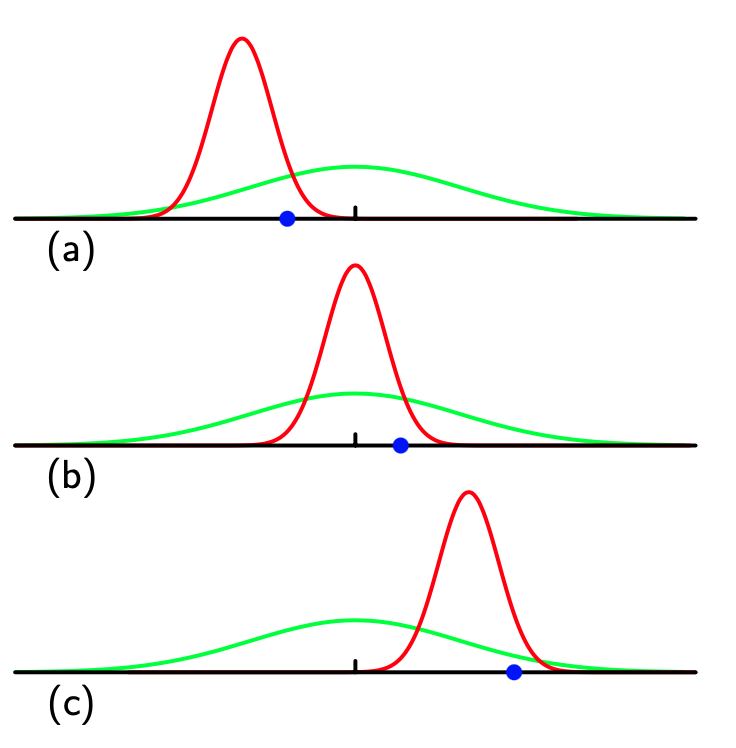
The green curve shows the true Gaussian distribution from which data is generated, and the three red curves show the Gaussian distributions obtained by fitting to three datasets, each consisting of two data points shown in blue, using the maximum likelihood results. Averaged across the three datasets, the mean is correct, but the variance is systematically under-estimated because it is measured relative to the sample mean and not relative to the true mean.
Curve Fitting
Here we dicuss the curve fitting example and view it from a probabilistic perspective, thereby gaining some insights into error functions and regularization, as well as taking us towards a full Bayesian treatment. The goal in the curve fitting problem is to be able to make predictions for the target variable given some new value of the input variable on the basis of a set of training data comprising N input values and their corresponding target values . We can express our uncertainty over the value of the target variable using a probability distribution. For this purpose, we shall assume that, given the value of , the corresponding value of has a Gaussian distribution with a mean equal to the value of the polynomial curve given by
Thus we have
Here we have defined a precision parameter β corresponding to the inverse variance of the distribution .
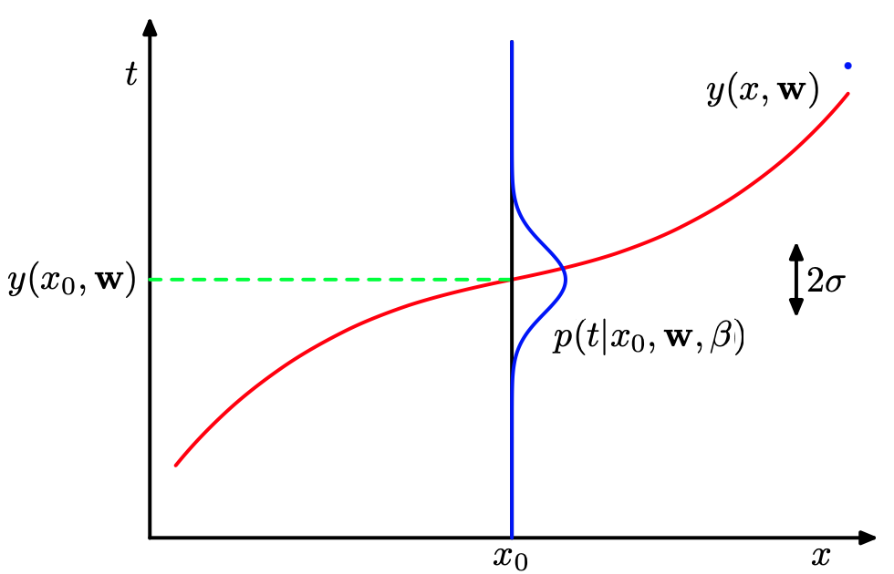
We now use the training data to determine the values of the unknown parameters and β by maximum likelihood. If the data are assumed to be drawn independently from the distribution , then the likelihood function is given by
It is convenient to maximize the logarithm of the likelihood function:
Note: the terms “probability” and “likelihood” have different meanings in statistics: given a statistical model with some parameters , the word “probability” is used to describe how plausible a future outcome is (knowing the parameter values ), while the word “likelihood” is used to describe how plausible a particular set of parameter values are, after the outcome is known.
Consider first the determination of the maximum likelihood solution for the polynomial coefficients, which will be denoted by determined by maximizing w.r.t . For this purpose, we omit the last two terms on the right-hand side because they do not depend on . Also, we note that scaling the log likelihood by a positive constant coefficient does not alter the location of the maximum with respect to , and so we can replace the coefficient with . We therefore see that maximizing likelihood is equivalent, so far as determining is concerned, to minimizing the sum-of-squares error function defined by the above equation. Thus the sum-of-squares error function has arisen as a consequence of maximizing likelihood under the assumption of a Gaussian noise distribution.
We can also use maximum likelihood to determine the precision parameter β of the Gaussian conditional distribution. Maximizing (1.62) with respect to β gives
Having determined the parameters and β, we can now make predictions for new values of :
Now let us take a step towards a more Bayesian approach and introduce a prior distribution over the polynomial coefficients . For simplicity, let us consider a Gaussian distribution of the form
where is the precision of the distribution, and is the total number of elements in the vector for an th order polynomial. Variables such as , which control the distribution of model parameters, are called hyperparameters. Using Bayes’ theorem, the posterior distribution for is proportional to the product of the prior distribution and the likelihood function
Or,
We can now determine by finding the most probable value of given the data, in other words by maximizing the posterior distribution. This technique is called maximum posterior, or simply MAP. Taking the negative logarithm of the above and combining with the equation before, we find that the maximum of the posterior is given by the minimum of
Thus we see that maximizing the posterior distribution is equivalent to minimizing the regularized sum-of-squares error function, with a regularization parameter given by .
Now suppose we are given the training data and , along with a new test point , and our goal is to predict the value of . We therefore wish to evaluate the predictive distribution . Here we shall assume that the parameters and are fixed and known in advance (in later chapters we shall discuss how such parameters can be inferred from data in a Bayesian setting). A Bayesian treatment simply corresponds to a consistent application of the sum and product rules of probability, which allow the predictive distribution to be written in the form
Here is given above, and we have omitted the dependence on and to simplify the notation. Here is the posterior distribution over parameters. We shall see this posterior distribution is a Gaussian and can be evaluated analytically. Similarly, the integration can also be performed analytically with the result that the predictive distribution is given by a Gaussian of the form
where the mean and variance are given by:
Here the matrix is given by:
where is the unit matrix, and we have defined the vector with elements for . We see that the variance, as well as the mean, of the predictive distribution is dependent on . The first term in represents the uncertainty in the predicted value of due to the noise on the target variables and was expressed already in the maximum likelihood predictive distribution through ML. However, the second term arises from the uncertainty in the parameters and is a consequence of the Bayesian treatment. The predictive distribution for the synthetic sinusoidal regression problem:
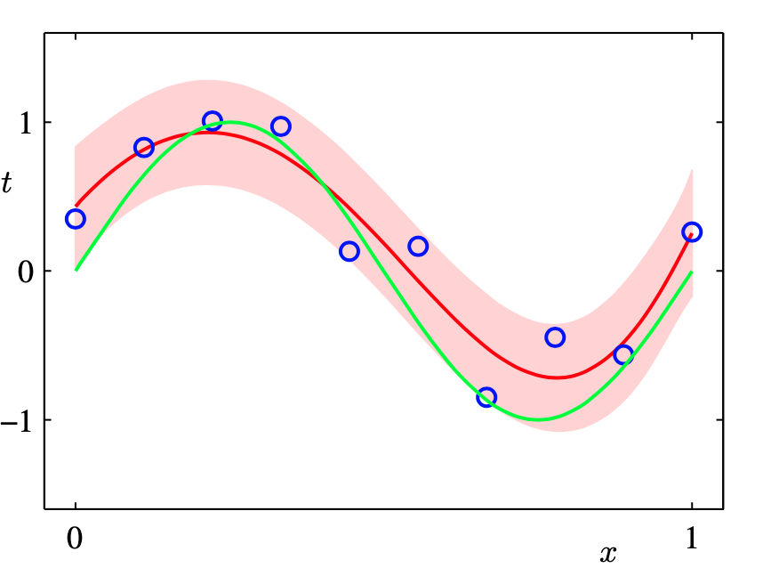
The predictive distribution resulting from a Bayesian treatment of polynomial curve fitting using an polynomial, with the fixed parameters and (corresponding to the known noise variance), in which the red curve denotes the mean of the predictive distribution and the red region corresponds to ±1 standard deviation around the mean.
Model Selection: Testing and Validating
The only way to know how well a model will generalize to new cases is to actually try it out on new cases. Split your data into two sets: the training set and the test set. As these names imply, you train your model using the training set, and you test it using the test set. The error rate on new cases is called the generalization error. The problem is that you measured the generalization error multiple times on the test set, and you adapted the model and hyperparameters to produce the best model for that particular set. This means that the model is unlikely to perform as well on new data.
Furthermore, as well as finding the appropriate values for complexity parameters within a given model, we may wish to consider a range of different types of model in order to find the best one for our particular application. If data is plentiful, then one approach is simply to use some of the available data to train a range of models, or a given model with a range of values for its complexity parameters, and then to compare them on independent data, sometimes called a validation set or sometimes the development set, or dev set. More specifically, you train multiple models with various hyperparameters on the reduced training set (i.e., the full training set minus the validation set), and you select the model that performs best on the validation set. After this holdout validation process, you train the best model on the full training set (including the validation set), and this gives you the final model. Lastly, you evaluate this final model on the test set to get an estimate of the generalization error. If the model design is iterated many times using a limited size dataset, then some over-fitting to the validation data can occur and so it may be necessary to keep aside a third test set on which the performance of the selected model is finally evaluated. Not that if the validation set is too small, then model evaluations will be imprecise. One way to solve this problem is to perform repeated cross-validation, using many small validation sets.
In many applications, however, the supply of data for training and testing will be limited, and in order to build good models, we wish to use as much of the available data as possible for training. However, if the validation set is small, it will give a relatively noisy estimate of predictive performance. One solution to this dilemma is to use cross-validation. This allows a proportion (S−1)/S of the available data to be used for training while making use of all of the data to assess performance. When data is particularly scarce, it may be appropriate to consider the case S = N, where N is the total number of data points, which gives the leave-one-out technique. In general, cross-validation works by taking the available data and partitioning it into S groups (in the simplest case these are of equal size). Then S− 1 of the groups are used to train a set of models that are then evaluated on the remaining group. This procedure is then repeated for all S possible choices for the held-out group, indicated here by the red blocks, and the performance scores from the S runs are then averaged.
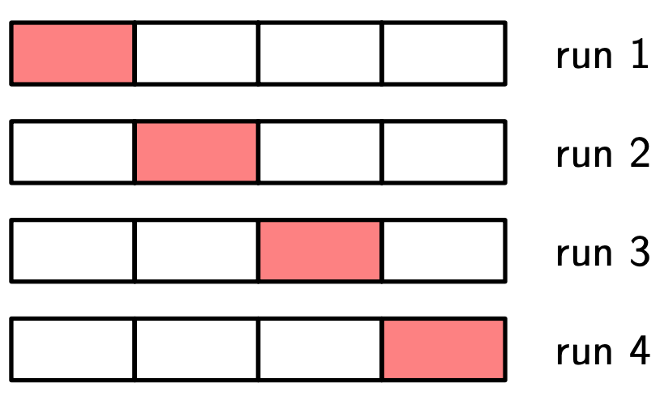
One major drawback of cross-validation is that the number of training runs that must be performed is increased by a factor of S, and this can prove problematic for models in which the training is itself computationally expensive. A further problem with techniques such as cross-validation that use separate data to assess performance is that we might have multiple complexity parameters for a single model (for instance, there might be several regularization parameters). Exploring combinations of settings for such parameters could, in the worst case, require a number of training runs that is exponential in the number of parameters.
Curse of Dimensionality
It turns out that many things behave very differently in high-dimensional space. For example, if you pick a random point in a unit square (a 1 × 1 square), it will have only about a 0.4% chance of being located less than 0.001 from a border (in other words, it is very unlikely that a random point will be “extreme” along any dimension). But in a 10,000-dimensional unit hypercube (a 1 × 1 × ⋯ × 1 cube, with ten thousand 1s), this probability is greater than 99.999999%. Most points in a high-dimensional hypercube are very close to the border.3
In theory, one solution to the curse of dimensionality could be to increase the size of the training set to reach a sufficient density of training instances. Unfortunately, in practice, the number of training instances required to reach a given density grows exponentially with the number of dimensions.
An increase in the dimensions means an increase in the number of features. To model such data, we need to increase complexity of the model by increasing the number of parameters. The complexity of functions of many variables can grow exponentially with the dimension, and if we wish to be able to estimate such functions with the same accuracy as function in low dimensions, then we need the size of our training set to grow exponentially as well.
As another simple example, consider a sphere of radius in a space of D dimensions, and ask what is the fraction of the volume of the sphere that lies between radius and . We can evaluate this fraction by noting that the volume of a sphere of radius in D dimensions must scale as D, and so we write where K_D depends on D. Then
which tends to 1 ad D increases. Thus, in spaces of high dimensionality, most of the volume of a sphere is concentrated in a thin shell near the surface! Another similar example: in a high-dimensional space, most of the probability mass of a Gaussian is located within a thin shell at a specific radius. Simialrly, most of density for a multivariate unit uniform distribution is consentrated around the sides of the unit box. This leads to sparse sampling in high dimensions that means all sample points are close to an edge of the sample space.
One more example, consider the nearest-neighbor procedure for inputs uniformly distributed in a -dimensional unit hypercube. Suppose we send out a hypercubical neighborhood about a target point to capture a fraction of the observations. Since this corresponds to a fraction r of the unit volume, the expected edge length will be . In ten dimensions and , while the entire range for each input is only 1.0. So to capture 1% or 10% of the data to form a local average, we must cover 63% or 80% of the range of each input variable. Such neighborhoods are no longer “local”. Reducing dramatically does not help much either, since the fewer observations we average, the higher is the variance of our fit.
Although the curse of dimensionality certainly raises important issues for pattern recognition applications, it does not prevent us from finding effective techniques applicable to high-dimensional spaces:
- First, real data will often be confined to a region of the space having lower effective dimensionality, and in particular the directions over which important variations in the target variables occur may be so confined.
- Second, real data will typically exhibit some smoothness properties (at least locally) so that for the most part small changes in the input variables will produce small changes in the target variables, and so we can exploit local interpolation-like techniques to allow us to make predictions of the target variables for new values of the input variables. For example, consider images captured of identical planar objects on a conveyor belt, in which the goal is to determine their orientation. Each image is a point in a high-dimensional space whose dimensionality is determined by the number of pixels. Because the objects can occur at different positions within the image and in different orientations, there are three degrees of freedom of variability between images, and a set of images will live on a three dimensional manifold embedded within the high-dimensional space.
Minimizing the expected loss
For many applications, our objective will be more complex than simply minimizing the number of misclassifications. That is why we introduce a loss function, also called a cost function, which is a single, overall measure of loss incurred in taking any of the available decisions or actions. Our goal is then to minimize the total loss incurred. Suppose that, for a new value of , the true class is and that we assign to class (where may or may not be equal to ). In so doing, we incur some level of loss that we denote by , which we can view as the element of a loss matrix. For a given input vector , our uncertainty in the true class is expressed through the joint probability distribution and so we seek instead to minimize the average loss, where the average is computed with respect to this distribution, which is given by
Each can be assigned independently to one of the decision regions . Our goal is to choose the regions in order to minimize the expected loss, which implies that for each , we should minimize . As before, we can use the product rule to eliminate the common factor of . Thus the decision rule that minimizes the expected loss is the one that assigns each new to the class for which the quantity
is a minimum. This is clearly trivial to do, once we know the posterior class probabilities .
Rejection Option
Classification errors arise from the regions of input space where the largest of the posterior probabilities is significantly less than unity, or equivalently where the joint distributions have comparable values. These are the regions where we are relatively uncertain about class membership. In some applications, it will be appropriate to avoid making decisions on the difficult cases in anticipation of a lower error rate on those examples for which a classification decision is made. This is known as the reject option. We can achieve this by introducing a threshold and rejecting those inputs for which the largest of the posterior probabilities is less than or equal to . Note that setting will ensure that all examples are rejected, whereas if there are K classes then setting will ensure that no examples are rejected. Thus the fraction of examples that get rejected is controlled by the value of .
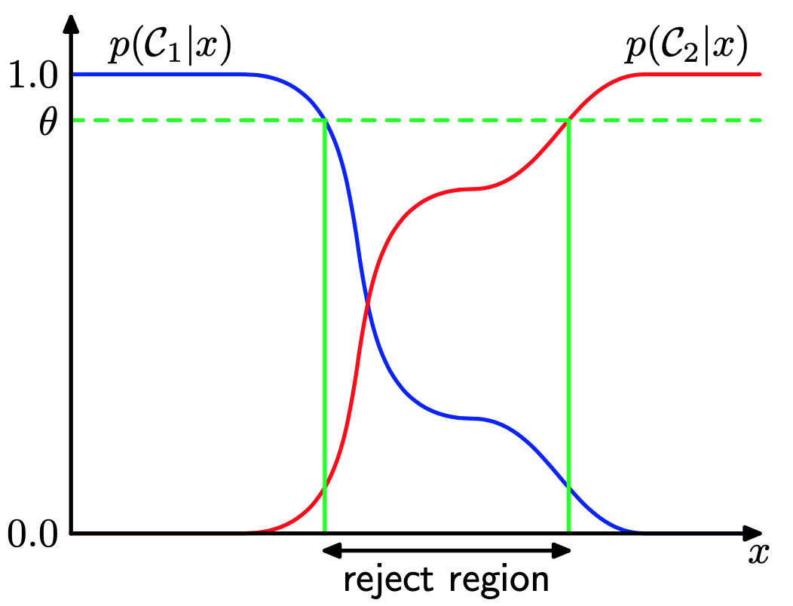
Loss functions for regression
So far, we have discussed decision theory in the context of classification problems. We now turn to the case of regression problems, such as the curve fitting example discussed earlier. The decision stage consists of choosing a specific estimate of the value of for each input . Suppose that in doing so, we incur a loss . The average, or expected, loss is then given by
A common choice of loss function in regression problems is the squared loss given by :
Our goal is to choose so as to minimize . If we assume a completely flexible function :
So:
This can readily be extended to multiple target variables represented by the vector , in which case the optimal solution is the conditional average .
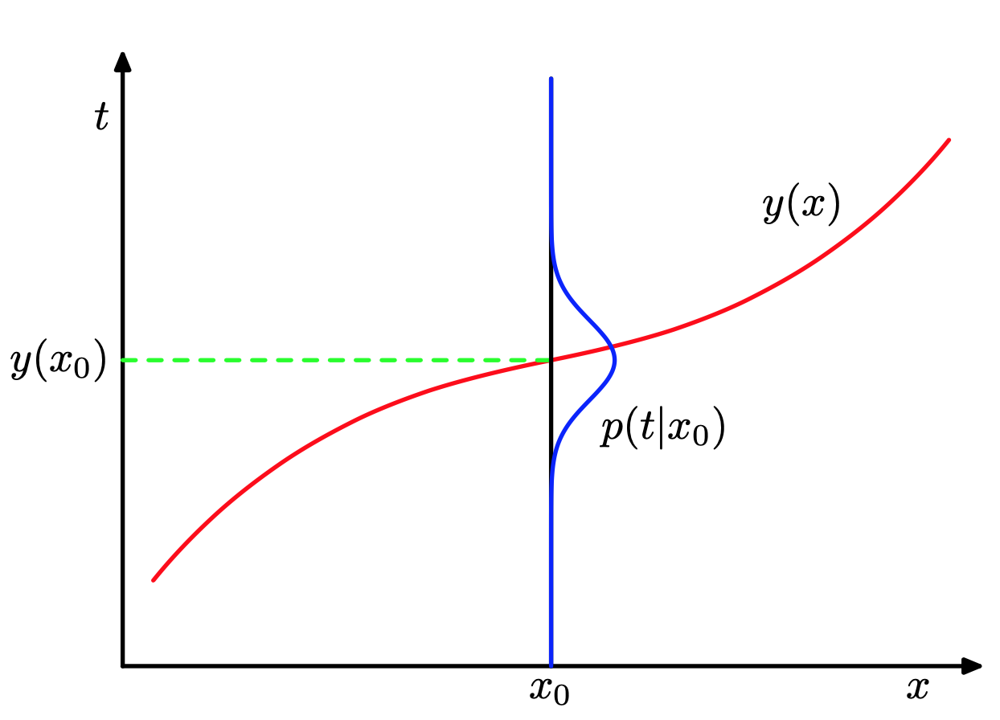
We can also derive this result in a slightly different way, which will also shed light on the nature of the regression problem. Armed with the knowledge that the optimal solution is the conditional expectation, we can expand the square term as follows
Substituting into the loss function and performing the integral over , we see that the cross-term vanishes and we obtain an expression for the loss function in the form
The function we seek to determine enters only in the first term, which will be minimized when , in which case this term will vanish. rgets, and is called the Bayes error.
is the best we can ever hope to do with any learning algorithm. This is simply the result that we derived previously and that shows that the optimal least squares predictor is given by the conditional mean. The second term (called Bayes error) is the variance of the distribution of , averaged over :
It represents the intrinsic variability of the target data and can be regarded as noise. Because it is independent of , it represents the irreducible minimum value of the loss function.
Entropy
Considere a discrete random variable and we ask how much information is received when we observe a specific value for this variable. The amount of information can be viewed as the ‘degree of surprise’ on learning the value of . If we are told that a highly improbable event has just occurred, we will have received more information than if we were told that some very likely event has just occurred, and if we knew that the event was certain to happen we would receive no information. Our measure of information content will therefore depend on the probability distribution , and we therefore look for a quantity that is a monotonic function of the probability p(x) and that expresses the information content. Note that if we have two events and that are unrelated, then the information gain from observing both of them should be the sum of the information gained from each of them separately, so that . Two unrelated events will be statistically independent and so . From these two relationships, it is easily shown that must be given by the logarithm of : . Note that low probability events correspond to high information content. The average amount of information is obtained by taking the expectation with respect to the distribution :
This important quantity is called the entropy of the random variable . Note that and so we shall take whenever we encounter a value for x such that . Distributions that are sharply peaked around a few values will have a relatively low entropy, whereas those that are spread more evenly across many values will have higher entropy. For example, when one of is 1 and the rest is zero, entropy is at its minimum value 0. But if (all equal), the entropy is at maximum value . Entropy defintion for continuous variables is similar:
Linear Models for Regression
The simplest form of linear regression models are also linear functions of the input variables. However, we can obtain a much more useful class of functions by taking linear combinations of a fixed set of nonlinear functions of the input variables, known as basis functions. Such models are linear functions of the parameters, which gives them simple analytical properties, and yet can be nonlinear with respect to the input variables. The simplest linear model for regression is one that involves a linear combination of the input variables
where . This is often simply known as linear regression. The key property of this model is that it is a linear function of the parameters . It is also, however, a linear function of the input variables , and this imposes significant limitations on the model. We therefore extend the class of models by considering linear combinations of fixed nonlinear functions of the input variables, of the form
where are known as basis functions. By denoting the maximum value of the index by , the total number of parameters in this model will be . The parameter allows for any fixed offset in the data and is sometimes called a bias parameter (not to be confused with ‘bias’ in a statistical sense). It is often convenient to define an additional dummy ‘basis function’ so that
where and . The example of polynomial regression mentioned before is a particular example of this model in which there is a single input variable , and the basis functions take the form of powers of so that . One limitation of polynomial basis functions is that they are global functions of the input variable, so that changes in one region of input space affect all other regions. There are many other possible choices for the basis functions, for example
where the govern the locations of the basis functions in input space, and the parameter governs their spatial scale. These are usually referred to as Gaussian basis functions, although it should be noted that they are not required to have a probabilistic interpretation, and in particular the normalization coefficient is unimportant because these basis functions will be multiplied by adaptive parameters . Another possibility is the sigmoidal basis function of the form
where is the sigmoid function. Yet another possible choice of basis function is the Fourier basis, which leads to an expansion in sinusoidal functions. Each basis function represents a specific frequency and has infinite spatial extent. Most of the discussion in this chapter, however, is independent of the particular choice of basis function set, and so for most of our discussion we shall not specify the particular form of the basis functions including the identity .
Maximum likelihood and least squares
As before, we assume that the target variable is given by a deterministic function with additive Gaussian noise so that
where is a zero mean Gaussian random variable with precision (inverse variance) . Thus we can write
Recall that, if we assume a squared loss function, then the optimal prediction, for a new value of , will be given by the conditional mean of the target variable. In the case of a Gaussian conditional distribution of the form, the conditional mean will be simply
Note that the Gaussian noise assumption implies that the conditional distribution of given is unimodal, which may be inappropriate for some applications. An extension to mixtures of conditional Gaussian distributions, which permit multimodal conditional distributions, will be discussed later.
Now consider a dataset of inputs with corresponding target values . Making the assumption that these data points are drawn independently from the distribution (equivalently, are distributed IID), we obtain the following expression for the likelihood function, which is a function of the adjustable parameters and , in the form
Note that in supervised learning problems such as regression (and classification), we are not seeking to model the distribution of the input variables. Thus will always appear in the set of conditioning variables, and so from now on we will drop the explicit from expressions to keep the notation uncluttered. Taking the logarithm of the likelihood function, and making use of the standard form for the univariate Gaussian, we have
where
Having written down the likelihood function, we can use maximum likelihood to determine and . Consider first the maximization with respect to . We see that maximization of the likelihood function under a conditional Gaussian noise distribution for a linear model is equivalent to minimizing a sum-of-squares error function given by . The gradient of the log likelihood function takes the form
Setting this gradient to zero and solving for , we obtain:
which are known as the Normal Equation for the least squares problem. Here is an N×M matrix, called the design matrix, whose elements are given by , so that
The quantity is known as the Moore-Penrose pseudo-inverse of the matrix. It can be regarded as a generalization of the notion of matrix inverse to nonsquare matrices. We can also maximize the log likelihood function with respect to the noise precision parameter β, giving
and so we see that the inverse of the noise precision is given by the residual variance of the target values around the regression function. Geometrical interpretation of the least-squares solution, in an N-dimensional space whose axes are the values of of the outputs in the training set. The least-squares regression function is obtained by finding the orthogonal projection of the data vector onto the subspace spanned by the basis functions - feature vectors - in which each basis function is viewed as a vector of length N with elements , i.e., .
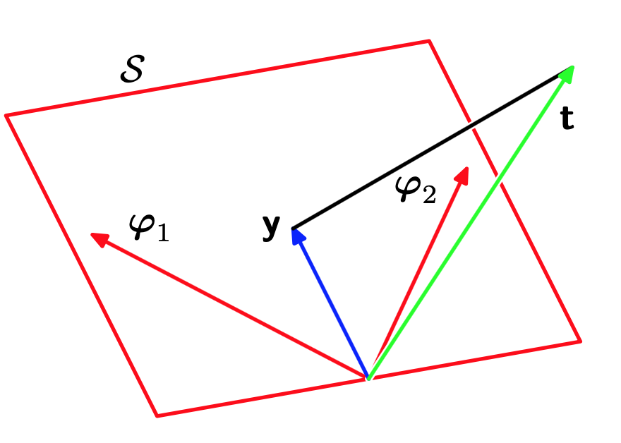
So far, we have considered the case of a single target variable . In some applications, we may wish to predict K > 1 target variables, which we denote collectively by the target vector . This could be done by introducing a different set of basis functions for each component of , leading to multiple, independent regression problems. However, a more interesting, and more common, approach is to use the same set of basis functions to model all of the components of the target vector so that where is a matrix. Everything goes similar to single output :
If we examine this result for each target variable , we have . Thus the solution to the regression problem decouples between the different target variables, and we need only compute a single pseudo-inverse matrix , which is shared by all of the vectors .
The extension to general Gaussian noise distributions having arbitrary covariance matrices is straightforward. This leads to a decoupling into K independent regression problems. This result is unsurprising because the parameters define only the mean of the Gaussian noise distribution, and we know that the maximum likelihood solution for the mean of a multivariate Gaussian is independent of the covariance. From now on, we shall therefore consider a single target variable for simplicity.
Training Models
The Normal Equation computes the inverse of , which is an (n + 1) × (n + 1) matrix (where n is the number of features). The computational complexity of inverting such a matrix is typically about to (depending on the implementation). In practice, a direct solution of the normal equations can lead to numerical difficulties when is close to singular. In particular, when two or more of the basis vectors are colinear (perfectly correlated), or nearly so, the resulting parameter values can have large magnitudes or not uniquely defined. However, the fitted values are still the projection of onto the space of s; there would just be more than one way to express that projection in terms of s. Such near degeneracies will not be uncommon when dealing with real datasets. Note that the addition of a regularization term ensures that the matrix is non-singular, even in the presence of degeneracies.
The pseudoinverse itself is computed using a standard matrix factorization technique called Singular Value Decomposition (SVD) that can decompose the training set matrix into the matrix multiplication of three matrices (see numpy.linalg.svd()). The pseudoinverse is computed as . To compute the matrix , the algorithm takes and sets to zero all values smaller than a tiny threshold value, then it replaces all the non-zero values with their inverse, and finally it transposes the resulting matrix. This approach is more efficient than computing the Normal Equation, plus it handles edge cases nicely: indeed, the Normal Equation may not work if the matrix is not invertible (i.e., singular), such as if m < n or if some features are redundant, but the pseudo-inverse is always defined. The SVD approach used by Scikit-Learn’s LinearRegression class is about .
Gradient Descent
In machine learning the more common way to optimize the objective function is to use iterative algorithms such as Gradient descent. Gradient Descent is a very generic optimization algorithm capable of finding optimal solutions to a wide range of problems. The general idea of Gradient Descent is to tweak parameters iteratively in order to minimize a cost function. An important parameter in Gradient Descent is the size of the steps, determined by the learning rate hyperparameter. If the learning rate is too small, then the algorithm will have to go through many iterations to converge, which will take a long time.
Learning rate typically with small values e.g. 0.01 or 0.0001. On the other hand, if the learning rate is too high, you might jump across the valley and end up on the other side, possibly even higher up than you were before. When using Gradient Descent, you should ensure that all features have a similar scale (e.g., using Scikit-Learn’s StandardScaler class), or else it will take much longer to converge. With gradient descent, we never actually reach the optimum, but merely approach it gradually. Why, then, would we ever prefer gradient descent? Two reasons:
-
We can only solve the system of equations in closed-form like Normal Equations for a handful of models. By contrast, we can apply gradient descent to any model for which we can compute the gradient. Importantly, this can usually be done automatically, so software packages like Theano and TensorFlow can save us from ever having to compute partial derivatives by hand.
-
Solving a large system of linear equations can be expensive (matrix inversion is an algorithm), possibly many orders of magnitude more expensive than a single gradient descent update. Therefore, gradient descent can sometimes find a reasonable solution much faster than solving the linear system. Therefore, gradient descent is often more practical than computing exact solutions, even for models where we are able to derive the latter.
To implement algorithms in Python, we vectorize algorithms by expressing them in terms of vectors and matrices (using Numpy or deep learning libraries, for example). This way, the equations, and the code, will be simpler and more readable. Also we get rid of dummy variables/indices! Vectorized code is much faster. It cuts down on Python interpreter overhead. It uses highly optimized linear algebra libraries, fast matrix multiplication on a Graphics Processing Unit (GPU).
To implement Gradient Descent, compute the gradient of the cost function with regards to each model parameter. This could involve calculations over the full training set , at each Gradient Descent step! This algorithm is called Batch Gradient Descent: it uses the whole batch of training data at every step. As a result it is terribly slow on very large training sets. However, Gradient Descent scales well with the number of features; training a Linear Regression model when there are hundreds of thousands of features is much faster using Gradient Descent than using the Normal Equation or SVD decomposition.
Stochastic Gradient Descent just picks a random instance in the training set at every step and computes the gradients based only on that single instance. Obviously this makes the algorithm much faster since it has very little data to manipulate at every iteration. It also makes it possible to train on huge training sets, since only one instance needs to be in memory at each iteration. When the cost function is very irregular, this can actually help the algorithm jump out of local minima, so Stochastic Gradient Descent has a better chance of finding the global minimum than Batch Gradient Descent does. To help SGD converges despite all the flunctuation due to it stochastic nature, we gradually reduce the learning rate. The function that determines the learning rate at each iteration is called the learning schedule. If the learning rate is reduced too quickly, you may get stuck in a local minimum, or even end up frozen halfway to the minimum. If the learning rate is reduced too slowly, you may jump around the minimum for a long time and end up with a suboptimal solution if you halt training too early.
When using Stochastic Gradient Descent, the training instances must be independent and identically distributed (IID), to ensure that the parameters get pulled towards the global optimum, on average. A simple way to ensure this is to shuffle the instances during training (e.g., pick each instance randomly, or shuffle the training set at the beginning of each epoch). If you do not do this, for example if the instances are sorted by label, then SGD will start by optimizing for one label, then the next, and so on, and it will not settle close to the global minimum.
Another very common approach is Mini-batch Gradient Descent: at each step, instead of computing the gradients based on the full training set (as in Batch GD) or based on just one instance (as in Stochastic GD)Mini-batch GD computes the gradients on small random sets of instances. The main advantage of Mini-batch GD over Stochastic GD is that you can get a performance boost from hardware optimization of matrix operations, especially when using GPUs.
Early Stopping
As the epochs go by, the algorithm learns and its prediction error (RMSE) on the training set naturally goes down, and so does its prediction error on the validation set. However, after a while the validation error stops decreasing and actually starts to go back up. This indicates that the model has started to overfit the training data. With early stopping you just stop training as soon as the validation error reaches the minimum. It is such a simple and efficient regularization technique.
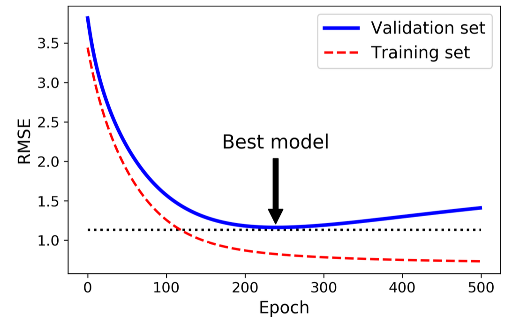
The cross entropy between two probability distributions p and q is defined as .
Batch and Online Learning
Another criterion used to classify Machine Learning systems is whether or not the system can learn incrementally from a stream of incoming data. In batch learning, the system is incapable of learning incrementally; it must be trained using all the available data which generally takes a lot of time and computing resources, so it is typically done offline. First the system is trained, and then it is launched into production and runs without learning anymore (offline learning ). If you want a batch learning system to know about new data (such as a new type of spam), you need to train a new version of the system from scratch on the full dataset (not just the new data, but also the old data), then stop the old system and replace it with the new one. If your system needs to adapt to rapidly changing data (e.g., to predict stock prices), then you need a more reactive solution. Also, training on the full set of data requires a lot of computing resources (CPU, memory space, disk space, disk I/O, network I/O, etc.). If you have a lot of data and you automate your system to train from scratch every day, it will end up costing you a lot of money. If the amount of data is huge, it may even be impossible to use a batch learning algorithm.
In online learning, you train the system incrementally by feeding it data instances sequentially, either individually or by small groups called mini-batches. Each learning step is fast and cheap, so the system can learn about new data on the fly, as it arrives. Online learning is great for systems that receive data as a continuous flow (e.g., stock prices) and need to adapt to change rapidly or autonomously. It is also a good option. A big challenge with online learning is that if bad data is fed to the system, the system’s performance will gradually decline. If we are talking about a live system, your clients will notice.
Hypothesis Testing
Up to now we have made minimal assumptions about the true distribution of the data. We now assume that the observations are uncorrelated and we chose them to have precision , or constant variance . Recal that was an unbias estimator of :
The variance–covariance matrix of the least squares parameter estimates is easily derived from equation its definition and is given by
because . We gave the maximum likelihood estimate of before which is bias. Typically one estimates the variance by
The rather than in the denominator makes an unbiased estimate of . Therfore, we can say: . Assuming are independent, every , a chi-squared distribution with degrees of freedom. In addition and are statistically independent. We use these distributional properties to form tests of hypothesis and confidence intervals for the parameters . For example, to test the hypothesis that a particular coefficient , we form the standardized coefficient or -score:
where is the th diagonal element of . Under the null hypothesis that , is distributed as (a distribution with degrees of freedom), and hence a large (absolute) value of will lead to rejection of this null hypothesis. If is replaced by a known value , then would have a standard normal distribution. The difference between the tail quantiles of a t-distribution and a standard normal become negligible as the sample size increases, and so we typically use the normal quantiles.
Regularized least squares
The idea of adding a regularization term to an error function in order to control over-fitting to improve generalization is common practice. So the total error to be minimized is where λ is the regularization coefficient that controls the relative importance of the data-dependent error and the regularization term . One of the simplest forms of regularizer is given by the sum-of-squares of the weight vector elements . So the total error function becomes:
This particular choice of regularizer encourages weight values to decay towards zero, unless supported by the data. It has the advantage that the error function remains a quadratic function of , and so its exact minimizer can be found in closed form. Specifically, setting the gradient with respect to to zero, and solving for as before, we obtain:
The solution adds a positive constant to the diagonal of before inversion. This makes the problem nonsingular, even if is not of full rank, and was the main motivation for ridge regression when it was first introduced in statistics (Hoerl and Kennard, 1970).
A more general regularizer is sometimes used, for which the regularized error takes the form
where corresponds to the quadratic regularizer. The case of is known as the lasso in the statistics literature . This is L1-regularizetion that encourages some of the coefficients to be exactly zero if is sufficiently large, leading to a sparse model in which the corresponding basis functions play no role. To see this, we first note that minimizing the above objective is equivalent to minimizing the unregularized sum-of-squares error subject to the constraint
for an appropriate value of the parameter , where the two approaches can be related using Lagrange multipliers. L1-regularizetion is useful in situations where you have lots of features, but only a small fraction of them are likely to be relevant (e.g. genetics). The above cost function is a quadratic program, a more difficult optimization problem than for L2 regularization. What would go wrong if you just apply gradient descent? Fast algorithms are implemented in frameworks like scikit-learn.
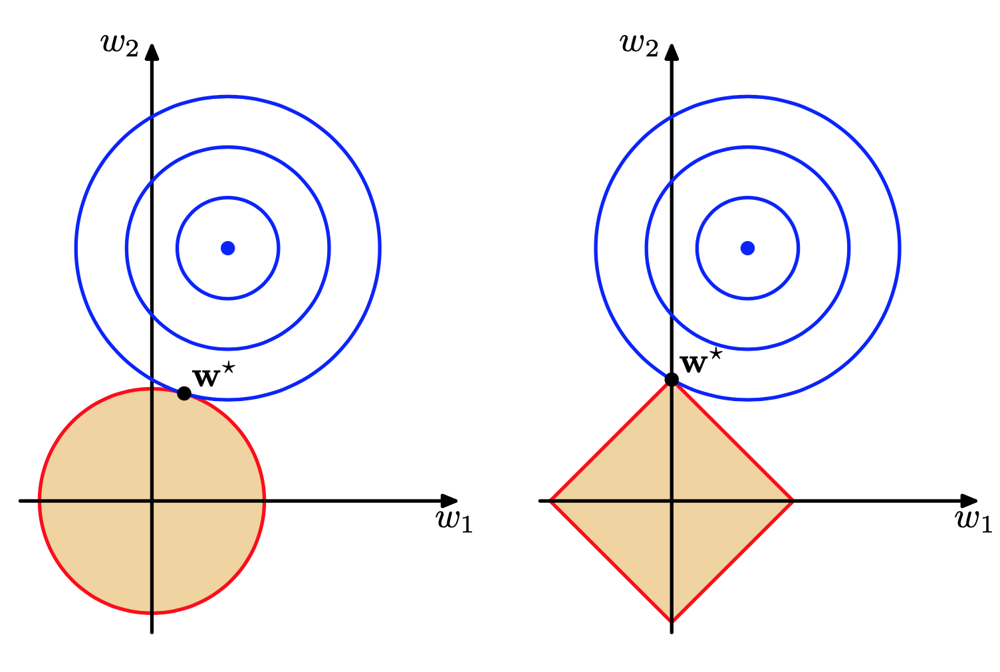
As is increased, so an increasing number of parameters are driven to zero. Regularization allows complex models to be trained on datasets of limited size without severe over-fitting, essentially by limiting the effective model complexity. It is important to scale the data (e.g., using a StandardScaler) before performing Ridge Regression, as it is sensitive to the scale of the input features. This is true of most regularized models.
Elastic Net is a middle ground between Ridge Regression and Lasso Regression. The regularization term is a simple mix of both Ridge and Lasso’s regularization terms, and you can control the mix ratio . When , Elastic Net is equivalent to Ridge Regression, and when , it is equivalent to Lasso Regression
It is almost always preferable to have at least a little bit of regularization, so generally you should avoid plain Linear Regression. Ridge is a good default, but if you suspect that only a few features are actually useful, you should prefer Lasso or Elastic Net.
Bias-Variance decomposition
Let's consider a frequentist viewpoint of the model complexity issue, known as the bias-variance trade-off. When we discussed decision theory for regression problems, we considered various loss functions each of which leads to a corresponding optimal prediction once we are given the conditional distribution . A popular choice is the squared loss function, for which the optimal prediction is given by the conditional expectation, which we denote by and which is given by
We showed that the expected squared loss can be written in the form
Recall that the second term, which is independent of , arises from the intrinsic noise on the data and represents the minimum achievable value of the expected loss. The first term depends on our choice for the function , and we will seek a solution for which makes this term a minimum. Because it is nonnegative, the smallest that we can hope to make this term is zero. However, in practice we have a dataset containing only a finite number N of data points not unlimited amount of data, and consequently we try to estimate the regression function . If we model the using a parametric function governed by a parameter vector , then from a Bayesian perspective the uncertainty in our model is expressed through a posterior distribution over .
A frequentist treatment, however, involves making a point estimate of based on the dataset , and tries instead to interpret the uncertainty of this estimate through the following thought experiment: Suppose we had a large number of datasets each of size N and each drawn independently from the distribution . For any given dataset , we can run our learning algorithm and obtain a prediction function . Different datasets from the ensemble will give different functions and consequently different values of the squared loss. The performance of a particular learning algorithm is then assessed by taking the average over this ensemble of datasets. Now the expectation of squared error with respect to is
We see that the expected squared difference between and the regression function can be expressed as the sum of two terms. The first term, called the squared bias, represents the extent to which the average prediction over all datasets differs from the desired regression function. The second term, called the variance, measures the extent to which the solutions for individual datasets vary around their average, and hence this measures the extent to which the function is sensitive to the particular choice of dataset.
So far, we have considered a single input value . If we substitute this expansion back into (2), we obtain the following decomposition of the expected squared loss:
where:
and the bias and variance terms now refer to integrated quantities. To have an example for the above discussion to get clear, we create 100 datasets () each containing N=25 data points, independently from the sinusoidal curve . For each dataset , we fit a model with 24 Gaussina basis fucntion by minimizing the regularized error function (coefficient ) to give a prediction function . Large value of the regularization coefficient gives low variance but high bias.
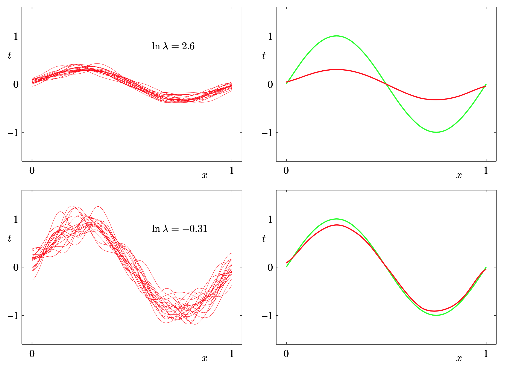
Conversely on the bottom row, for which is small, there is large variance (shown by the high variability between the red curves in the left plot) but low bias (shown by the good fit between the average model fit and the original sinusoidal function). Note that the result of averaging many solutions for the complex model with M = 25 is a very good fit to the regression function, which suggests that averaging may be a beneficial procedure. Indeed, a weighted averaging of multiple solutions lies at the heart of a Bayesian approach, although the averaging is with respect to the posterior distribution of parameters, not with respect to multiple datasets. The average prediction is estimated from
and the integrated squared bias and integrated variance are then given by
where the integral over x weighted by the distribution p(x) is approximated by a finite sum over data points drawn from that distribution. We see that small values of λ allow the model to become finely tuned to the noise on each individual dataset leading to large variance. Conversely, a large value of λ pulls the weight parameters towards zero leading to large bias.
The Bias/Variance Tradeoff
This above equation leads to an important theoretical result of statistics and Machine Learning which is the fact that a model’s expected error can be expressed as the sum of three very different errors:
- Bias: how wrong the expected prediction is. This part of the generalization error is due to wrong assumptions, such as assuming that the data is linear when it is actually quadratic. (corresponds to underfitting)
- Variance: the amount of variability in the predictions (corresponds to overfitting). This part is due to the model’s excessive sensitivity to small variations in the training data. A model with many degrees of freedom is likely to have high variance, and thus to overfit the training data.
- Irreducible error (Bayes error): the inherent unpredictability of the targets. This part is due to the noisiness of the data itself. The only way to reduce this part of the error is to clean up the data (e.g., fix the data sources, such as broken sensors, or detect and remove outliers).
Our goal is to minimize the expected loss, which we have decomposed into the sum of a (squared) bias, a variance, and a constant noise term. As we shall see, there is a trade-off between bias and variance, with very flexible models having low bias and high variance, and relatively rigid models having high bias and low variance. The model with the optimal predictive capability is the one that leads to the best balance between bias and variance. If we have an overly simple model (e.g. KNN with large k), it might have
- high bias (because it’s too simplistic to capture the structure in the data)
- low variance (because there’s enough data to get a stable estimate of the decision boundary)
If you have an overly complex model (e.g. KNN with k = 1), it might have
- low bias (since it learns all the relevant structure)
- high variance (it fits the quirks of the data you happened to sample)
Increasing a model’s complexity will typically increase its variance and reduce its bias. Conversely, reducing a model’s complexity increases its bias and reduces its variance. This is why it is called a tradeoff.
Although the bias-variance decomposition may provide some interesting insights into the model complexity issue from a frequentist perspective, it is of limited practical value because the bias-variance decomposition is based on averages with respect to ensembles of datasets, whereas in practice we have only the single observed dataset. If we had a large number of independent training sets of a given size, we would be better off combining them into a single large training set, which of course would reduce the level of over-fitting for a given model complexity.
Bayesian Linear Regression
We have seen that the effective model complexity, governed by the number of basis functions, needs to be controlled according to the size of the dataset. Adding a regularization term to the log likelihood function means the effective model complexity can then be controlled by the value of the regularization coefficient, although the choice of the number and form of the basis functions is of course still important in determining the overall behaviour of the model. This leaves the issue of deciding the appropriate model complexity for the particular problem, which cannot be decided simply by maximizing the likelihood function, because this always leads to excessively complex models and over-fitting. Independent hold-out data can be used to determine model complexity, but this can be both computationally expensive and wasteful of valuable data. We therefore turn to a Bayesian treatment of linear regression.
Parameter distribution
We begin our discussion of the Bayesian treatment of linear regression by introducing a prior probability distribution over the model parameters . For the moment, we shall treat the noise precision parameter as a known constant. First note that the likelihood function (or - recall that we decided not to mention because we are not modeling its distribution) is the exponential of a quadratic function of . The corresponding conjugate prior is therefore given by a Gaussian distribution of the form
having mean and covariance . Next we compute the posterior distribution, which is proportional to the product of the likelihood function and the prior. For simplicity, we consider a zero-mean isotropic Gaussian governed by a single precision parameter so that
Due to the choice of a conjugate Gaussian prior distribution, the posterior distribution over will also be Gaussian:
where
The log of the posterior distribution is given by the sum of the log likelihood and the log of the prior and, as a function of , takes the form
Maximization of this posterior distribution with respect to is therefore equivalent to the minimization of the sum-of-squares error function with the addition of a quadratic regularization term .
We can illustrate Bayesian learning in a linear basis function model, using a simple example involving straight-line fitting. Consider a single input variable , a single target variable and a linear model of the form .Because this has just two adaptive parameters, we can plot the prior and posterior distributions directly in parameter space. We generate synthetic data from the function with parameter values and by first choosing values of from the uniform distribution, then evaluating , and finally adding Gaussian noise with standard deviation of 0.2 to obtain the target values .
Our goal is to recover the values of and from such data, and we will explore the dependence on the size of the dataset. We assume here that the noise variance is known and hence we set the precision parameter to its true value β = (1/0.2)2 = 25. Similarly, we fix the parameter to 2.0. The following Figure shows the results of Bayesian learning in this model as the size of the dataset increases and demonstrates the sequential nature of Bayesian learning in which the current posterior distribution forms the prior when a new data point is observed.
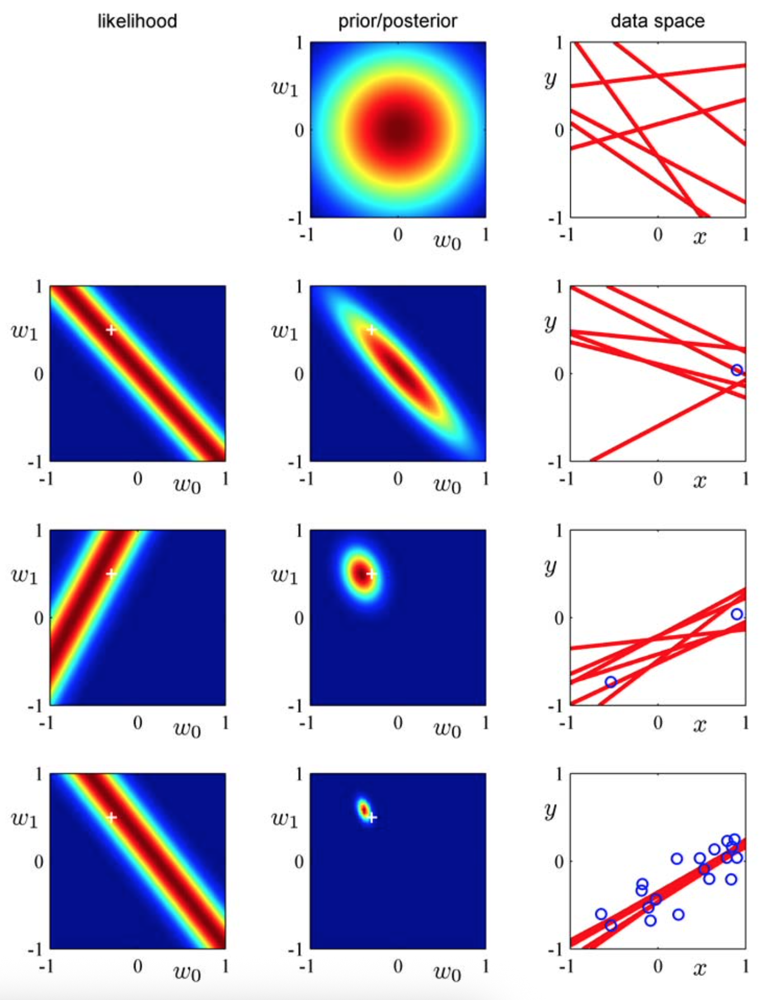
The first row of this figure corresponds to the situation before any data points are observed and shows a plot of the prior distribution in space together with six samples of the function in which the values of are drawn from the prior. In the second row, we see the situation after observing a single data point. The location of the data point is shown by a blue circle in the right-hand column. In the left-hand column is a plot of the likelihood function for this data point as a function of . Note that the likelihood function provides a soft constraint that the line must pass close to the data point, where close is determined by the noise precision . For comparison, the true parameter values and used to generate the dataset are shown by a white cross in the plots in the left column. When we multiply this likelihood function by the prior from the top row, and normalize, we obtain the posterior distribution shown in the middle plot on the second row. Samples of the regression function obtained by drawing samples of from this posterior distribution are shown in the right-hand plot. Note that these sample lines all pass close to the data point. The third row of this figure shows the effect of observing a second data point, again shown by a blue circle in the plot in the right-hand column. The corresponding likelihood function for this second data point alone is shown in the left plot. When we multiply this likelihood function by the posterior distribution from the second row, we obtain the posterior distribution shown in the middle plot of the third row. Note that this is exactly the same posterior distribution as would be obtained by combining the original prior with the likelihood function for the two data points. This posterior has now been influenced by two data points, and because two points are sufficient to define a line this already gives a relatively compact posterior distribution. Samples from this posterior distribution give rise to the functions shown in red in the third column, and we see that these functions pass close to both of the data points. The fourth row shows the effect of observing a total of 20 data points. The left-hand plot shows the likelihood function for the 20th data point alone, and the middle plot shows the resulting posterior distribution that has now absorbed information from all 20 observations. Note how the posterior is much sharper than in the third row. In the limit of an infinite number of data points, the posterior distribution would become a delta function centred on the true parameter values, shown by the white cross.
Predictive distribution
In practice, we are not usually interested in the value of w itself but rather in making predictions of for new values of . This requires that we evaluate the predictive distribution defined by
in which is the vector of target values from the training set, and we have omitted the corresponding input vectors. This equation involves the convolution of two Gaussian distributions, we see that the predictive distribution takes the form
where the variance of the predictive distribution is given by
The first term in the above equation represents the noise on the data whereas the second term reflects the uncertainty associated with the parameters . Because the noise process and the distribution of are independent Gaussians, their variances are additive. Note that, as additional data points are observed, the posterior distribution becomes narrower. As a consequence it can be shown that . In the limit , the second term goes to zero, and the variance of the predictive distribution arises solely from the additive noise governed by the parameter . As an illustration of the predictive distribution for Bayesian linear regression models, let us return to the synthetic sinusoidal dataset.
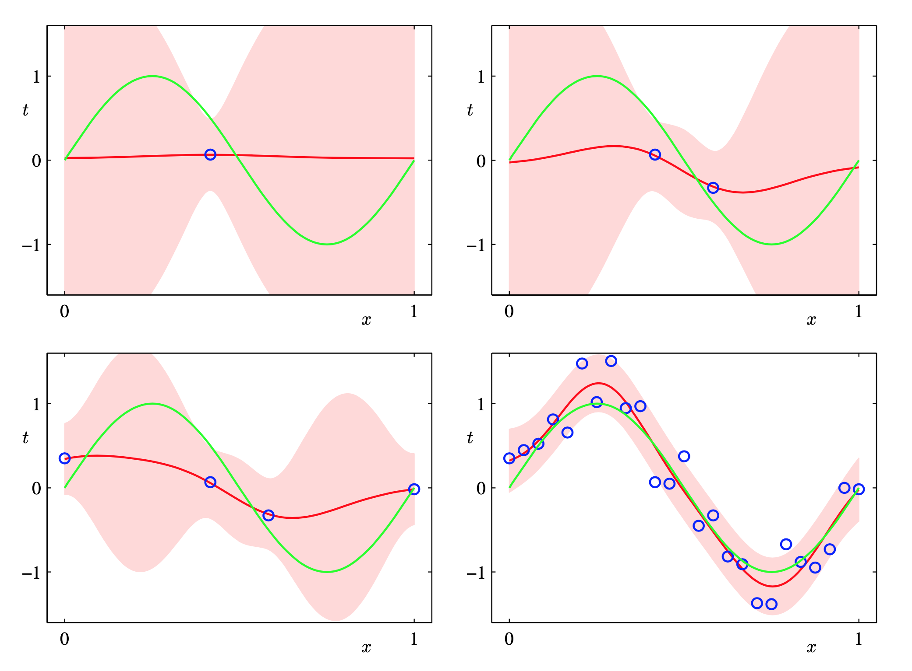
We fit a model comprising a linear combination of Gaussian basis functions to datasets of various sizes and then look at the corresponding posterior distributions. Here the green curves correspond to the function from which the data points were generated (with the addition of Gaussian noise). Datasets of size N = 1, N = 2, N = 4, and N = 25 are shown in the four plots by the blue circles. For each plot, the red curve shows the mean of the corresponding Gaussian predictive distribution, and the red shaded region spans one standard deviation either side of the mean. Note that the predictive uncertainty depends on x and is smallest in the neighbourhood of the data points. Also note that the level of uncertainty decreases as more data points are observed.
Linear Models for Classifications
The goal in classification is to take an input vector and to assign it to one of K discrete classes where . In the most common scenario, the classes are taken to be disjoint, so that each input is assigned to one and only one class. The input space is thereby divided into decision regions whose boundaries are called decision boundaries or decision surfaces. Here we consider linear models for classification, by which we mean that the decision surfaces are linear functions of the input vector and hence are defined by (D−1)-dimensional hyperplanes within the D-dimensional input space. Datasets whose classes can be separated exactly by linear decision surfaces are said to be linearly separable.
For regression problems, the target variable t was simply the vector of real numbers. In the case of classification, there are various ways of using target values to represent class labels. In the case of two-class problems, is the binary representation in which there is a single target variable such that represents class and represents class . Also we can interpret the value of as the probability that the class is , with the values of probability taking only the extreme values of 0 and 1. For K > 2 classes, it is convenient to use a one-hot vector in which is a vector of length K such that if the class is , then all elements of are zero except element , which takes the value 1. For instance, if we have K = 5 classes, then a pattern from class 2 would be given the target vector .
In general, there are two approaches to classification:
- Discriminative: directly learn to predict as a function of .
- Sometimes this means modeling (e.g. logistic regression).
- Sometimes this means learning a decision rule without a probabilistic interpretation (e.g. KNN, SVM).
- Generative: model the data distribution for each class separately, and make predictions using posterior inference.
- Fit models of and .
- Infer the posterior using Bayes’ Rule.
Discriminant Functions
The simplest representation of a linear discriminant function is obtained by taking a linear function of the input vector so that where is called a weight vector, and is a bias (not in the statistical sense). The negative of the bias is sometimes called a threshold. An input vector is assigned to class if and to class otherwise. The corresponding decision boundary is therefore defined by the relation . It is more convenient to expres it as when and .
Multiclass Classification
Some algorithms (such as Random Forest classifiers or naive Bayes classifiers) are capable of handling multiple classes directly. Others (such as Support Vector Machine classifiers or Linear classifiers in general) are strictly binary classifiers. However, there are various strategies that you can use to perform multiclass classification using multiple binary classifiers. After training K binary classifiers for K classes, then when you want to classify a test example, you get the decision score from each classifier for that example and you select the class whose classifier outputs the highest score. This is called the one-versus-all (OvA) strategy (also called one-versus-the-rest). Another strategy is to train a binary classifier for every pair of classes, K(K-1)/2 classifiers. This is called the one-versus-one (OvO) strategy. Some algorithms (such as Support Vector Machine classifiers) scale poorly with the size of the training set, so for these algorithms OvO is preferred since it is faster to train many classifiers on small training sets than training few classifiers on large training sets. For most binary classification algorithms, however, OvA is preferred.
Now consider the extension of linear discriminants to K > 2 classes. We might be tempted be to build a K-class discriminant by combining a number of two-class discriminant functions. However, this leads to some serious difficulties. Consider K(K− 1)/2 binary discriminant functions, one for every possible pair of classes (OVO). Each point is then classified according to a majority vote amongst the discriminant functions. However, this too runs into the problem of ambiguous regions, as illustrated in the right-hand follwing diagram.
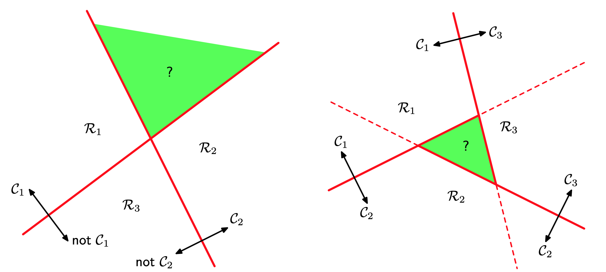
Alternaively, consider the use of K−1 classifiers each of which solves a two-class problem of separating points in a particular class from points not in that class (one-versus-the-rest). We can avoid these difficulties by considering a single K-class discriminant comprising K linear functions of the form
and then assigning a point to class if for all . The decision boundary between class and class is therefore given by and hence corresponds to a (D− 1)-dimensional hyperplane defined by
which has the same form as the decision boundary for the two-class. For two lines as the discriminants, the angle bisector of them becomes the decision boundry. The decision regions of such a discriminant are always simply connected and convex. To see this, consider two points and both of which lie inside decision region . Any point that lies on the line connecting and can be expressed in the form . So . So for all .
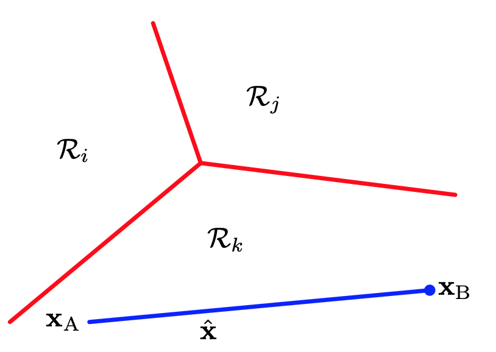
Scikit-Learn detects when you try to use a binary classification algorithm for a multiclass classification task, and it automatically runs OvA (except for SVM classifiers for which it uses OvO). If you want to force ScikitLearn to use one-versus-one or one-versus-all, you can use the OneVsOneClassifier or OneVsRestClassifier classes.
Multilabel classification is a classification system that outputs multiple binary tags. one approach evaluate multilabel classifiers is to measure the score for each individual label (or any other binary classifier metric discussed earlier), then simply compute the average score. This code computes the average score across all labels.
f1_score(y_multilabel, y_train_knn_pred, average="macro")
This assumes that all labels are equally important, which may not be the case. One simple option is to give each label a weight equal to its support (i.e., the number of instances with that target label). To do this, simply set average="weighted" in the preceding code.
Performance Measures for Classification
Evaluating a classifier is often significantly trickier than evaluating a regressor.
-
Accuracy: is generally not the preferred performance measure for classifiers, especially when you are dealing with imbalanced dataset.
-
Confusion Matrix: count the number of times instances of class A are classified as class B. Each row in a confusion matrix represents an actual class, while each column represents a predicted class. The confusion matrix for a perfect classifier would have nonzero values only on its main diagonal! Confusion matrix is descriptive and does not provide a metric by its own. Analyzing the confusion matrix can often give you insights on ways to improve your classifier by analyzing the types of errors your model makes.
conf_mx = confusion_matrix(y_train, y_train_pred) -
Precision: . A trivial way to have 100% precision is to make one single positive prediction and ensure it is correct. So precision is typically used along with another metric:
-
Recall: sensitivity or true positive rate, . A trivial way to have 100% recall is to predict everything positive.
-
score: The score is the harmonic mean of precision and recall. Whereas the regular mean, treats all values equally, the harmonic mean gives much more weight to low values. The F1 score favors classifiers that have similar high precision and recall which is not always what you want: in some contexts you mostly care about precision, and in other contexts you really care about recall. For example: cancer detection classifier (high recall - we do not want to have any FN while we do not mind some FP) or detecting safe videos for kids (high precision - we do not want FP while we do not mind FN).
Unfortunately, you can’t have it both ways: increasing precision reduces recall, and vice versa. This is called the precision/recall tradeoff. Classifiers makes decisions based on a score computed by a decision function, and if that score is greater than a threshold, it assigns the instance to the positive class, or else it assigns it to the negative class. Lowering the threshold increases true positive rates (Recall) and increasing the threshold, increases the precision (reducing FP).
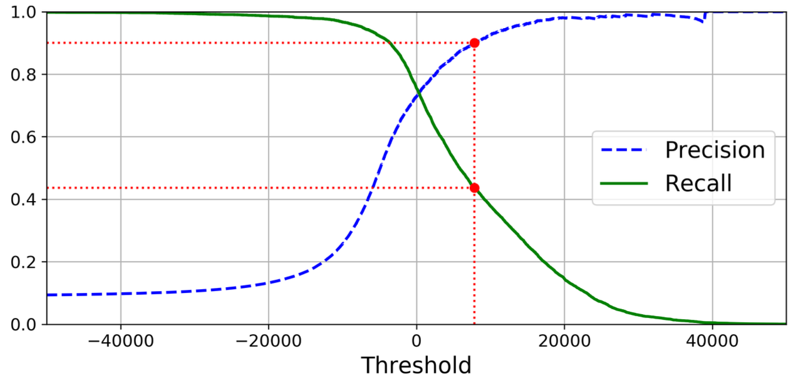
-
PR Curve: Another way to select a good precision/recall tradeoff is to plot precision directly against recall.
-
The ROC Curve: It is very similar to the precision/recall curve, but instead of plotting precision versus recall, the ROC curve plots the true positive rate (recall) against the false positive rate.
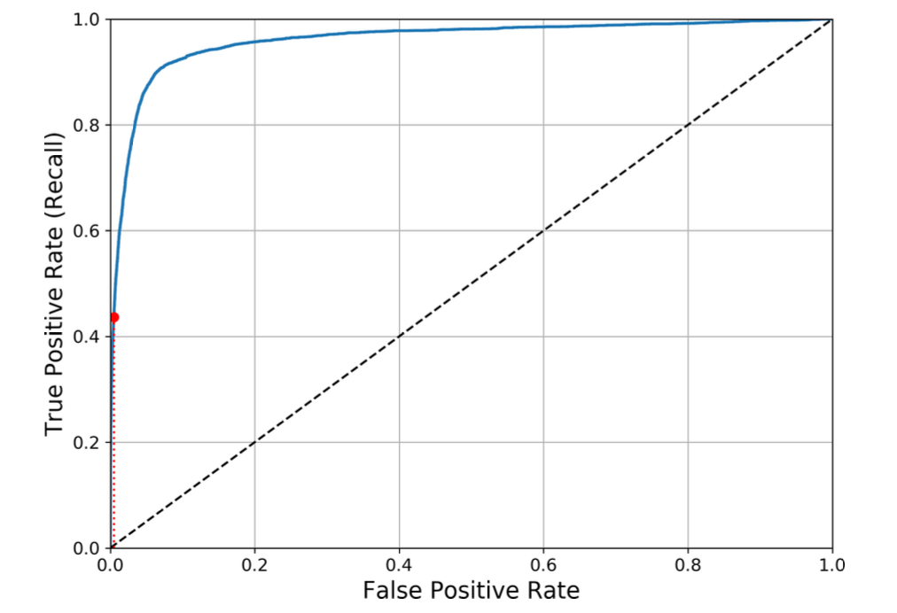
The dotted line represents the ROC curve of a purely random classifier; a good classifier stays as far away from that line as possible (toward the top-left corner). One way to compare classifiers is to measure the area under the curve (AUC). A perfect classifier will have a ROC AUC equal to 1, whereas a purely random classifier will have a ROC AUC equal to 0.5. As a rule of thumb, you should prefer the PR curve whenever the positive class is rare or when you care more about the false positives than the false negatives, and the ROC curve otherwise.
Least Squares for Classification
Consider a general classification problem with K classes, with a one-hot vector for the target vector . One justification for using least squares in such a context is that it approximates the conditional expectation of the target values given the input vector. Each class is described by its own linear model so that
where . We can conveniently group these together using vector notation so that
where is a matrix whose -th column comprises the D + 1-dimensional vector and is the corresponding augmented input vector with a dummy input . We now determine the parameter matrix by minimizing a sum-of-squares error function, as we did for regression. Consider a training dataset where , and define a matrix whose -th row is the vector together with a matrix X whose th row. The sum-of-squares error function can then be written as
Setting the derivative with respect to to zero, and rearranging, we then obtain the solution for in the form
We then obtain the discriminant function in the form
An interesting property of least-squares solutions with multiple target variables is that if every target vector in the training set satisfies some linear constraint , for some constants and , then the model prediction for any value of will satisfy the same constraint so that . Thus if we use one-hot vector for K classes, then the predictions made by the model will have the property that the elements of will sum to 1 for any value of .
The least-squares approach gives an exact closed-form solution for the discriminant function parameters. However, even as a discriminant function (where we use it to make decisions directly and dispense with any probabilistic interpretation) it suffers from some severe problems. We have already seen that least-squares solutions lack robustness to outliers, and this applies equally to the classification application. Here we see that the additional data points in the right-hand figure produce a significant change in the location of the decision boundary, even though these points would be correctly classified by the original decision boundary. The sum-of-squares error function penalizes predictions that are ‘too correct’ in that they lie a long way on the correct side of the decision.
However, problems with least squares can be more severe than simply lack of robustness. This shows a synthetic dataset drawn from three classes in a two-dimensional input space (x1, x2), having the property that linear decision boundaries can give excellent separation between the classes. The follwoing figure hsows the decision boundary found by least squares (magenta curve) and also by the logistic regression model (green curve). Indeed, the technique of logistic regression, described later, gives a satisfactory solution as seen in the right-hand plot. However, the least-squares solution gives poor results when extra data points are added at the bottom left of the diagram, showing that least squares is highly sensitive to outliers, unlike logistic regression.
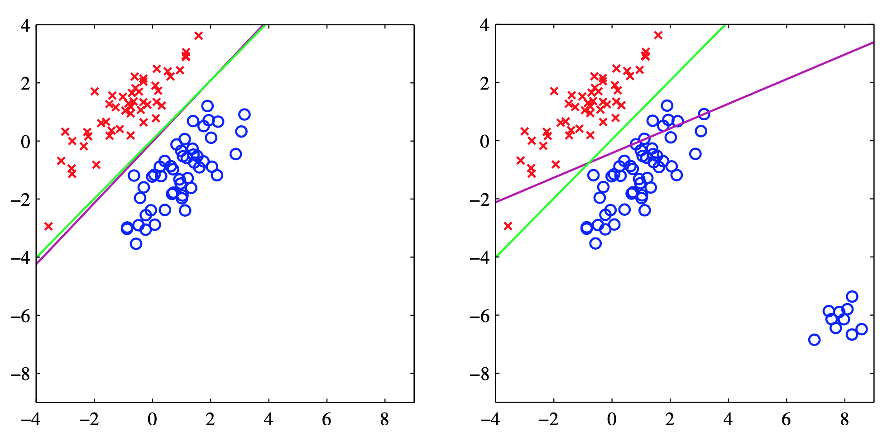
The failure of least squares should not surprise us when we recall that it corresponds to maximum likelihood under the assumption of a Gaussian conditional distribution, whereas binary target vectors clearly have a distribution that is far from Gaussian. By adopting more appropriate probabilistic models, we shall obtain classification techniques with much better properties than least squares. From historical point of view, there is another linear discriminant model called perceptron algorithm. See p.192 in parttern recognision .. book for more inof about it.
Probabilistic Generative Models
Here we shall adopt a generative approach in which we model the class-conditional densities , as well as the class priors , and then use these to compute posterior probabilities through Bayes’ theorem. Consider first of all the case of two classes. The posterior probability for class can be written as
where is the logistic sigmoid function and
represents the log of the ratio of probabilities for the two classes, also known as the log odds. We shall shortly consider situations in which is a linear function of , in which case the posterior probability is governed by a generalized linear model. For the case of K > 2 classes, we have
which is known as the normalized exponential and can be regarded as a multiclass generalization of the logistic sigmoid. Here the quantities are defined by . The normalized exponential is also known as the softmax function, as it represents a smoothed version of the ‘max’ function because, if for all , then , and . We now investigate the consequences of choosing specific forms for the class-conditional densities, looking first at continuous input variables and then discussing briefly the case of discrete inputs.
Continuous inputs
Let us assume that the class-conditional densities are Gaussian and then explore the resulting form for the posterior probabilities. To start with, we shall assume that all classes share the same covariance matrix. Thus the density for class is given by
Consider first the case of two classes:
or equivalently,
Due to the assumption of common covariance matrices, simplifying this last equation implies:
This result is illustrated for the case of a two-dimensional input space x in the following figure. The left-hand plot shows the class-conditional densities for two classes, denoted red and blue. On the right is the corresponding posterior probability , which is given by a logistic sigmoid of a linear function of . The surface in the right-hand plot is coloured using a proportion of red ink given by and a proportion of blue ink given by .
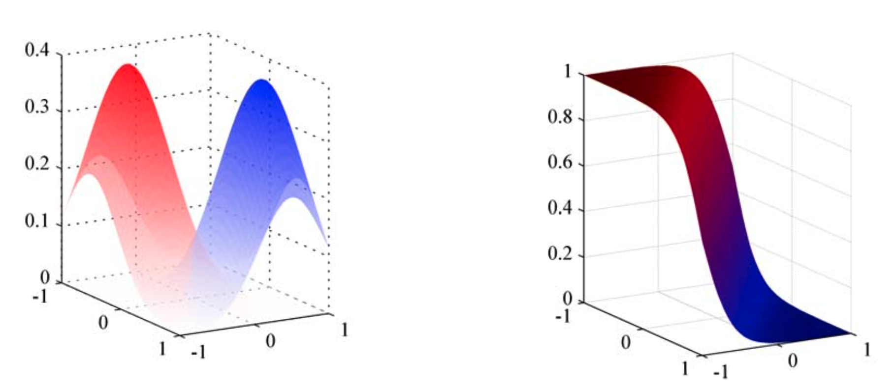
The decision boundaries correspond to surfaces along which the posterior probabilities are constant and so will be given by linear functions of x, and therefore the decision boundaries are linear in input space. The prior probabilities enter only through the bias parameter so that changes in the priors have the effect of making parallel shifts of the decision boundary and more generally of the parallel contours of constant posterior probability. For the general case of K classes we have:
where:
The resulting decision boundaries, corresponding to the minimum misclassification rate, will occur when two of the posterior probabilities (the two largest) are equal, and so will be defined by linear functions of , and so again we have a generalized linear model called linear discriminant (LDA). The K centroids in p-dimensional input space lie in an affine subspace of dimension ≤ K−1, and if n is much larger than K, this will be a considerable drop in dimension. Moreover, in locating the closest centroid, we can ignore distances orthogonal to this subspace, since they will contribute equally to each class. Thus we might just as well project the onto this centroid-spanning subspace , and make distance comparisons there. Thus there is a fundamental dimension reduction in LDA, namely, that we need only consider the data in a subspace of dimension at most . If K = 3, for instance, this could allow us to view the data in a two-dimensional plot, color-coding the classes.
If we relax the assumption of a shared covariance matrix and allow each class-conditional density to have its own covariance matrix , then the earlier cancellations will no longer occur, and we will obtain quadratic functions of , giving rise to a quadratic discriminant.
If we make the futher assumption of independence of features conditioned on classes, we get Naive Bayes:
The probabilities could be modeled as
-
Guassians (diagonal covariance matrix) for continous features:
-
Bernouli for binary features (e.g., word present/not):
-
Multinomial for count features (e.g., word frequencies in text classification)
Maximum likelighod estimation of Naive Bayes parameters can be easily computed from empirical data:
From training data, estimate:
- class prior which tisthe frequency of class k
- conditional feature likelihood
If a feature never appears in training for a class: use Laplace smoothing. We predict the category by performing inference in the model using Bayes’ Rule:
We need not compute the denominator if we’re simply trying to determine the mostly likely class. Naive Bayes Works surprisingly well but can perform poorly when features are correlated. It scales to very high-dimensional data and decision boundaries are linear in log-space. It is used Text classification (spam detection, sentiment) or as a quick baseline model for many tasks.
Maximum likelihood solution
Once we have specified a parametric functional form for the class-conditional densities , we can then determine the values of the parameters, together with the prior class probabilities , using maximum likelihood. This requires a dataset comprising observations of along with their corresponding class labels.
Consider first the case of two classes, each having a Gaussian class-conditional density with a shared covariance matrix, and suppose we have a dataset where . Here denotes class and denotes class . We denote the prior class probability , so that . For example, for a data point from class , we have:
Thus the likelihood function is given by:
where . Setting the derivative with respect to equal to zero and rearranging, we obtain:
Thus the maximum likelihood estimate for is simply the fraction of points in class as expected. This result is easily generalized to the multiclass case where again the maximum likelihood estimate of the prior probability associated. Setting the derivative with respect to to zero and rearranging, we obtain
which is simply the mean of all the input vectors xn assigned to class . It is similar for . The maximum likelihood solution for the shared covariance matrix is
which represents a weighted average of the covariance matrices associated with each of the two classes separately. This result is easily extended to the K class problem to obtain the corresponding maximum likelihood solutions for the parameters in which each class-conditional density is Gaussian with a shared covariance matrix. Note that the approach of fitting Gaussian distributions to the classes is not robust to outliers, because the maximum likelihood estimation of a Gaussian is not robust.
Regularized Discriminant Analysis
Friedman (1989) proposed a compromise between LDA and QDA, which allows one to shrink the separate covariances of QDA toward a common covariance as in LDA. These methods are very similar in flavor to ridge regression. The regularized covariance matrices have the form
where is the pooled covariance matrix as used in LDA. Here allows a continuum of models between LDA and QDA, and needs to be specified. In practice can be chosen based on the performance of the model on validation data, or by cross-validation.
Discrete features
Let us now consider the case of discrete feature values . For simplicity, we begin by looking at binary feature values and discuss the extension to more general discrete features shortly. If there are D inputs, then a general distribution would correspond to a table of numbers for each class, containing independent variables (due to the summation constraint). Because this grows exponentially with the number of features, we might seek a more restricted representation. Here we will make the naive Bayes assumption in which the feature values are treated as independent, conditioned on the class . Thus we have class-conditional distributions of the form
which contain D independent parameters for each class. This implies that:
which again are linear functions of the input values . Analogous results are obtained for discrete variables each of which can take M > 2 states. For both Gaussian distributed and discrete inputs, the posterior class probabilities are given by generalized linear models with logistic sigmoid (K=2 classes) or softmax (K 2 classes) activation functions. These are particular cases of a more general result obtained by assuming that the class-conditional densities are members of the exponential family of distributions. Many techniques are based on models for the class densities:
- linear and quadratic discriminant analysis use Gaussian densities;
- more flexible mixtures of Gaussians allow for nonlinear decision boundaries
- general nonparametric density estimates for each class density allow the most flexibility
- Naive Bayes models are a variant of the previous case, and assume that each of the class densities are products of marginal densities; that is, they assume that the inputs are conditionally independent in each class
Probabilistic Discriminative Models
For the two-class classification problem, we have seen that the posterior probability of class can be written as a logistic sigmoid acting on a linear function of , for a wide choice of class-conditional distributions . Similarly, for the multiclass case, the posterior probability of class is given by a softmax transformation of a linear function of . For specific choices of the class-conditional densities , we have used maximum likelihood to determine the parameters of the densities as well as the class priors and then used Bayes’ theorem to find the posterior class probabilities.
However, an alternative approach is to use the functional form of the generalized linear model explicitly and to determine its parameters directly by using maximum likelihood. The indirect approach to finding the parameters of a generalized linear model, by fitting class-conditional densities and class priors separately and then applying Bayes’ theorem, represents an example of generative modeling, because we could take such a model and generate synthetic data by drawing values of from the marginal distribution . In the direct approach, we are maximizing a likelihood function defined through the conditional distribution , which represents a form of discriminative training. One advantage of the discriminative approach is that there will typically be fewer adaptive parameters to be determined.
Logistic regression
The posterior probability of class can be written as a logistic sigmoid acting on a linear function of the feature vector φ so that
For an M-dimensional feature space , this model has M adjustable parameters. By contrast, if we had fitted Gaussian class conditional densities using maximum likelihood, we would have used 2M parameters for the means and M(M + 1)/2 parameters for the (shared) covariance matrix. For a dataset , where and with , the likelihood function can be written:
where and . As usual, we can define an error function by taking the negative logarithm of the likelihood, which gives the cross-entropy error function in the form
Taking the gradient of the error function with respect to , we obtain
It is worth noting that maximum likelihood can exhibit severe overfitting for datasets that are linearly separable. This arises because the maximum likelihood solution occurs when the hyperplane corresponding to σ = 0.5, equivalent to , separates the two classes and the magnitude of goes to infinity.
Summary
| Question | Naive Bayes | Logistic Regression |
|---|---|---|
| Probabilistic? | ✅ Yes | ✅ Yes |
| Linear? | ✅ Yes (in log-space) | ✅ Yes |
| Learns from data? | Estimates from counts | Learns optimal weights |
| Assumes independence? | ❗Yes | ❌ No |
| Fast to train? | ✅ Extremely | ❌ Slower |
- Naive Bayes for speed, text, or high-dimensional sparse features
- Logistic Regression for interpretability, correlated features, and regularization
Combining Models
Model combination is to select one of the models to make the prediction depending on the input variables. Thus different models become responsible for making predictions in different regions of input space. One widely used framework of this kind is known as a decision tree in which the selection process can be described as a sequence of binary selections corresponding to the traversal of a tree structure. In this case, the individual models are generally chosen to be very simple, and the overall flexibility of the model arises from the input-dependent selection process. Decision trees can be applied to both classification and regression problems.
One limitation of decision trees is that the division of input space is based on hard splits in which only one model is responsible for making predictions for any given value of the input variables. The decision process can be softened by moving to a probabilistic framework for combining models like Gaussian Mixture Models. Such models can be viewed as mixture distributions in which the component densities, as well as the mixing coefficients, are conditioned on the input variables and are known as mixtures of experts.
Tree-Based Methods
Tree-based methods partition the feature space into a set of rectangles whose edges are aligned with the axes, and then assigning a simple model (for example, a constant) to each region. This process repeats recursively until the desired performance is reached.
A well-known tree algorithm is the Decision Tree. Decision Trees make very few assumptions about the training data (as opposed to linear models, which obviously assume that the data is linear, for example). They can be viewed as a model combination method in which only one model is responsible for making predictions at any given point in input space. The process of selecting a specific model, given a new input , can be described by a sequential decision making process corresponding to the traversal of a binary tree (one that splits into two branches at each node). At internal nodes, spliting variable and its threshold is calculated, branching is determined by threshold value and leaf nodes are outputs (predictions). Each path from root to a leaf defines a region of input space. The following figure illustration of a recursive binary partitioning of the input space, along with the corresponding tree structure.
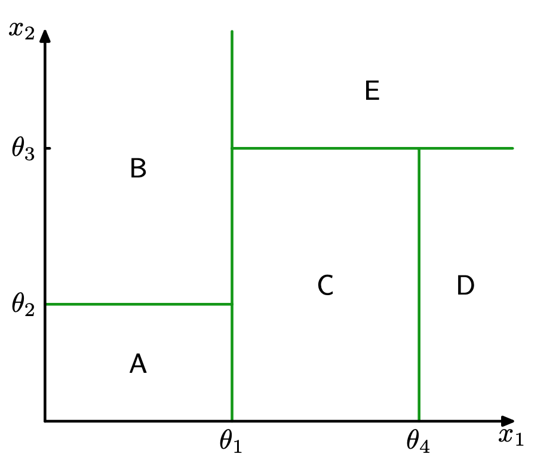
The first step divides the whole of the input space into two regions according to whether or where is a parameter of the model. This creates two subregions, each of which can then be subdivided independently. For instance, the region is further subdivided according to whether or , giving rise to the regions denoted and . The recursive subdivision can be described by the traversal of the binary tree shown below:
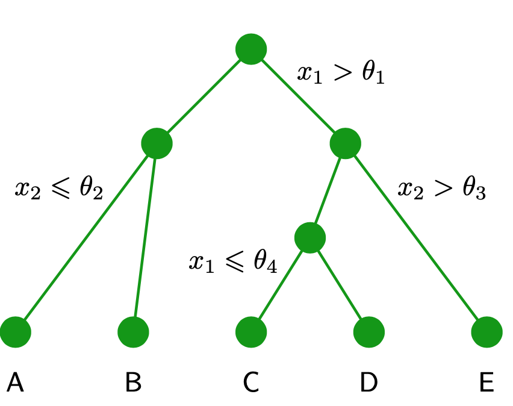
For any new input , we determine which region it falls into by starting at the top of the tree at the root node and following a path down to a specific leaf node according to the decision criteria at each node.
If left unconstrained, the tree structure will adapt itself to the training data, fitting it very closely, and most likely overfitting it. Such a model is often called a nonparametric model, not because it does not have any parameters (it often has a lot) but because the number of parameters is not determined prior to training, so the model structure is free to stick closely to the data. To avoid overfitting the training data, you need to restrict the Decision Tree’s freedom during training. As you know by now, this is called regularization. Reducing max_depth will regularize the model and thus reduce the risk of overfitting. Other parameters include min_samples_split (the minimum number of samples a node must have before it can be split), min_samples_leaf (the minimum number of samples a leaf node must have), min_weight_fraction_leaf (same as min_samples_leaf but expressed as a fraction of the total number of weighted instances), max_leaf_nodes (maximum number of leaf nodes), and max_features (maximum number of features that are evaluated for splitting at each node). Increasing min_* hyperparameters or reducing max_* hyperparameters will regularize the model.
Decision tree follows a greedy algorithm: it greedily searches for an optimum split at the top level, then repeats the process at each level. It does not check whether or not the split will lead to the lowest possible impurity several levels down. A greedy algorithm often produces a reasonably good solution, but it is not guaranteed to be the global optimal solution. Unfortunately, finding the optimal tree is known to be an NP-Complete problem: it requires time, making the problem intractable even for fairly small training sets. This is why we must settle for a “reasonably good” solution.
Note: P is the set of problems that can be solved in polynomial time. NP is the set of problems whose solutions can be verified in polynomial time. An NP-Hard problem is a problem to which any NP problem can be reduced in polynomial time. An NP-Complete problem is both NP and NP-Hard. A major open mathematical question is whether or not P = NP. If P ≠ NP (which seems likely), then no polynomial algorithm will ever be found for any NP-Complete problem (except perhaps on a quantum computer).
A Decision Tree can also estimate the probability that an instance belongs to a particular class k: first it traverses the tree to find the leaf node for this instance, and then it returns the ratio of training instances of class k in this node. Note that decision trees are not probabilistic graphical models.
Regression Trees
Suppose our data consists of p inputs and a response, for each of observations: that is, for , with . The algorithm needs to automatically decide on the splitting variables and split points, and also what topology (shape) the tree should have. Learning the simplest (smallest) decision tree is an NP complete problem. We proceed with a greedy algorithm. Starting with all of the data, consider a splitting variable and split point , and define the pair of half-planes and . Then we seek the splitting variable and split point that solve
if we adopt the sum of squares as a measure for distance. For any choice and , the inner minimization is solved by
For each splitting variable, the determination of the split point s can be done very quickly and hence by scanning through all of the inputs, determination of the best pair (j,s) is feasible. Having found the best split, we partition the data into the two resulting regions and repeat the splitting process on each of the two regions. Then this process is repeated on all of the resulting regions. If we have a partition into regions , and we model the response as a constant in each region: .
Classification Trees
If the target is a classification outcome taking values 1,2,...,K, the only changes needed in the tree algorithm pertain to the criteria for splitting nodes and pruning the tree. For regression we used the squared-error node but this is not suitable for classification. In a node , representing a region with observations, let
The proportion of observation in class in node . Then we classify the observations in node to class
the majority class in node . Different measures of node impurity include the following:
All three are similar, but cross-entropy and the Gini index are differentiable, and hence more amenable to numerical optimization.
Advantages of decision trees over KNN
- Good when there are lots of attributes, but only a few are important
- Good with categorical variables
- Easily deals with missing values (just treat as another value)
- Robust to scale of inputs
- Fast at test time
- More interpretable
Advantages of KNN over decision trees
- Few hyperparameters
- Able to handle attributes/features that interact in complex ways (e.g. pixels)
- Can incorporate interesting distance measures (e.g. shape contexts)
- Typically make better predictions in practice
One major problem with trees is their high variance. Often a small change in the data can result in a very different series of splits, making interpretation somewhat precarious. The major reason for this instability is the hierarchical nature of the process: the effect of an error in the top split is propagated down to all of the splits below it. Bagging averages many trees to reduce this variance. As we’ll see next lecture, ensembles of decision trees are much stronger. But they lose some of the advantages listed above.
Ensemble
An ensemble of predictors is a set of predictors whose individual decisions are combined in some way to classify new examples. For this to be nontrivial, the classifiers must differ somehow, e.g.
- Different algorithm
- Different choice of hyperparameters
- Trained on different data
- Trained with different weighting of the training examples
In fact, ensemble methods work best when the predictors are as _independent _ from one another as possible. One way to get diverse classifiers is to train them using very different algorithms. This increases the chance that they will make very different types of errors, improving the ensemble’s accuracy.
Bagging
The simplest way to construct a ensemble is to average the predictions of a set of individual independent models. A common approach is to use the same training algorithm for every predictor, but to train them on different random subsets of the training set. Given we have only a single dataset, this allows us to introduce variability between the different models within the committee. One approach is to use bootstrap datasets. Consider a regression problem in which we are trying to predict the value of a single continuous variable, and suppose we generate bootstrap datasets and then use each to train a separate copy of a predictive model where . The committee prediction is given by
This procedure is known as bootstrap aggregation or bagging. Suppose the true regression function that we are trying to predict is given by , so that the output of each of the models can be written as the true value plus an error in the form so that . How does this affect the three terms of the expected loss in the bias-variance equation?
- Bayes error: unchanged because we have no control over it
- Bias: unchanged, since the averaged prediction has the same expectation
- Variance: reduced, assuming errors are independent (independent samples and independent predictions):
This apparently dramatic result suggests that the average error of a model can be reduced by a factor of M simply by averaging M versions of the model. Unfortunately, it depends on the key assumption that the errors due to the individual models are uncorrelated. In practice, the errors are typically highly correlated, and the reduction in overall error is generally small. It can, however, be shown that the expected committee error will not exceed the expected error of the constituent models, so that . Ironically, it can be advantageous to introduce additional variability into your algorithm, as long as it reduces the correlation between sampled predictions. It can help to use average over multiple algorithms, or multiple configurations of the same algorithm. That is why random forests exists.
Random Forest
If all classifiers are able to estimate class probabilities (i.e., they have a pre dict_proba() method in Scikit-Learn) then you can predict the class with the highest class probability, averaged over all the individual classifiers. This is called soft voting. It often achieves higher performance than *hard voting *because it gives more weight to highly confident votes. Once all predictors are trained, the ensemble can make a prediction for a new instance by simply aggregating the predictions of all predictors. The aggregation function is typically the statistical mode (i.e., the most frequent prediction, just like a hard voting classifier) for classification, or the average for regression.
The Random Forest algorithm introduces extra randomness when growing trees; instead of searching for the very best feature when splitting a node, it searches for the best feature among a random subset of features. This results in a greater tree diversity, which (once again) trades a higher bias for a lower variance, generally yielding an overall better model. In other words, RF is a bagging algorithm of decision trees, with one extra trick to decorrelate the predictions: when choosing each node of the decision tree, choose a random subset of d input features, and only consider splits on those features. Random forests often work well with no tuning whatsoever. In short,
- bagging reduces overfitting by averaging predictions
- does not reduce bias
- random forest add more randomness to remove correlation between classifiers
Feature Importance
Yet another great quality of Random Forests is that they make it easy to measure the relative importance of each feature. Scikit-Learn measures a feature’s importance by looking at how much the tree nodes that use that feature reduce impurity on average (across all trees in the forest). More precisely, it is a weighted average, where each node’s weight is equal to the number of training samples that are associated with it. Random Forests are very handy to get a quick understanding of what features actually matter, in particular if you need to perform feature selection.
Boosting
Boosting (originally called hypothesis boosting) refers to any Ensemble method that can combine several weak learners into a strong learner. The general idea of most boosting methods is to train predictors sequentially, each trying to correct its predecessor. AdaBoost (short for Adaptive Boosting) and Gradient Boosting are popular ones. Boosting can achieve low bias but sensitive to overfitting without regularization. AdaBoost, short for ‘adaptive boosting’, developed by Freund and Schapire (1996) is a common boosting algorithm. Boosting can give good results even if the base models have a performance that is only slightly better than random, and hence sometimes the base models are known as weak learners. Weak learner is a learning algorithm that outputs a hypothesis (e.g., a classifier) that performs slightly better than chance, e.g., it predicts the correct label with probability 0.6. We are interested in weak learners that are computationally efficient.
- Decision trees
- Even simpler: Decision Stump: A decision tree with only a single split (i.e. a single node)
Given a vector of predictor variables , a classifier produces a prediction taking one of the two values . The error rate on the training sample is . The purpose of boosting is to sequentially apply the weak classification algorithm to repeatedly modified versions of the data, thereby producing a sequence of weak classifiers , . The data modifications at each boosting step consist of applying weights to each of the training observations , . Initially all of the weights are set to , so that the first step simply trains the classifier on the data in the usual manner. For each successive iteration the observation weights are individually modified and the classification algorithm is reapplied to the weighted observations:
At step , those observations that were misclassified by the previous classifier have their weights increased, whereas the weights are decreased for those that were classified correctly. Thus as iterations proceed, observations that are difficult to classify correctly receive ever-increasing influence. Each weak learner is thereby forced to concentrate on those training observations that are missed by previous ones in the sequence to reduce the weighted error because misclassifying a high-weight example hurts more than misclassifying a low-weight one. In AdaBoost, input weights tell the new learner which samples to focus on — they affect the loss function during training. The learner is trained to do well on the weighted data distribution, not uniformly across the dataset. Make predictions using the final model, which is given by
Key steps of AdaBoost:
- At each iteration we re-weight the training samples by assigning larger weights to samples (i.e., data points) that were classified incorrectly
- We train a new weak classifier based on the re-weighted samples
- We add this weak classifier to the ensemble of classifiers. This is our new classifier.
- We repeat the process many times.
AdaBoost reduces bias by making each classifier focus on previous mistakes. Friedman et al. (2000) gave a different and very simple interpretation of boosting in terms of the sequential minimization of an exponential error function. See p659.
Gradient Boosting Trees (XGBoost)
Gradient Boosting works by sequentially adding predictors to an ensemble, each one correcting its predecessor. However, instead of tweaking the instance weights at every iteration like AdaBoost does, this method tries to fit the new predictor to the residual errors made by the previous predictor. Boosting trees also have extra parameters to induce more variability in predictors. Parameters like subsample hyperparameter, which specifies the fraction of training instances to be used for training each tree. For example, if subsample=0.25, then each tree is trained on 25% of the training instances, selected randomly. As you can probably guess by now, this trades a higher bias for a lower variance. An optimized implementation of Gradient Boosting is available in the popular python library XGBoost, which stands for Extreme Gradient Boosting. XGBoost aims at being extremely fast, scalable and portable.
XGBoost is a boosting algorithm where each training step will add one entirly new tree from scratch, so that at step the ensemble contains trees. Mathematically, we can write our model in the form
where functions each containing the structure of the tree and the leaf scores. It is intractable to learn all the trees at once. Instead, an additive strategy is used: fix what has been learned, and add one new tree at a time. Which tree do we want at each step? Add the one that optimizes our objective!
where
The third line is Taylor expansion of the loss function up to the second order used by XGBoost. After removing constants, the objective approximately becomes: which should be minimized for the new tree. One important advantage of this definition is that the value of the objective function only depends on and . This is how XGBoost supports custom loss functions. We can optimize every loss function, including logistic regression and pairwise ranking, using exactly the same solver that takes and as input! The value is the score of the leaf where input belongs to in the tree . Let be the vector of scores on the leaves of tree where is the number of leaves. In XGBoost, we define:
Which is the regularization part of the objective define before. Now the objective is rewritten as
where is the score of the leaf falls into. Because in the same leaf get the same score , we can rearrage this sum as
where and . Since this objective is quadratic with respect to , we can find the optimal leaf score that minimizes the objective:
So the minimum value of the objective with respect to leaf scores is
So if we have the tree structure, then we have and from which we get the optimal leaf scores for that tree structure. Having this, we can only compare two trees and say whcih one is more optimal, i.e. gives smaller objective value. What is the best tree? ideally we would enumerate all possible trees and pick the best one. In practice this is intractable, so we will go greedy and try to optimize one level of the tree at a time at every split. According to equation , the difference in the objective because of a split at a node is:
If this is positive, the new objective is smaller. However the hyperparameter is the minimum required gain to make a split. In XGBoost, feature importance is calculated base on the total gain obtained by all splits using the feature. These gains are summed (or averaged) per feature over all trees and reported as feature importance. The best feature contributes most to reducing the error. It is better to use SHAP Values as a more modern and precise way to evaluate feature impartanct. It calculates feature attribution per prediction and can give:
- Global feature importance
- Local explanations (per prediction)
- Handles feature interaction and correlation better
SHAP is slower, but more accurate and interpretable, especially for regulated or sensitive domains. On the other hand, increasing hyperparameter would decrease the leaf scores at every split which in turn, makes splitting a more conservative because less gain would then be obatined from a split. So in XGBoost, splits are not made by impurity or variance like in standard decision trees. Instead, they’re made by directly minimizing the second-order Taylor approximation of the loss.
As it was clear from the above , the new tree tries to decrease the residual of the previous model . In other words, it reduces the current model's error. The learning rate controls how much f_t contributes to this reduction. So the new tree is added with shrinkage to the model to imporve it. This how gradient boosting learns sequentially — always training the next model to fix the mistakes of the combined model so far.
Gradient boosting is a low-bias, high-variance model:
| 🔧 Tuning | Effect |
|---|---|
| Shallow trees | Increases bias, reduces variance |
| Many deep trees | Lowers bias but risks overfitting (↑variance) |
| Small learning rate | More trees needed; better generalization |
| Regularization | Helps reduce variance (e.g. L1/L2 in XGBoost) |
Hyperparameter Tuning in XGBoost
| Hyperparameter | Purpose |
|---|---|
max_depth |
Controls complexity of each tree (↓ depth = ↑ bias) |
learning_rate (η) |
Shrinks update per tree (smaller = better generalization, needs more trees) |
n_estimators |
Total trees to train |
subsample |
Fraction of data used per tree (↓ = regularization) |
colsample_bytree |
Fraction of features used per tree (↓ = less overfitting) |
lambda, alpha |
L2 and L1 regularization on weights |
min_child_weight |
Minimum sum of instance weights (hessian) in a child — prevents small, noisy splits |
Reference: Introduction to Boosted Trees
Stacking
Stacking is based on a simple idea: instead of using trivial functions such as hard voting to aggregate the predictions of all predictors in an ensemble, why don’t we train a model to perform this aggregation? To train the blender, a common approach is to use a hold-out set. First, the training set is split in two subsets. The first subset is used to train the predictors in the first layer, say 3 predictors. To train the blender, a common approach is to use a hold-out set. First, the training set is split in two subsets. The first subset is used to train the predictors in the first layer. This ensures that the predictions are “clean,” since the predictors never saw these instances during training. Now for each instance in the hold-out set, there are three predicted values. We can create a new training set using these predicted values as input features (which makes this new training set three-dimensional), and keeping the target values. The blender is trained on this new training set, so it learns to predict the target value given the first layer’s predictions. It is actually possible to train several different blenders this way (e.g., one using Linear Regression, another using Random Forest Regression, and so on): we get a whole layer of blenders. The trick is to split the training set into three subsets.
- Stacking method combine diverse models (e.g., decision tree, SVM, neural net).
- Their predictions are passed to a meta-learner (often logistic regression or another tree).
- The meta-model learns to correct the weaknesses of the base models.
🔧 Example:
- Base models: Random Forest, Gradient Boosting, SVM
- Meta model: Logistic Regression trained on their predictions
Voting Ensemble
Combine predictions of several models without training a meta-model.
Types:
- Hard Voting: Majority class vote (classification)
- Soft Voting: Average class probabilities
from sklearn.ensemble import VotingClassifier
ensemble = VotingClassifier(estimators=[
('lr', LogisticRegression()),
('rf', RandomForestClassifier()),
('svc', SVC(probability=True))
], voting='soft')
Support Vector Machine
SVM is a supervised learning algorithm used for binary classification (and extended to regression or multiclass). It starts with finding a linear classifier so that, given data points from two classes, the hyperplane best separates the two classes with the maximum margin. In SVM, the decision function is
If , is classified as +1. If , is classified as -1 in the binary classification of labels .
Hard Margin SVM (Linearly Separable)
Mathematically, the objective becomes:
where . Because the left side is not dependent on the length of , whatever the optimal value of is, we can write for some . Therefore the above optimization objective is equivalent to
Note that distant points to the line do not affect the solution of this problem so, we could remove it from the training set and the optimal w would be the same. The important training examples are the ones with algebraic margin 1, and are called support vectors. Hence, this algorithm is called the hard Support Vector Machine (SVM) (or Support Vector Classifier). SVM-like algorithms are often called max-margin or large-margin. The support vectors in hard SVM lie exactly on the margin boundaries:
Removing a support vector would change the decision boundary. How can we apply the max-margin principle if the data are not linearly separable?
Soft Margin SVM (Real-World, Noisy Data)
The strategy for solving this is to:
- Allow some points to be within the margin or even be misclassified; we represent this with slack variables .
- But constrain or penalize the total amount of slack as a regularizer.
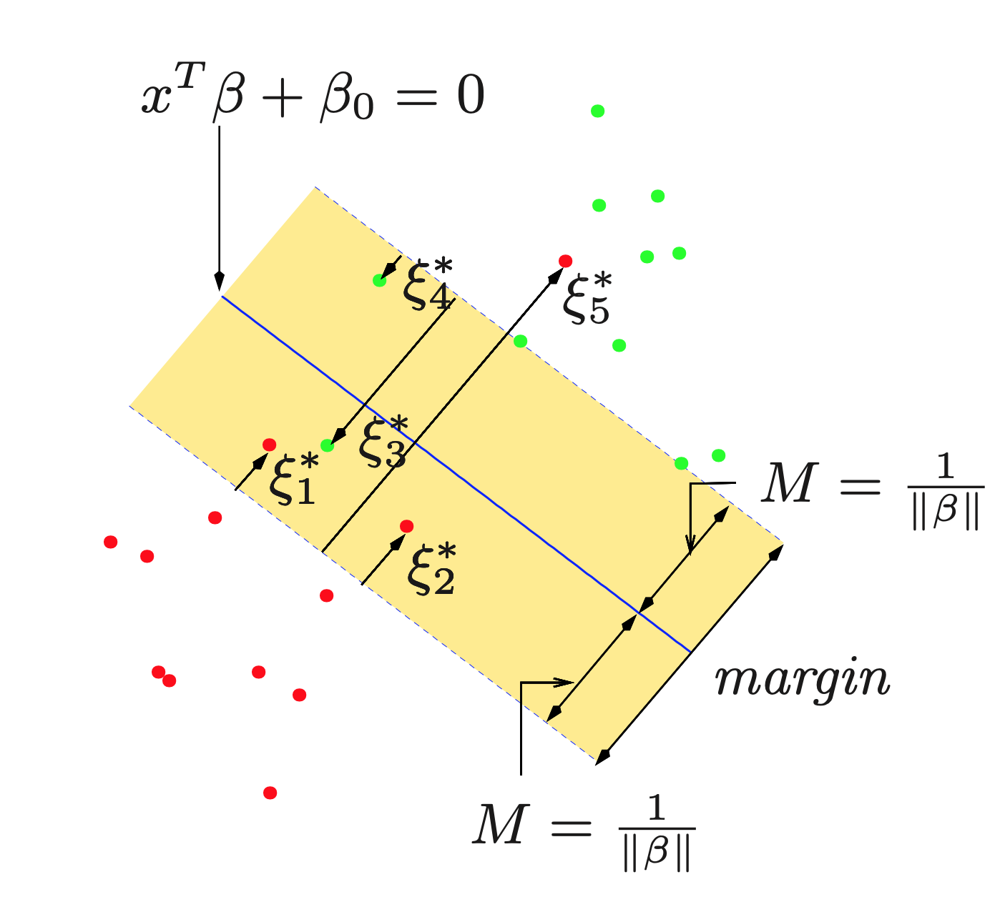
So the soft margin constraint could be expressed as:
We can simplify the soft margin constraint by eliminating . The constraint can be rewritten as . So:
- If is negative, is the trivial solution.
- If is positive, then the trivial solution is .
In fact is th solution for . Therefore our objective is now summarizes to the following:
The loss function is called the hinge loss. The second term is the L2-norm of the weights. Hence, the soft-margin SVM can be seen as a linear classifier with hinge loss and an L2 regularizer.
Dual Form & Kernel Trick
The Lagrange (primal) function corresponding to the previous optimization objective is:
which we minimize with respect to and . Settig the respective derivatives to zero, we get
as well as the positivity constraints for all . By substituting the above equations into , we obtain the Lagrangian (Wolfe) dual objective function
In addition to (1)–(3), the Karush–Kuhn–Tucker conditions include
the constraints
From equation (1), we see that the solution for has the form
with only for those observations for which
otherwise condition (4) implies . These observations are called the support vectors, since the solution only depends on them. Among these support points, some will lie on the edge of the margin , some inside the margin , and others are misclassified (on the wrong side of the decision boundary).
Support Vector Machines and Kernels
The support vector classifier described so far finds linear boundaries in the input feature space. As with other linear methods, we can make the procedure more flexible by enlarging the feature space using basis expansions such as polynomials or splines. Generally linear boundaries in the enlarged space achieve better training-class separation, and translate to nonlinear boundaries in the original space. Once the basis functions are selected, the procedure is the same as before. We fit the SV classifier using input features , , and produce the (nonlinear) function . The classifier is as before. For example, if then could be defined as
which is a mapping into 6-dim space. Then we can calculate
The SVM optimization problem can be directly expressed for the transformed feature vectors so these inner products can be computed very cheaply. The Lagrange dual function has the form
The SVM classifier on the feature mapping into 6-dim space has the solution that can be written as the following using equation (7):
In fact, we need not specify the transformation at all, but require only knowledge of the kernel function that computes inner products in the transformed space. should be a symmetric positive (semi-) definite function. Three popular choices for K in the SVM literature are:
- th-Degree polynomial:
- Radial basis: ,
- Neural network:
Neural Networks
The models we have seen are making some assumption about the data. Although they are powerful but still have limited power to handle many important tasks due to the complexity of data or the tasks. To expand their capabilities, they might require us to create new features to help them learn more complex and general patterns. Inspired by how human brain works or learn, neural networks created to overcome these difficulties more efficiently. In a basic neural network model, first we construct linear combinations of the input variables in the form
where , and the superscript (1) indicates that the corresponding parameters are in the first layer of the network. We shall refer to the parameters as weights and the parameters as biases. The quantities are known as activations. Each of them is then transformed using a differentiable, nonlinear activation function to give
These quantities correspond to the outputs of the basis functions that, in the context of neural networks, are called hidden units. These units in the middle of the network, computing the derived features, are called hidden units because the values are not directly observed. The nonlinear functions are generally chosen to be sigmoidal functions such as the logistic sigmoid or the tanh function. These values are again linearly combined to give output unit activations:
where , and is the total number of outputs. This transformation corresponds to the second layer of the network. A multilayer network consisting of fully connected layers is called a multilayer perceptron (MLP). Finally, the output unit activations are transformed using an appropriate activation function to give a set of network outputs .
Another generalization of the network architecture is to include skip-layer connections, each of which is associated with a corresponding adaptive parameter. Furthermore, the network can be sparse, with not all possible connections within a layer being present. While we can develop more general network mappings by considering more complex network diagrams. However, these must be restricted to a feed-forward architecture, in other words to one having no closed directed cycles, to ensure that the outputs are deterministic functions of the inputs.
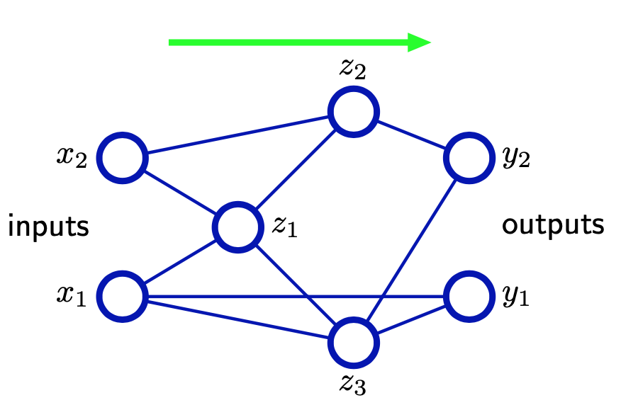
Neural networks are therefore said to be universal approximators. For example, a two-layer network with linear outputs can uniformly approximate any continuous function on a compact input domain to arbitrary accuracy provided the network has a sufficiently large number of hidden units. This result holds for a wide range of hidden unit activation functions, but excluding polynomials. Neural nets can be viewed as a way of learning features: the hidden units in the middle layers are the learned features that lead to the final output of the net. Suppose we’re trying to classify images of handwritten digits. Each image is represented as a vector of 28 ×28 = 784 pixel values. Each first-layer hidden unit computes . It acts as a feature detector. We can visualize by reshaping it into an image to see that each image is a small learned feature such as edges of the original image.
We can connect lots of units together into a directed acyclic graph. This gives a feed-forward neural network. That’s in contrast to recurrent neural networks, which can have cycles. Typically, units are grouped together into layers. Each layer connects N input units to M output units. In the simplest case, all input units are connected to all output units. We call this a fully connected layer. Layer structure of neural networks provide modularity: we can implement each layer’s computations as a black box and then combine or stack them as need. Some common activation functions are:
- Linear:
- Rectified Linear Unit (ReLU):
- Hyperbolic Tangent ()
- Logisic Sgimoid
The rate of activation of the sigmoid depends on the norm of , and if is very small, the unit will indeed be operating in the linear part of its activation function.
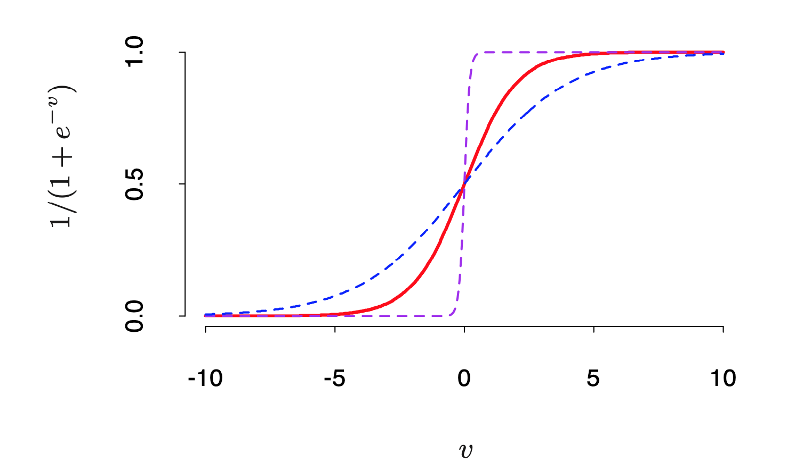
The choice of activation function is determined by the nature of the data and the assumed distribution of target variables. Sigmoid and tanh squash inputs to small ranges making their derivatives become tiny for large inputs (i.e., vanishing gradients). But with ReLU, the gradient is strong and doesn’t vanish for . It is very fast to compute and empirically, ReLU often leads to faster training and better local minima in deep networks compared to sigmoid or tanh. On the other hand, If a neuron’s input is always negative, its output is always 0, and its gradient is 0 — it never learns. To fix this, **Leaky ** ReLU is used: small slope for , e.g., . Since the output of ReLU is not bounded, gradient can explode in deep nets if not normalized properly which BatchNormalization iecomes useful here.
If the activation functions of all the hidden units in a network are taken to be linear (or removed), then the entire model collapses to a linear model in the inputs. This follows from the fact that the composition of successive linear transformations is itself a linear transformation. In fact, networks of only linear units give rise to principal component analysis. Hence a neural network can be thought of as a nonlinear generalization of the linear model, both for regression and classification.
Regression MLPs
First, MLPs can be used for regression tasks. In genral, for standard regression problems, the activation function is the identity so that , regressing targets. If you want to predict a single value (e.g., the price of a house given many of its features), then you just need a single output neuron: its output is the predicted value. For multivariate regression (i.e., to predict multiple values at once), you need one output neuron per output dimension. In general, when building an MLP for regression, you do not want to use any activation function for the output neurons, so they are free to output any range of values. However, if you want to guarantee that the output will always be positive, then you can use the ReLU activation function, or the softplus activation function in the output layer. Finally, if you want to guarantee that the predictions will fall within a given range of values, then you can use the logistic function or the hyperbolic tangent, and scale the labels to the appropriate range: 0 to 1 for the logistic function, or –1 to 1 for the hyperbolic tangent.
The loss function to use during training is typically the mean squared error, but if you have a lot of outliers in the training set, you may prefer to use the mean absolute error instead. Alternatively, you can use the Huber loss, which is a combination of both. The Huber loss is quadratic when the error is smaller than a threshold (typically 1), but linear when the error is larger than . This makes it less sensitive to outliers than the mean squared error, and it is often more precise and converges faster than the mean absolute error.
Classification MLPs
MLPs can also be used for classification tasks. For a binary classification problem, you just need a single output neuron using the logistic activation function: the output will be a number between 0 and 1, which you can interpret as the estimated probability of the positive class. Obviously, the estimated probability of the negative class is equal to one minus that number. MLPs can also easily handle multilabel binary classification tasks
Similarly, for multiple binary classification problems, each output unit activation is transformed using a logistic sigmoid function so that . For -class multiclass classification, there are units at the top, with the th unit modeling the probability of class using softmax activation function. There are target measurements , , each being coded as a 0−1 variable for the th class and the corresponding classifier is . With the softmax activation function and the cross-entropy error function, the neural network model is exactly a linear logistic regression model in the hidden units, and all the parameters are estimated by maximum likelihood.
If the training set was very skewed, with some classes being overrepresented and others underrepresented, it would be useful to set the class_weight argument when calling the fit() method, giving a larger weight to underrepresented classes, and a lower weight to overrepresented classes. These weights would be used by Keras when computing the loss. If you need per-instance weights instead, you can set the sample_weight argument (it supersedes class_weight). This could be useful for example if some instances were labeled by experts while others were labeled using a crowdsourcing platform: you might want to give more weight to the former. You can also provide sample weights (but not class weights) for the validation set by adding them as a third item in the validation_data tuple.
Fitting Neural Networks
The neural network model has unknown weights and we seek values for them that make the model fit the training data well, i.e, minimizing the error function. For regression, we use sum-of-squared errors as our measure of fit (error function):
For classification we use either squared error or cross-entropy (deviance):
Because there is clearly no hope of finding an analytical solution to the equation we resort to iterative numerical procedures. Most techniques involve choosing some initial value for the weight vector and then moving through weight space in a succession of steps of the form where labels the iteration step. Different algorithms involve different choices for the weight vector update . Many algorithms make use of gradient information and therefore require that, after each update, the value of is evaluated at the new weight vector .
The generic approach to minimizing is by gradient descent, called back-propagation in this setting. Because of the compositional form of the model, the gradient can be easily derived using the chain rule for differentiation. This can be computed by a forward and backward sweep over the network, keeping track only of quantities local to each unit.
Backpropogation
Backpropogation can be implemented with a two-pass algorithm. In the forward pass, the current weights are fixed and the predicted values are computed. In the backward pass, the errors are computed, and then back-propagated to give the errors. The gradient updates are a kind of batch learning, with the parameter updates being a sum over all of the training cases. Learning can also be carried out online—processing each observation one at a time, updating the gradient after each training case, and cycling through the training cases many times. A training **epoch ** refers to one sweep through the entire training set. Online training allows the network to handle very large training sets, and also to update the weights as new observations come in.
We want to compute the cost gradient , which is the vector of partial derivatives. This is the average of over all the training examples, so in this lecture we focus on computing . Take one layer perceptron as an example with regularizer:
We can diagram out the computations using a computation graph. The nodes represent all the inputs and computed quantities, and the edges represent which nodes are computed directly as a function of which other nodes.
The forward pass is straightforward. For now assume that we are dealing with single variables and single-value functions. The backward pass goes according to the chain rule:
Notation:
To perform these computations efficiently, we need to vectorize these computations in matrix form. For a fully connected layer connection , the backprop rules will be:
which looks like the following in matrix form:
where
is the Jacobian matrix. So If , then and . Backprop is used to train the overwhelming majority of neural nets today. Check your derivatives numerically by plugging in a small value of h, e.g. 10−10. This is known as finite differences.
Run gradient checks on small, randomly chosen inputs. Use double precision floats (not the default for TensorFlow, PyTorch, etc.!), Compute the relative error: . The relative error should be very small, e.g. . Gradient checking is really important! Learning algorithms often appear to work even if the math is wrong.
Neural Nets: Non-convex Optimization
Training a network with hidden units cannot be convex because of permutation symmetries. Suppose you have a simple feed-forward network: x → Hidden Layer → Output. Let’s say the hidden layer has 3 neurons. Each neuron applies:
Then you compute:
Now suppose you swap and and then swap output weights . The function computed by the network does not change at all. There are 3! of these permutations of hidden units that compute the same function (For a layer with m neurons: m! possible permutations). Suppose we average the parameters of all 3! permutations and consider the model with these averages as parameter values. It is a degenerate model because all the hidden units are identical. On the other hand, if the minimizing the loss was a convex optimization problem, we should have smaller loss for this average parameters because loss of average is less than the average of loss. This implies that the degenerate model should be better choice which is ridiculous. Hence, training multilayer neural nets is non-convex. Permutation symmetries imply that the loss surface has many equivalent minima. These are not isolated points — they’re connected by symmetrical transformations
Training Neural Networks
There is quite an art in training neural networks. The model is generally overparametrized, and the optimization problem is nonconvex and unstable unless certain guidelines are followed. Unfortunately, gradients often get smaller and smaller as the algorithm progresses down to the lower layers. As a result, the Gradient Descent update leaves the lower layer connection weights virtually unchanged, and training never converges to a good solution. This is called the vanishing gradients problem. In some cases, the opposite can happen: the gradients can grow bigger and bigger, so many layers get insanely large weight updates and the algorithm diverges. This is the exploding gradients problem, which is mostly encountered in recurrent neural networks.
Looking at the logistic activation function, you can see that when inputs become large (negative or positive), the function saturates at 0 or 1, with a derivative extremely close to 0. Thus when backpropagation kicks in, it has virtually no gradient to propagate back through the network, and what little gradient exists keeps getting diluted as backpropagation progresses down through the top layers, so there is really nothing left for the lower layers.
We need the signal to flow properly in both directions: in the forward direction when making predictions, and in the reverse direction when backpropagating gradients. We don’t want the signal to die out, nor do we want it to explode and saturate. For the signal to flow properly, the researchers argue that we need the variance of the outputs of each layer to be equal to the variance of its inputs,2 and we also need the gradients to have equal variance before and after flowing through a layer in the reverse direction.
Random Initialization
It is actually not possible to guarantee both unless the layer has an equal number of inputs and neurons (these numbers are called the fan-in and fan-out of the layer), but they proposed a good compromise that has proven to work very well in practice: Random Initialization: the connection weights of each layer must be initialized randomly. this is called Xavier initialization. By default, Keras uses this initialization with a uniform distribution. Note that the use of exact zero weights leads to zero derivatives and perfect symmetry, and the algorithm never moves. Starting instead with large weights often leads to poor solutions.
Vanishing/Exploding Gradients
One of the insights in the 2010 paper by Glorot and Bengio was that the vanishing/exploding gradients problems were in part due to a poor choice of activation function. But it turns out that other activation functions behave much better in deep neural networks, in particular the ReLU activation function, mostly because it does not saturate for positive values (and also because it is quite fast to compute).
Unfortunately, the ReLU activation function is not perfect. It suffers from a problem known as the dying ReLUs: during training, some neurons effectively die, meaning they stop outputting anything other than 0. In some cases, you may find that half of your network’s neurons are dead, especially if you used a large learning rate. A neuron dies when its weights get tweaked in such a way that the weighted sum of its inputs are negative for all instances in the training set. When this happens, it just keeps outputting 0s, and gradient descent does not affect it anymore since the gradient of the ReLU function is 0 when its input is negative. To solve this problem, you may want to use a variant of the ReLU function, such as the leaky ReLU. This function is defined as LeakyReLUα(z) = max(αz, z)
Batch Normalization
Batch Normalization (BN) was a technique to address the vanishing/exploding gradients problems. The technique consists of adding an operation in the model just before or after the activation function of each hidden layer, simply zero-centering and normalizing each input, then scaling and shifting the result using two new parameter vectors per layer: one for scaling, the other for shifting. In other words, this operation lets the model learn the optimal scale and mean of each of the layer’s inputs. In many cases, if you add a BN layer as the very first layer of your neural network, you do not need to standardize your training set (e.g., using a StandardScaler): the BN layer will do it for you (well, approximately, since it only looks at one batch at a time, and it can also rescale and shift each input feature).In order to zero-center and normalize the inputs, the algorithm needs to estimate each input’s mean and standard deviation. It does so by evaluating the mean and standard deviation of each input over the current mini-batch
where is the mini-batch size and represents element-wise multiplication. It was reported that BN is leading to a huge improvement in the ImageNet classification task (ImageNet is a large database of images classified into many classes and commonly used to evaluate computer vision systems). The vanishing gradients problem was strongly reduced, to the point that they could use saturating activation functions such as the tanh and even the logistic activation function. The networks were also much less sensitive to the weight initialization. They were able to use much larger learning rates, significantly speeding up the learning process.
You may find that training is rather slow, because each epoch takes much more time when you use batch normalization. However, this is usually counterbalanced by the fact that convergence is much faster with BN, so it will take fewer epochs to reach the same performance. All in all, wall time will usually be smaller (this is the time measured by the clock on your wall). Batch Normalization has become one of the most used layers in deep neural networks, to the point that it is often omitted in the diagrams, as it is assumed that BN is added after every layer.
Clipping Gradients
Another popular technique to lessen the exploding gradients problem is to simply clip the gradients during backpropagation so that they never exceed some threshold. This is called Gradient Clipping. This technique is most often used in recurrent neural networks, as Batch Normalization is tricky to use in RNNs. This will clip every component of the gradient vector to a value between –1.0 and 1.0.
Number of Hidden Units and Layers
It is most common to put down a reasonably large number of units and train them with regularization. Some researchers use. Choice of the number of hidden layers is guided by background knowledge. and experimentation. Each layer extracts features of the input for regression or classification. Use of multiple hidden layers allows construction of hierarchical features at different levels of resolution.
Regularization in Neural Networks
Note that , the number of hidden units controls the number of parameters (weights and biases) in the network, and so we might expect that in a maximum likelihood setting there will be an optimum value of that gives the best generalization performance, corresponding to the optimum balance between under-fitting and over-fitting. The generalization error, however, is not a simple function of due to the presence of local minima in the error function. Here we see the effect of choosing multiple random initializations for the weight vector for a range of values of . The overall best validation set performance in this case occurred for a particular solution having . In practice, one approach to choosing is in fact to plot a graph of the kind shown below and then to choose the specific solution having the smallest validation set error.
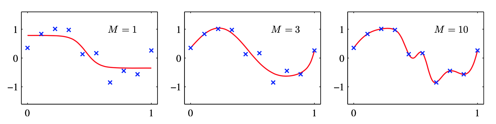
Examples of two-layer networks trained on data points drawn from the sinusoidal dataset. The graphs show the result of fitting networks having and hidden units, respectively, by minimizing a sum-of-squares error function using a scaled conjugate-gradient algorithm. There are, however, other ways to control the complexity of a neural network model in order to avoid over-fitting. The simplest regularizer is the quadratic, giving a regularized error. The simplest regularizer is the quadratic, giving a regularized error of the form
This regularizer is also known as weight decay and has been discussed at length. Larger values of will tend to shrink the weights toward zero: typically cross-validation is used to estimate λ. The effective model complexity is then determined by the choice of the regularization coefficient . As we have seen previously, this regularizer can be interpreted as the negative logarithm of a zero-mean Gaussian prior distribution over the weight vector . You can use ℓ1 and ℓ2 regularization to constrain a neural network’s connection weights (but typically not its biases). Here is how to apply ℓ2 regularization to a Keras layer’s connection weights, using a regularization factor of 0.01. The l2() function returns a regularizer that will be called to compute the regularization loss, at each step during training. This regularization loss is then added to the final loss.
Dropout
Dropout is one of the most popular regularization techniques for deep neural networks. It is a fairly simple algorithm: at every training step, every neuron (including the input neurons, but always excluding the output neurons) has a probability p of being temporarily “dropped out,” meaning its output is set to zero during this training step and no gradients flow through it., but it may be active during the next training step. So it does not contribute to forward pass or backpropagation for that training step. This happens only during training. The hyperparameter is called the dropout rate, and it is typically set to 50%. At inference time, all neurons are used normally. Dropout
- prevents the network from relying too heavily on specific neurons (co-adaptation).
- encourages the network to learn more robust, generalized representations.
- acts like training an ensemble of smaller networks, and averaging them at inference.
If you observe that the model is overfitting, you can increase the dropout rate. Conversely, you should try decreasing the dropout rate if the model underfits the training set. It can also help to increase the dropout rate for large layers, and reduce it for small ones. Moreover, many state-of-the-art architectures only use dropout after the last hidden layer, so you may want to try this if full dropout is too strong. Dropout does tend to significantly slow down convergence, but it usually results in a much better model when tuned properly. So, it is generally well worth the extra time and effort.
Early stopping
Often neural networks have too many weights and will overfit the data at the global minimum of R. In early developments of neural networks, either by design or by accident, an early stopping rule was used to avoid overfitting. The training of nonlinear network models corresponds to an iterative reduction of the error function defined with respect to a set of training data. For many of the optimization algorithms used for network training, such as conjugate gradients, the error is a nonincreasing function of the iteration index. However, the error measured with respect to independent data, generally called a validation set, often shows a decrease at first, followed by an increase as the network starts to over-fit. Training can therefore be stopped at the point of smallest error with respect to the validation dataset in order to obtain a network having good generalization performance.
The behaviour of the network in this case is sometimes explained qualitatively in terms of the effective number of degrees of freedom in the network, in which this number starts out small and then to grows during the training process, corresponding to a steady increase in the effective complexity of the model.
Faster Optimizers
Training a very large deep neural network can be painfully slow. So far we have seen four ways to speed up training (and reach a better solution): applying a good initialization strategy for the connection weights, using a good activation function, using Batch Normalization, and reusing parts of a pretrained network (possibly built on an auxiliary task or using unsupervised learning). Another huge speed boost comes from using a faster optimizer than the regular Gradient Descent optimizer. Some popular ones are Adam, AdaGrad, RMSProp.
If you set it way too high, training may actually diverge. If you set it too low, training will eventually converge to the optimum, but it will take a very long time. If you set it slightly too high, it will make progress very quickly at first, but it will end up dancing around the optimum, never really settling down. If you have a limited computing budget, you may have to interrupt training before it has converged properly, yielding a suboptimal solution.
Learning Rate, Batch Size and Other Hyperparameters
The number of hidden layers and neurons are not the only hyperparameters you can tweak in an MLP. Here are some of the most important ones, and some tips on how to set them:
The learning rate is arguably the most important hyperparameter. In general, the optimal learning rate is about half of the maximum learning rate. So a simple approach for tuning the learning rate is to start with a large value that makes the training algorithm diverge, then divide this value by 3 and try again, and repeat until the training algorithm stops diverging. The batch size can also have a significant impact on your model’s performance and the training time. In general the optimal batch size will be lower than 32.
A small batch size ensures that each training iteration is very fast, and although a large batch size will give a more precise estimate of the gradients, in practice this does not matter much since the optimization landscape is quite complex and the direction of the true gradients do not point precisely in the direction of the optimum. However, having a batch size greater than 10 helps take advantage of hardware and software optimizations, in particular for matrix multiplications, so it will speed up training. Moreover, if you use Batch Normalization, the batch size should not be too small.
In general, the ReLU activation function will be a good default for all hidden layers. For the output layer, it really depends on your task. In most cases, the number of training iterations does not actually need to be tweaked: just use early stopping instead.
Reusing Pretrained Layers
It is generally not a good idea to train a very large DNN from scratch: instead, you should always try to find an existing neural network that accomplishes a similar task to the one you are trying to tackle, then just reuse the lower layers of this network: this is called transfer learning. It will not only speed up training considerably, but will also require much less training data.
The output layer of the original model should usually be replaced since it is most likely not useful at all for the new task, and it may not even have the right number of outputs for the new task. Similarly, the upper hidden layers of the original model are less likely to be as useful as the lower layers, since the high-level features that are most useful for the new task may differ significantly from the ones that were most useful for the original task. You want to find the right number of layers to reuse.
Try freezing all the reused layers first (i.e., make their weights non-trainable, so gradient descent won’t modify them), then train your model and see how it performs. Then try unfreezing one or two of the top hidden layers to let backpropagation tweak them and see if performance improves. The more training data you have, the more layers you can unfreeze. It is also useful to reduce the learning rate when you unfreeze reused layers: this will avoid wrecking their fine-tuned weights.
If you still cannot get good performance, and you have little training data, try dropping the top hidden laye r(s) and freeze all remaining hidden layers again. You can iterate until you find the right number of layers to reuse. If you have plenty of training data, you may try replacing the top hidden layers instead of dropping them, and even add more hidden layers. So why did I cheat? Well it turns out that transfer learning does not work very well with small dense networks: it works best with deep convolutional neural networks, so we will revisit transfer learning.
Mixture Density Networks
The goal of supervised learning is to model a conditional distribution , which for many simple regression problems is chosen to be Gaussian. However, practical machine learning problems can often have significantly non-Gaussian distributions. These can arise, for example, with inverse problems in which the distribution can be multimodal, in which case the Gaussian assumption can lead to very poor predictions.
As demonstration, data for this problem is generated by sampling a variable uniformly over the interval , to give a set of values , and the corresponding target values are obtained by computing the function and then adding uniform noise over the interval . The inverse problem is then obtained by keeping the same data points but exchanging the roles of and .
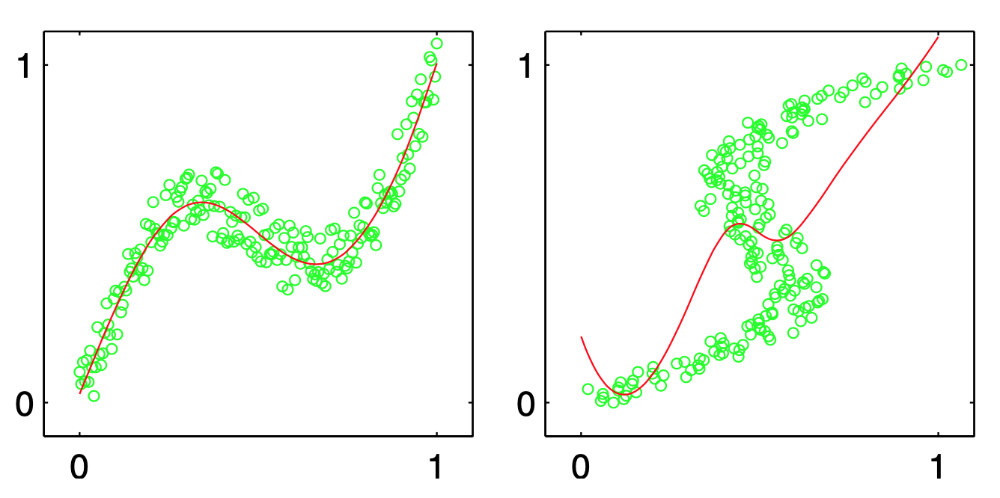
Least squares corresponds to maximum likelihood under a Gaussian assumption. We see that this leads to a very poor model for the highly non-Gaussian inverse problem. We therefore seek a general framework for modelling conditional probability distributions. This can be achieved by using a mixture model for in which both the mixing coefficients as well as the component densities are flexible functions of the input vector , giving rise to the mixture density network. For any given value of , the mixture model provides a general formalism for modelling an arbitrary conditional density function . Here we shall develop the model explicitly for Gaussian components, so that
This is an example of a heteroscedastic model since the noise variance on the data is a function of the input vector . Instead of Gaussians, we can use other distributions for the components, such as Bernoulli distributions if the target variables are binary rather than continuous. We have also specialized to the case of isotropic covariances for the components, although the mixture density network can readily be extended to allow for general covariance matrices by representing the covariances using a Cholesky factorization. We now take the various parameters of the mixture model, namely the mixing coefficients , the means , and the variances , to be governed by the outputs of a conventional neural network that takes as its input.
If there are components in the mixture model, and if has K components, then the network will have output unit activations denoted by that determine the mixing coefficients , K outputs denoted by that determine the kernel widths , and L × K outputs denoted by that determine the components of the kernel centres . The total number of network outputs is given by (K + 2) L, as compared with the usual K outputs for a network, which simply predicts the conditional means of the target variables. The mixing coefficients must satisfy the constraints
which can be achieved using a set of softmax outputs:
Similarly, the variances must satisfy and so can be represented in terms of the exponentials of the corresponding network activations using . Because the means have real components, they can be represented directly by the network output activations .
The adaptive parameters of the mixture density network comprise the vector of weights and biases in the neural network, that can be set by maximum likelihood, or equivalently by minimizing an error function defined to be the negative logarithm of the likelihood. For independent data, this error function takes the form
where we have made the dependencies on explicit.
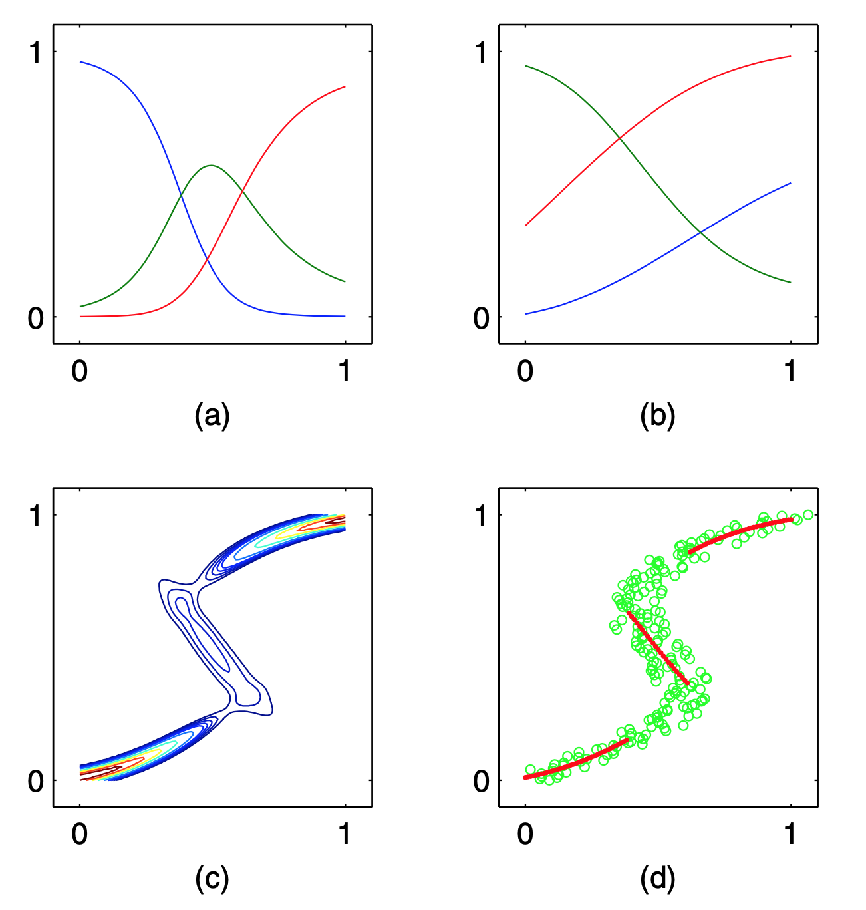
Plot of the mixing coefficients as a function of for the three kernel functions in a mixture density network trained on the data. The model has three Gaussian components, and uses a two-layer multi-layer perceptron with five ‘tanh’ sigmoidal units in the hidden layer, and nine outputs (corresponding to the 3 means and 3 variances of the Gaussian components and the 3 mixing coefficients). At both small and large values of , where the conditional probability density of the target data is unimodal, only one of the kernels has a high value for its prior probability, while at intermediate values of , where the conditional density is trimodal, the three mixing coefficients have comparable values. (b) Plots of the means using the same colour coding as for the mixing coefficients. (c) Plot of the contours of the corresponding conditional probability density of the target data for the same mixture density network. (d) Plot of the approximate conditional mode, shown by the red points, of the conditional density.
Once a mixture density network has been trained, it can predict the conditional density function of the target data for any given value of the input vector. This conditional density represents a complete description of the generator of the data, so far as the problem of predicting the value of the output vector is concerned. One of the simplest of these is the mean, corresponding to the conditional average of the target data, and is given by
We can similarly evaluate the variance of the density function about the conditional averag - see p277.
Convolutional Neural Networks
Convolutional networks networks (LeCun 1989), also known as convolutional neural or CNNs, are a specialized kind of neural network for processing data that has a known, grid-like topology. Examples include time-series data, which can be thought of as a 1D grid taking samples at regular time intervals, and image data, which can be thought of as a 2D grid of pixels. Most commonly, ConvNet architectures make the explicit assumption that the inputs are images.
The name convolutional neural network indicates that the network employs a mathematical operation called convolution. Convolution is a specialized kind of linear operation. Convolutional networks are simply neural networks that use convolution in place of general matrix multiplication in at least one of their layers. Convolution of two functions is defined as:
Convolution natuarally appears in different areas of Mathematics such as Probability Theory. For example, the pdf of the sum of two random variables is convolution of their pdfs. If x and w are defined only on integer t, we can define the discrete convolution:
The first argument x to the convolution is often referred to as the input and the second w argument as the filter (or kernel). The output is sometimes referred to as the feature map. In machine learning applications, the input is usually a multidimensional array of data and the kernel is usually a multidimensional array of parameters that are adapted by the learning algorithm. We will refer to these multidimensional arrays as tensors. Because each element of the input and kernel must be explicitly stored separately, we usually assume that these functions are zero everywhere but the finite set of points for which we store the values.
We often use convolutions over more than one axis at a time. For example, if we use a two-dimensional image I as our input, we probably also want to use a two-dimensional kernel:
Also,
In the above formula, the kernel is not flipped (+ not - ) which is the common way to implement convolution in machine learning. It is also rare for convolution to be used alone in machine learning; instead convolution is used simultaneously with other functions, and the combination of these functions does not commute regardless of whether the convolution operation flips its kernel or not. Discrete convolution can be viewed as multiplication by a matrix. However, the matrix has several entries constrained to be equal to other entries. For example, for univariate discrete convolution, each row of the matrix is constrained to be equal to the row above shifted by one element. This usually corresponds to a very sparse matrix (a matrix whose entries are mostly equal to zero) because the kernel is usually much smaller than the input image.
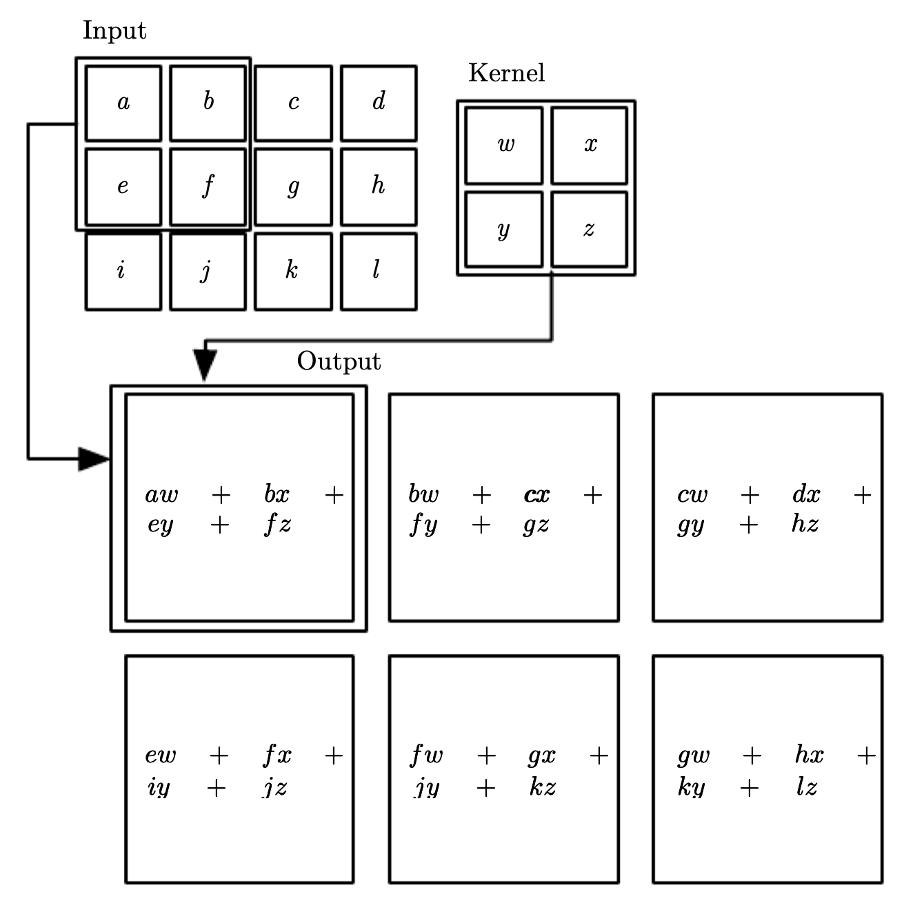
Convolution leverages three important ideas that can help improve a machine learning system:
-
Local Connectivity: In traditional neural network layers, every output unit interacts with every input unit through matrix multiplication meaning a separate parameter describing the interaction between each input unit and each output unit. When dealing with high-dimensional inputs such as images, it is impractical to connect units to all units in the previous volume. In convolutional networks instead, we will connect each unit to only a local region of the input volume. So conv nets typically have sparse interactions referred to as sparse connectivity (also or sparse weights). This is accomplished by making the kernel smaller than the input. This means that we need to store fewer parameters, which both reduces the memory requirements of the model and improves its statistical efficiency. It also means that computing the output requires fewer operations.
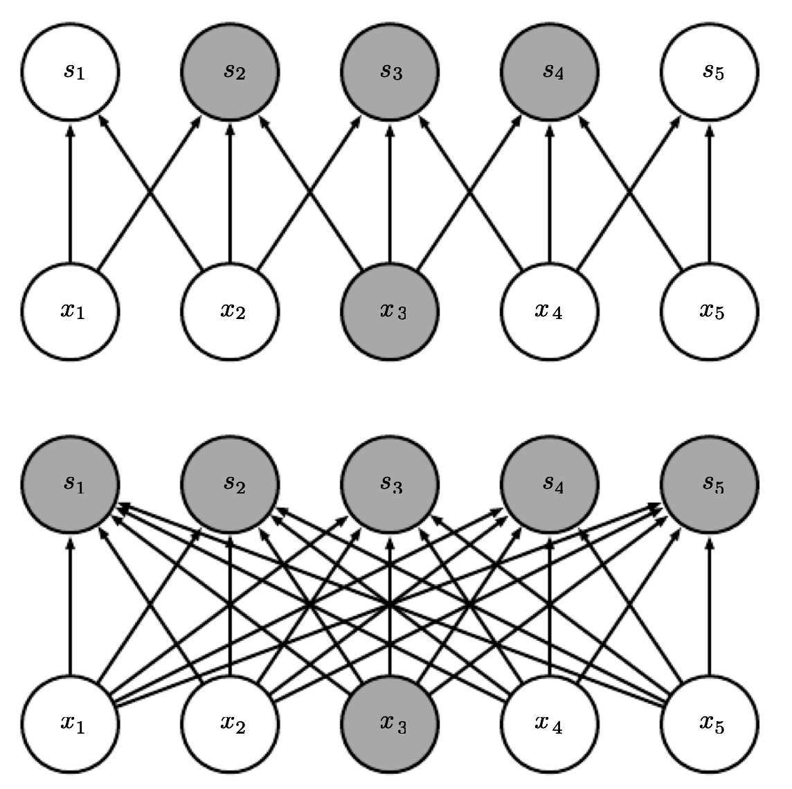
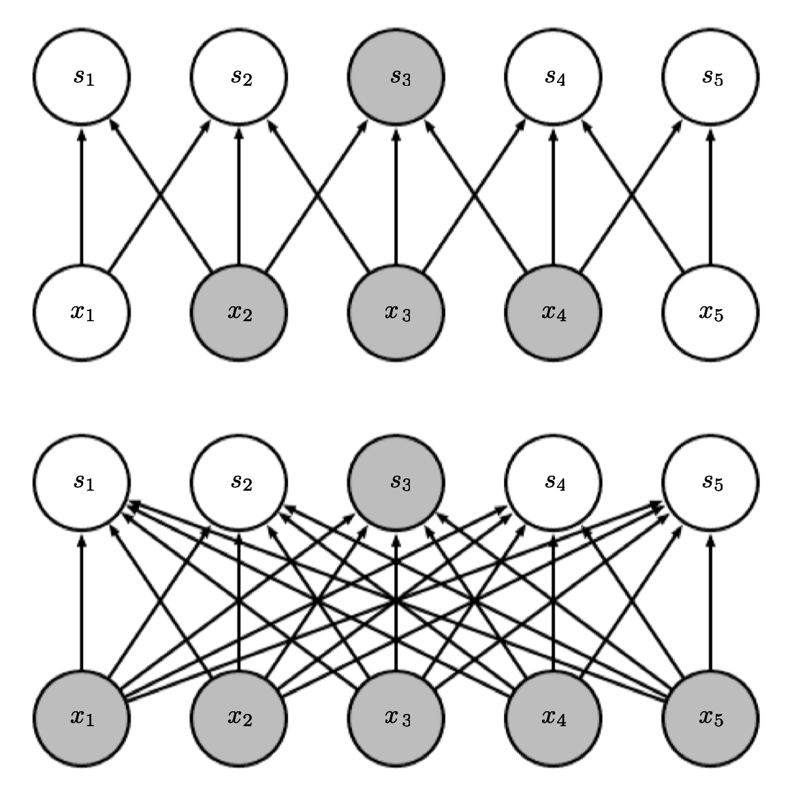
We highlight one output unit
s3and also highlight the input units inxthat affect this unit. These units are known as the receptive field ofs3. The receptive field is the spatial extent of a filter (or in other words, the connectivity). Note that the extent of the connectivity along the depth axis (depth of the filter) is always equal to the depth of the input volume. The connections are local in 2D space (along width and height), but always full along the entire depth of the input volume. (Top) When s is formed by convolution with a kernel of width , only three inputs affect s3. When (Bottom) s is formed by matrix multiplication, connectivity is no longer sparse, so all of the inputs affect s3.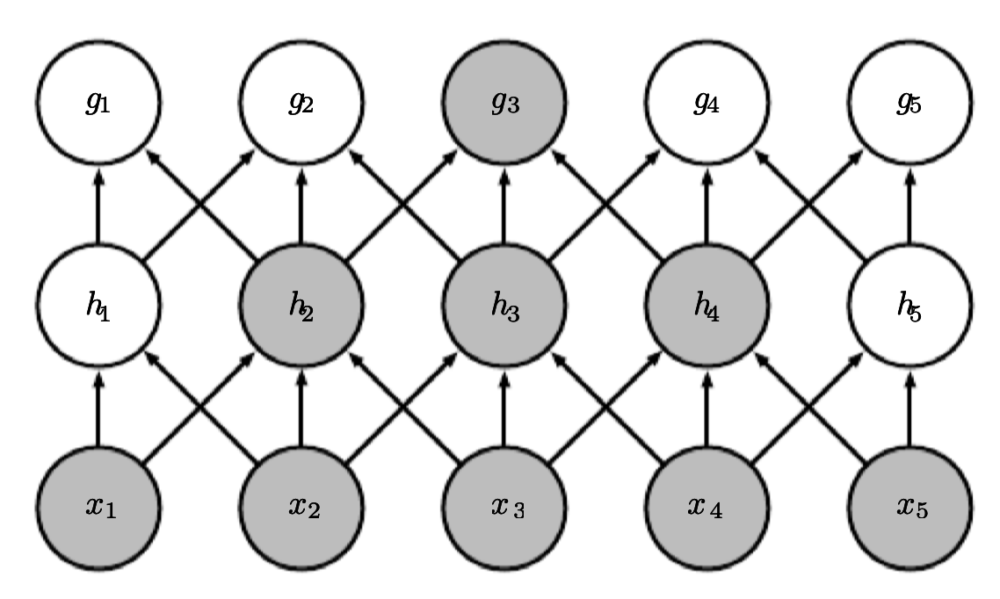
The receptive field of the units in the deeper layers of a convolutional network is larger than the receptive field of the units in the shallow layers. This effect increases if the network includes architectural features like strided convolution or pooling. This means that even though direct connections in a convolutional net are very sparse, units in the deeper layers can be indirectly connected to all or most of the input image.
-
Parameter Sharing: In a traditional neural net, each element of the weight matrix is used exactly once when computing the output of a layer. It is multiplied by one element of the input and then never revisited. The parameter sharing used by the convolution operation means that rather than learning a separate set of parameters.
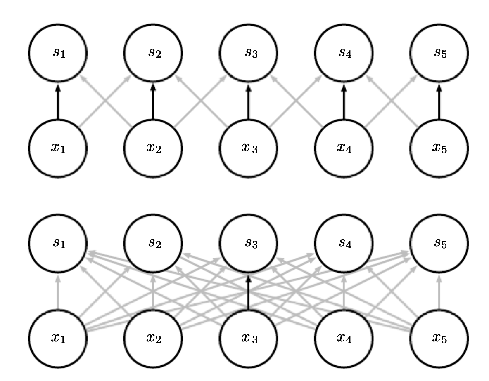
Black arrows indicate the connections that use a particular parameter in two different models. (Top) The black arrows indicate uses of the central element of a 3-element kernel in a convolutional model. Due to parameter sharing, this single parameter is used at all input locations. (Bottom) The single black arrow indicates the use of the central element of the weight matrix in a fully connected model. This model has no parameter sharing so the parameter is used only once.
-
Equivariant: The particular form of parameter sharing causes the layer to have a property called equivariance to translation. With images, convolution creates a 2-D map of where certain features appear in the input. If we move the object in the input, its representation will move the same amount in the output. When processing images, it is useful to detect edges in the first layer of a convolutional network. The same edges appear more or less everywhere in the image, so it is practical to share parameters across the entire image. In some cases, we may not wish to share parameters across the entire image. For example, if we are processing images that are cropped to be centered on an individual’s face, we probably want to extract different features at different locations—the part of the network processing the top of the face needs to look for eyebrows, while the part of the network processing the bottom of the face needs to look for a chin.
Efficiency of Edge Detection
The image below on the right was formed by taking each pixel in the original image and subtracting the value of its neighboring pixel on the left.
This shows the strength of all of the vertically oriented edges in the input image, which can be a useful operation for object detection. Both images are 280 pixels tall. The input image is 320 pixels wide while the output image is 319 pixels wide. This transformation can be described by a convolution kernel containing two elements, and 319 × 280 × 3 = 267,960 floating point operations (two multiplications and requires 319 one addition per output pixel) to compute using convolution.
As a more clear example, suppose you have a simple image of a square split into white (left) and gray (right) area from the middle. Convolute this matrix with a filter that will turn out to be the vertical edge detector. The following matrix a a representation of this:
which activates the middle pixels vertically in the image as the border between white and gray.
To describe the same transformation with a matrix multiplication would take 320× 280× 319 × 280, or over eight billion, entries in the matrix, making convolution four billion times more efficient for representing this transformation. The straightforward matrix multiplication algorithm performs over sixteen billion floating point operations, making convolution roughly 60,000 times more efficient computationally. Convolution with a single kernel can only extract one kind of feature, albeit at many spatial locations. Usually we want each layer of our network to extract many kinds of features, at many locations. So we use several filters to capture more information.
Pooling
A typical layer of a convolutional network consists of three stages. In the first stage, the layer performs several convolutions in parallel to produce a set of linear activations. In the second stage, each linear activation is run through a nonlinear activation function, such as the rectified linear activation function. This stage is sometimes called the detector stage. In the third stage, we use a pooling function to modify the output of the layer further. A pooling function replaces the output of the net at a certain location with a summary statistic of the nearby outputs.
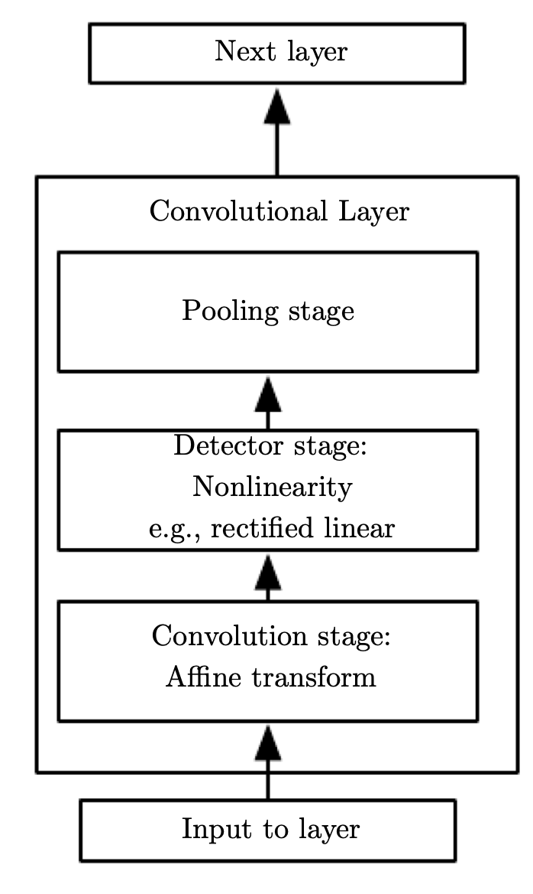
For example, the max pooling operation reports the maximum output within a rectangular neighborhood. Max pooling introduces invariance. The image below demonstrate a view of the middle of the output of a convolutional layer. The bottom row shows outputs of the nonlinearity. The top row shows the outputs of max pooling, with a stride of one pixel between pooling regions and a pooling region width of three pixels. The Bottom is a view of the same network, after the input has been shifted to the right by one pixel. Every value in the bottom row has changed, but only half of the values in the top row have changed, because the max pooling units are only sensitive to the maximum value in the neighborhood, not its exact location.
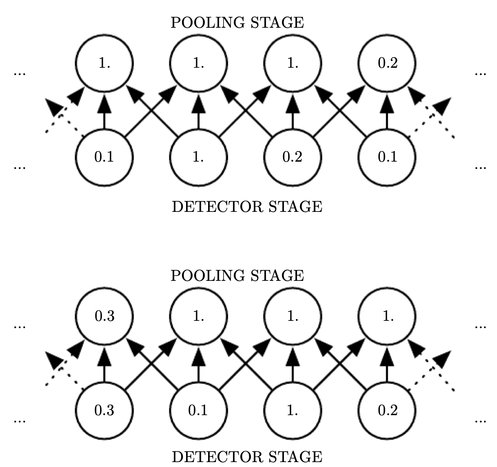
Pooling over spatial regions produces invariance to translation, but if we pool over the outputs of separately parametrized convolutions, the features can learn which transformations to become invariant to.
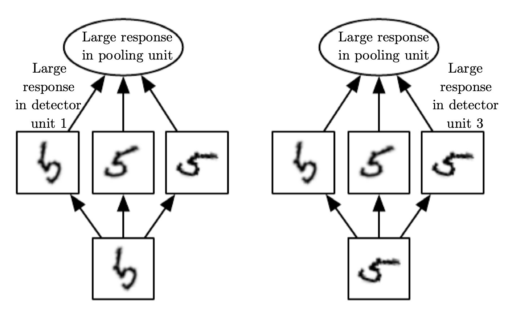
A pooling unit that pools over multiple features that are learned with separate filters can learn to be invariant to transformations of the input. Each filter attempts to match a slightly different orientation of the 5. When a 5 appears in the input, the corresponding filter will match it and cause a large activation in a detector unit. The max pooling unit then has a large activation regardless of which detector unit was activated. Max pooling over spatial positions is naturally invariant to translation; this multi-channel approach is only necessary for learning other transformations.
Pooling is also used for downsampling. Here we use max-pooling with a pool width of 3 and a stride between pools of 2. This reduces the representation size by a factor of 2, which reduces the computational and statistical burden on the next layer. Note that the rightmost pooling region has a smaller size, but must be included if we do not want to ignore some of the detector units.
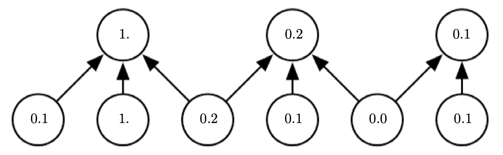
In all cases, pooling helps to make the representation become approximately invariant to small translations of the input. The pooled outputs do not change. Invariance to local translation can be a very useful property if we care more about whether some feature is present than exactly where it is. When determining whether an image contains a face, we need not know the location of the eyes with pixel-perfect accuracy, we just need to know that there is an eye on the left side of the face and an eye on the right side of the face. In other contexts, it is more important to preserve the location of a feature. For example, if we want to find a corner defined by two edges meeting at a specific orientation, we need to preserve the location of the edges well enough to test whether they meet.
Other popular pooling functions include the average of a rectangular neighborhood, the L2 norm of a rectangular neighborhood, or a weighted average based on the distance from the central pixel. Pooling can complicate some kinds of neural network architectures that use top-down information, such as Boltzmann machines and autoencoders. Convolution and pooling can cause underfitting. If a task relies on preserving precise spatial information, then using pooling on all features can increase the training error. Discarding pooling layers has also been found to be important in training good generative models, such as variational autoencoders (VAEs) or generative adversarial networks (GANs).
Hyperparameters
Three hyperparameters control the size of the output volume of a convlutional layer:
-
Depth: a hyperparameter corresponding to the number of filters we would like to use, each learning to look for something different in the input. For example, if the first Convolutional Layer takes as input the raw image, then different neurons along the depth dimension may activate in presence of various oriented edges, or blobs of color. We will refer to a set of neurons that are all looking at the same region of the input as a depth column.
-
Stride: specifies the stride with which we slide the filter. When the stride is 1 then we move the filters one pixel at a time. When the stride is 2 (or uncommonly 3 or more, though this is rare in practice) then the filters jump 2 pixels at a time as we slide them around. This will produce smaller output volumes spatially.
-
Zero-Padding: One essential feature of any convolutional network implementation is the ability to implicitly zero-pad. Without this feature, the width of the representation shrinks by one pixel less than the filter width at each layer. Zero padding the input allows us to control the filter width and the size of the output independently. Without zero padding, we are forced to choose between shrinking the spatial extent of the network rapidly and using small filters—both scenarios that significantly limit the expressive power of the network. The nice feature of zero padding is that it will allow us to control the spatial size of the output volumes (most commonly as we’ll see soon we will use it to exactly preserve the spatial size of the input volume so the input and output width and height are the same).
We can compute the spatial size of the output volume as a function of the input volume size (W), the receptive field size of the Conv Layer neurons (F), the stride with which they are applied (S), and the amount of zero padding used (P) on the border. You can convince yourself that the correct formula for calculating how many neurons “fit” is given by (W−F+2P)/S+1. For example for a 7x7 input and a 3x3 filter with stride 1 and pad 0 we would get a 5x5 output. With stride 2 we would get a 3x3 output.
Suppose that the input volume X has shape X.shape: (11,11,4). Suppose further that we use no zero padding (P=0), that the filter size is F=5, and that the stride is S=2. The output volume would therefore have spatial size (11-5)/2+1 = 4, giving a volume with width and height of 4. The activation map in the output volume (call it V), would then look as follows (only some of the elements are computed in this example):
V[0,0,0] = np.sum(X[:5,:5,:] * W0) + b0
V[1,0,0] = np.sum(X[2:7,:5,:] * W0) + b0
V[2,0,0] = np.sum(X[4:9,:5,:] * W0) + b0
V[3,0,0] = np.sum(X[6:11,:5,:] * W0) + b0
Remember that in numpy, the operation * above denotes elementwise multiplication between the arrays. Notice also that the weight vector W0 is the weight vector of that neuron and b0 is the bias. Here, W0 is assumed to be of shape W0.shape: (5,5,4), since the filter size is 5 and the depth of the input volume is 4. Notice that at each point, we are computing the dot product as seen before in ordinary neural networks. Also, we see that we are using the same weight and bias (due to parameter sharing), and where the dimensions along the width are increasing in steps of 2 (i.e. the stride). To construct a second activation map in the output volume, we would have:
V[0,0,1] = np.sum(X[:5,:5,:] * W1) + b1
V[1,0,1] = np.sum(X[2:7,:5,:] * W1) + b1
V[2,0,1] = np.sum(X[4:9,:5,:] * W1) + b1
V[3,0,1] = np.sum(X[6:11,:5,:] * W1) + b1
V[0,1,1] = np.sum(X[:5,2:7,:] * W1) + b1 (example of going along y)
V[2,3,1] = np.sum(X[4:9,6:11,:] * W1) + b1 (or along both)
...
where we see that we are indexing into the second depth dimension in V (at index 1) because we are computing the second activation map, and that a different set of parameters (W1) is now used. In the example above, we are for brevity leaving out some of the other operations the Conv Layer would perform to fill the other parts of the output array V. Additionally, recall that these activation maps are often followed elementwise through an activation function such as ReLU, but this is not shown here. To summarize, the Conv Layer:
- Accepts a volume of size W1×H1×D1
- Requires four hyperparameters:
- Number of filters K,
- their spatial extent F,
- the stride S,
- the amount of zero padding P.
- Produces a volume of size W2×H2×D2 where:
- W2=(W1−F+2P)/S+1
- H2=(H1−F+2P)/S+1 (i.e. width and height are computed equally by symmetry)
- D2=K
In the output volume, the d-th depth slice (of size W2×H2) is the result of performing a valid convolution of the d-th filter over the input volume with a stride of S, and then offset by d-th bias. A common setting of the hyperparameters is F=3,S=1,P=1. However, there are common conventions and rules of thumb that motivate these hyperparameters.
Backpropagation
The backward pass for a convolution operation (for both the data and the weights) is also a convolution (but with spatially-flipped filters). This is easy to derive in the 1-dimensional case with a toy example.
Recall from the backpropagation chapter that the backward pass for a max(x, y) operation has a simple interpretation as only routing the gradient to the input that had the highest value in the forward pass. Hence, during the forward pass of a pooling layer it is common to keep track of the index of the max activation (sometimes also called the switches) so that gradient routing is efficient during backpropagation. This way max pooling layer add no cost for backpropogation.
Converting FC layers to CONV layers
It is worth noting that the only difference between FC (fully connected) and CONV layers is that the neurons in the CONV layer are connected only to a local region in the input, and that many of the neurons in a CONV volume share parameters. However, the neurons in both layers still compute dot products, so their functional form is identical. Therefore, it turns out that it’s possible to convert between FC and CONV layers:
-
For any CONV layer there is an FC layer that implements the same forward function. The weight matrix would be a large matrix that is mostly zero except for at certain blocks (due to local connectivity) where the weights in many of the blocks are equal (due to parameter sharing). This is extremely computationally wastful.
-
Any FC layer can be converted to a CONV layer. For example, an FC layer with K=4096 units that is looking at some input volume of size 7×7×512 can be equivalently expressed as a CONV layer with F=7,P=0,S=1,K=4096 (K is the number of filters). In other words, we are setting the filter size to be exactly the size of the input volume, and hence the output will simply be 1×1×4096 since only a single depth column “fits” across the input volume, giving identical result as the initial FC layer.
FC -> CONV conversion is particularly useful in practice. Consider a ConvNet architecture that takes a 224x224x3 image, and then uses a series of CONV layers and POOL layers to reduce the image to an activations volume of size 7x7x512 (this is done by use of 5 pooling layers that downsample the input spatially by a factor of two each time, making the final spatial size 224/2/2/2/2/2 = 7). From there, an AlexNet uses two FC layers of size 4096 and finally the last FC layers with 1000 neurons that compute the class scores. We can convert each of these three FC layers to CONV layers as described above:
- Replace the first FC layer that looks at [7x7x512] volume with a CONV layer that uses filter size F=7, giving output volume [1x1x4096].
- Replace the second FC layer with a CONV layer that uses filter size F=1, giving output volume [1x1x4096]
- Replace the last FC layer similarly, with F=1, giving final output [1x1x1000]
It turns out that this conversion allows us to “slide” the original ConvNet very efficiently across many spatial positions in a larger image, in a single forward pass. For example, if 224x224 input image gives a volume of size [7x7x512] - i.e. a reduction by 32, then forwarding an unput image of size 384x384 through the converted architecture would give the equivalent volume in size [12x12x512], since 384/32 = 12. Following through with the next 3 CONV layers that we just converted from FC layers (applied 3 Conv layers: 4096 filters of size each, then another 4096 filter of size 1 each, 1000 filters of size 1 each) would now give the final volume of size [6x6x1000], since (12 - 7)/1 + 1 = 6. Note that instead of a single vector of class scores of size [1x1x1000], we’re now getting an entire 6x6 array of class scores across the 384x384 image. Here is the benefit:
Evaluating the original ConvNet (with FC layers) independently across 224x224 crops of the 384x384 image in strides of 32 pixels gives an identical result to forwarding the converted ConvNet one time but the second option is much more efficient.
Naturally, forwarding the converted ConvNet a single time is much more efficient than iterating the original ConvNet over all those 36 locations, since the 36 evaluations share computation. This trick is often used in practice to get better performance, where for example, it is common to resize an image to make it bigger, use a converted ConvNet to evaluate the class scores at many spatial positions and then average the class scores.
Lastly, what if we wanted to efficiently apply the original ConvNet over the image but at a stride smaller than 32 pixels? We could achieve this with multiple forward passes. For example, note that if we wanted to use a stride of 16 pixels we could do so by combining the volumes received by forwarding the converted ConvNet twice: First over the original image and second over the image but with the image shifted spatially by 16 pixels along both width and height.
ConvNet Architectures
We have seen that Convolutional Networks are commonly made up of only three layer types: CONV, POOL (Max pool unless stated otherwise) and FC (fully-connected). We will also explicitly write the RELU activation function as a layer, which applies elementwise non-linearity.
Layer Patterns
The most common form of a ConvNet architecture stacks a few CONV-RELU layers, follows them with POOL layers, and repeats this pattern until the image has been merged spatially to a small size. At some point, it is common to transition to fully-connected layers. The last fully-connected layer holds the output, such as the class scores. In other words, the most common ConvNet architecture follows the pattern:
INPUT -> [[CONV -> RELU]*N -> POOL?]*M -> [FC -> RELU]*K -> FC
where the * indicates repetition, and the POOL? indicates an optional pooling layer. Moreover, N >= 0 (and usually N <= 3), M >= 0, K >= 0 (and usually K < 3). Or there is a single CONV layer between every POOL layer
INPUT -> [CONV -> RELU -> POOL]*2 -> FC -> RELU -> FC
Or we see two CONV layers stacked before a POOL layer. This is generally a good idea for larger and deeper networks, because multiple stacked CONV layers can develop more complex features of the input volume before the destructive pooling operation.:
INPUT -> [CONV -> RELU -> CONV -> RELU -> POOL]*3 -> [FC -> RELU]*2 -> FC
Here we see two CONV layers stacked before every POOL layer. This is generally a good idea for larger and deeper networks, because multiple stacked CONV layers can develop more complex features of the input volume before the destructive pooling operation.
Prefer a stack of small filter CONV to one large receptive field CONV layer. Suppose that you stack three 3x3 CONV layers on top of each other (with non-linearities in between, of course). In this arrangement, each neuron on the first CONV layer has a 3x3 view of the input volume. A neuron on the second CONV layer has a 3x3 view of the first CONV layer, and hence by extension a 5x5 view of the input volume. Similarly, a neuron on the third CONV layer has a 3x3 view of the 2nd CONV layer, and hence a 7x7 view of the input volume. Suppose that instead of these three layers of 3x3 CONV, we only wanted to use a single CONV layer with 7x7 receptive fields. These neurons would have a receptive field size of the input volume that is identical in spatial extent (7x7), but with several disadvantages. First, the neurons would be computing a linear function over the input, while the three stacks of CONV layers contain non-linearities that make their features more expressive. Second, if we suppose that all the volumes have C channels, then it can be seen that the single 7x7 CONV layer would contain C×(7×7×C)=49C2 parameters, while the three 3x3 CONV layers would only contain 3×(C×(3×3×C))=27C2 parameters. Intuitively, stacking CONV layers with tiny filters as opposed to having one CONV layer with big filters allows us to express more powerful features of the input, and with fewer parameters. As a practical disadvantage, we might need more memory to hold all the intermediate CONV layer results if we plan to do backpropagation.
In practice
Use whatever works best on ImageNet. In 90% or more of applications you should not have to worry about these. Instead of rolling your own architecture for a problem, you should look at whatever architecture currently works best on ImageNet, download a pretrained model and finetune it on your data. You should rarely ever have to train a ConvNet from scratch or design one from scratch.
Layer Sizing Patterns
We will first state the common rules of thumb for sizing the architectures and then follow the rules with a discussion of the notation:
-
The input layer (that contains the image) should be divisible by 2 many times. Common numbers include 32 (e.g. CIFAR-10), 64, 96 (e.g. STL-10), or 224 (e.g. common ImageNet ConvNets), 384, and 512.
-
The conv layers should be using small filters (e.g. 3x3 or at most 5x5), using a stride of S=1, and crucially, padding the input volume with zeros in such way that the conv layer does not alter the spatial dimensions of the input. That is, when F=3, then using P=1 will retain the original size of the input. When F=5, P=2. For a general F, it can be seen that P=(F−1)/2 preserves the input size. If you must use bigger filter sizes (such as 7x7 or so), it is only common to see this on the very first conv layer that is looking at the input image.
-
The most common setting for pool layers is to use max-pooling with 2x2 receptive fields (i.e. F=2), and with a stride of 2 (i.e. S=2). Note that this discards exactly 75% of the activations (1 out of 4 kept) in an input volume. Another slightly less common setting is to use 3x3 receptive fields with a stride of 2, but this makes “fitting” more complicated (e.g., a 32x32x3 layer would require zero padding to be used with a max-pooling layer with 3x3 receptive field and stride 2). It is very uncommon to see receptive field sizes for max pooling that are larger than 3 because the pooling is then too lossy and aggressive. This usually leads to worse performance. By “pooling” (e.g., taking max) filter esponses at different locations we gain robustness to the exact spatial location of features.
The scheme presented above is pleasing because all the CONV layers preserve the spatial size of their input, while the POOL layers alone are in charge of down-sampling the volumes spatially. In an alternative scheme where we use strides greater than 1 or don’t zero-pad the input in CONV layers, we would have to very carefully keep track of the input volumes throughout the CNN architecture and make sure that all strides and filters “work out”, and that the ConvNet architecture is nicely and symmetrically wired. In general:
-
Smaller strides work better in practice. Additionally, as already mentioned stride 1 allows us to leave all spatial down-sampling to the POOL layers, with the CONV layers only transforming the input volume depth-wise.
-
If the CONV layers were to not zero-pad the inputs and only perform valid convolutions, then the size of the volumes would reduce by a small amount after each CONV, and the information at the borders would be “washed away” too quickly.
-
Compromising based on memory constraints. In some cases (especially early in the ConvNet architectures), the amount of memory can build up very quickly with the rules of thumb presented above. For example, filtering a 224x224x3 image with three 3x3 CONV layers with 64 filters each and padding 1 would create three activation volumes of size [224x224x64]. This amounts to a total of about 10 million activations, or 72MB of memory (per image, for both activations and gradients). Since GPUs are often bottlenecked by memory, it may be necessary to compromise. In practice, people prefer to make the compromise at only the first CONV layer of the network. For example, one compromise might be to use a first CONV layer with filter sizes of 7x7 and stride of 2 (as seen in a ZF net). As another example, an AlexNet uses filter sizes of 11x11 and stride of 4.
Case studies
There are several architectures in the field of Convolutional Networks that have a name. The most common are:
-
LeNet (1998). The first successful applications of Convolutional Networks were developed by Yann LeCun in 1990’s. Of these, the best known is the LeNet architecture that was used to read zip codes, handwritten digits, etc. It was trained on grayscale images with input 32x32x1. Very small architecture with only 60K parammeter, No padding, average pooling (not common today), nonlinearity after the pooling layer (unlike today), width x height dimension shrinks layer to layer up to the FC layer and the output layer of size 10 and a classification function (useless today) to spit the probabilities.
-
AlexNet. The first work that popularized Convolutional Networks in Computer Vision was the AlexNet, developed by Alex Krizhevsky, Ilya Sutskever and Geoff Hinton. The AlexNet was trained on the ImageNet dataset for ILSVRC challenge in 2012 and significantly outperformed the second runner-up (top 5 error of 16% compared to runner-up with 26% error). The Network had a very similar architecture to LeNet, but was deeper, much bigger (60M parameters), and featured Convolutional Layers stacked on top of each other (previously it was common to only have a single CONV layer always immediately followed by a POOL layer). Input size was 227x227x3 (224x224x3 in the paper, a mistake?). It used Relu activation function and some times strides 4 (not common today). It had a complicated way to train layer on multiple GPUs (were very slow then). It was this paper that attracted reseacher to take computer vision and beyond more seriously.
-
GoogLeNet (Inception Network). The ILSVRC 2014 winner was a Convolutional Network from Szegedy et al. from Google. Its main contribution was the development of Inception Module that dramatically reduced the number of parameters in the network (4M, compared to AlexNet with 60M). Additionally, this paper uses Average Pooling instead of Fully Connected layers at the top of the ConvNet, eliminating a large amount of parameters that do not seem to matter much. What the inception layer says is that instead of having to choosing filter size in conv layer or even pooling layer, let do them all. There are also several followup versions to the GoogLeNet, most recently Inception-v4. For example, you might apply 1x1, 3x3, 5x5 filters and/or pooling all together and stack up the results.
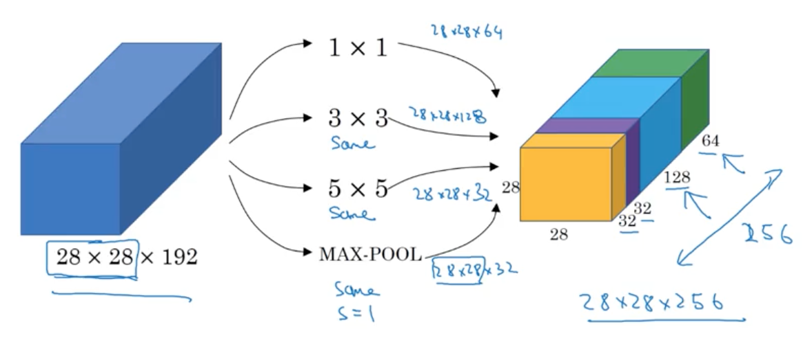
So let the network learn whatever combination of these filter sizes needed to get better results. There is a computational cost here that can be eleviated by using 1x1 convolutions. For example, imagine 28x28x192 input and 5x5 filter size, same applied to it to ouput 28x28x32. The number of multiplications required here is 28x28x5x5x192x32 ~ 120M. Alternatively, we first apply a 1x1 Conv layer to output 28x28x16 (called bottle neck) and then apply 5x5 Conv layer to get 28x28x32. The number of maultiplications now is 28x28x192x16 + 28x28x16x5x5x32 ~ 2.4M + 10M = 12.4M which order of magnitude smaller (# additions are similar). The bottle neck laer doesnt seem to hurt the performance. The following shows inception module.
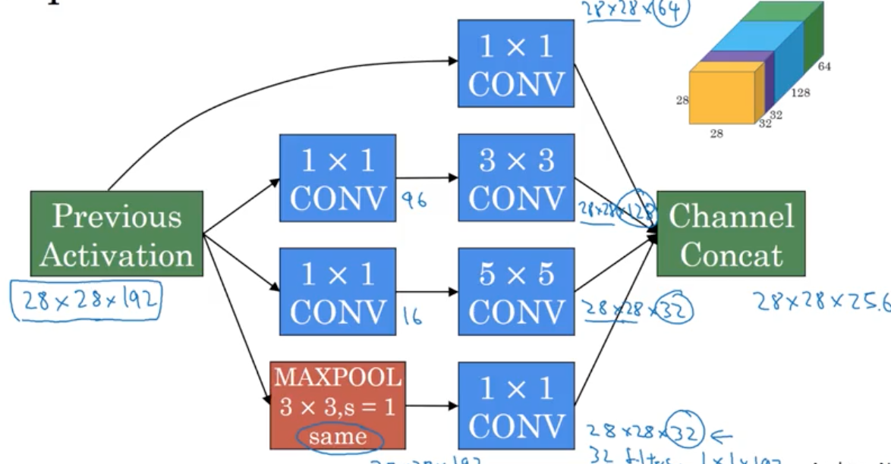
Inception network stackes several of these inception modules blocks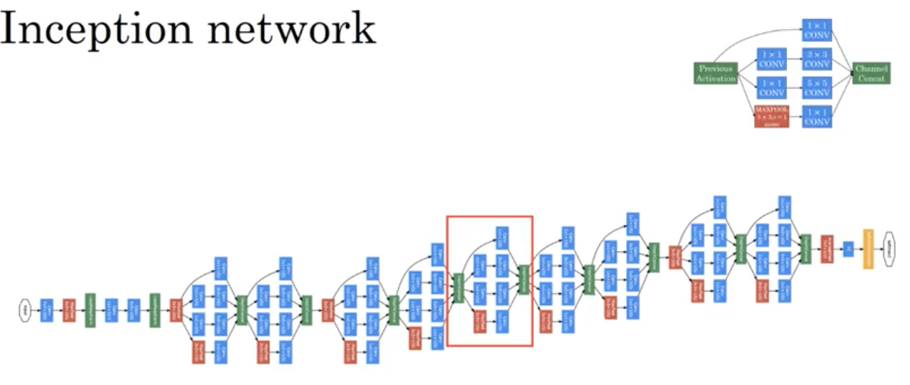
Another feature of architecture in Inception networks is that it output softmax layers a few times (before and other than the final sofmax layer) to ensure the units in the intermediate layers also trained against the labels directly which appears to have a regularization effect as well.
-
VGG-16. The runner-up in ILSVRC 2014 was the network from Karen Simonyan and Andrew Zisserman that became known as the VGGNet. Its main contribution was in showing that the depth of the network is a critical component for good performance. Their final best network contains 16 CONV/FC layers and, appealingly, features an extremely homogeneous architecture that only performs 3x3 convolutions and 2x2 pooling, with stride 1 or 2 from the beginning to the end. So it simplfied the archhitecture. Their pretrained model is available for plug and play use in Caffe. A downside of the VGGNet is that it is more expensive to evaluate and uses a lot more memory and parameters (138M). Dimension width x height keeps decreasing but the depth of filters decreases and then increases. Most of these parameters are in the first fully connected layer, and it was since found that these FC layers can be removed with no performance downgrade, significantly reducing the number of necessary parameters.
Lets break down the VGGNet in more detail as a case study. The whole VGGNet is composed of CONV layers that perform 3x3 convolutions with stride 1 and pad 1, and of POOL layers that perform 2x2 max pooling with stride 2 (and no padding). We can write out the size of the representation at each step of the processing and keep track of both the representation size and the total number of weights:
INPUT: [224x224x3] memory: 224*224*3=150K weights: 0 CONV3-64: [224x224x64] memory: 224*224*64=3.2M weights: (3*3*3)*64 = 1,728 CONV3-64: [224x224x64] memory: 224*224*64=3.2M weights: (3*3*64)*64 = 36,864 POOL2: [112x112x64] memory: 112*112*64=800K weights: 0 CONV3-128: [112x112x128] memory: 112*112*128=1.6M weights: (3*3*64)*128 = 73,728 CONV3-128: [112x112x128] memory: 112*112*128=1.6M weights: (3*3*128)*128 = 147,456 POOL2: [56x56x128] memory: 56*56*128=400K weights: 0 CONV3-256: [56x56x256] memory: 56*56*256=800K weights: (3*3*128)*256 = 294,912 CONV3-256: [56x56x256] memory: 56*56*256=800K weights: (3*3*256)*256 = 589,824 CONV3-256: [56x56x256] memory: 56*56*256=800K weights: (3*3*256)*256 = 589,824 POOL2: [28x28x256] memory: 28*28*256=200K weights: 0 CONV3-512: [28x28x512] memory: 28*28*512=400K weights: (3*3*256)*512 = 1,179,648 CONV3-512: [28x28x512] memory: 28*28*512=400K weights: (3*3*512)*512 = 2,359,296 CONV3-512: [28x28x512] memory: 28*28*512=400K weights: (3*3*512)*512 = 2,359,296 POOL2: [14x14x512] memory: 14*14*512=100K weights: 0 CONV3-512: [14x14x512] memory: 14*14*512=100K weights: (3*3*512)*512 = 2,359,296 CONV3-512: [14x14x512] memory: 14*14*512=100K weights: (3*3*512)*512 = 2,359,296 CONV3-512: [14x14x512] memory: 14*14*512=100K weights: (3*3*512)*512 = 2,359,296 POOL2: [7x7x512] memory: 7*7*512=25K weights: 0 FC: [1x1x4096] memory: 4096 weights: 7*7*512*4096 = 102,760,448 FC: [1x1x4096] memory: 4096 weights: 4096*4096 = 16,777,216 FC: [1x1x1000] memory: 1000 weights: 4096*1000 = 4,096,000TOTAL memory: 24M * 4 bytes ~= 93MB / image (only forward! ~*2 for bwd)
TOTAL params: 138M parameters
As is common with Convolutional Networks, notice that most of the memory (and also compute time) is used in the early CONV layers, and that most of the parameters are in the last FC layers. In this particular case, the first FC layer contains 100M weights, out of a total of 138M.
-
ResNet. Residual Network developed by Kaiming He et al. was the winner of ILSVRC 2015. It features special skip connections and a heavy use of batch normalization. The architecture is also missing fully connected layers at the end of the network. The reader is also referred to Kaiming’s presentation (video, slides), and some recent experiments that reproduce these networks in Torch. ResNets are currently by far the state of the art Convolutional Neural Network models and are the default choice for using ConvNets in practice (as of May 10, 2016). In particular, also see more recent developments that tweak the original architecture from Kaiming He et al. Identity Mappings in Deep Residual Networks (published March 2016). An interesting feature in ResNet is Residual Block design which is the output of layer l (which is the putput of layer l+1) is added to the linear part of of layer l+2 (if dimensions of the two are not equal, multiply it with a matrix of appropriate size with entries to be learnt during training: where w=0 if dimension of a and z are the same) before applying its non-linearity relu.
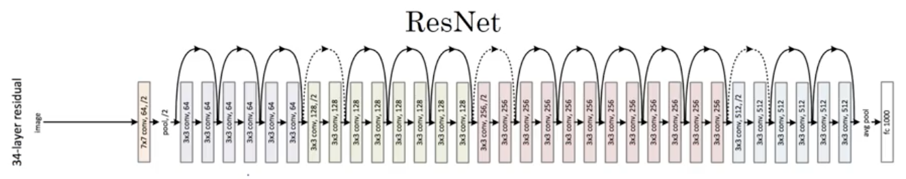
This is called a shortcut because layer l+1 is totally skipped (skip connection). The authors realized that using residual blocks allow training much deeper nets if they are stacked. This trick can strenthen the backprop gradient signal so convergence is stronger and reduce the loss for much longer interations.
Computational Considerations
The largest bottleneck to be aware of when constructing ConvNet architectures is the memory bottleneck. Many modern GPUs have a limit of 3/4/6GB memory, with the best GPUs having about 12GB of memory. There are three major sources of memory to keep track of:
-
From the intermediate volume sizes: These are the raw number of activations at every layer of the ConvNet, and also their gradients (of equal size). Usually, most of the activations are on the earlier layers of a ConvNet (i.e. first Conv Layers). These are kept around because they are needed for backpropagation, but a clever implementation that runs a ConvNet only at test time could in principle reduce this by a huge amount, by only storing the current activations at any layer and discarding the previous activations on layers below.
-
From the parameter sizes: These are the numbers that hold the network parameters, their gradients during backpropagation, and commonly also a step cache if the optimization is using momentum, Adagrad, or RMSProp. Therefore, the memory to store the parameter vector alone must usually be multiplied by a factor of at least 3 or so.
-
Every ConvNet implementation has to maintain miscellaneous memory, such as the image data batches, perhaps their augmented versions, etc.
Once you have a rough estimate of the total number of values (for activations, gradients, and misc), the number should be converted to size in GB. Take the number of values, multiply by 4 to get the raw number of bytes (since every floating point is 4 bytes, or maybe by 8 for double precision), and then divide by 1024 multiple times to get the amount of memory in KB, MB, and finally GB. If your network doesn’t fit, a common heuristic to “make it fit” is to decrease the batch size, since most of the memory is usually consumed by the activations.
Transfer Learning
In practice, very few people train an entire Convolutional Network from scratch (with random initialization), because it is relatively rare to have a dataset of sufficient size. Instead, it is common to pretrain a ConvNet on a very large dataset (e.g. ImageNet, which contains 1.2 million images with 1000 categories), and then use the ConvNet either as an initialization or a fixed feature extractor for the task of interest. The three major Transfer Learning scenarios look as follows:
-
ConvNet as fixed feature extractor:
- Take a ConvNet pretrained on ImageNet
- Remove the last fully-connected layer (this layer’s outputs are the 1000 class scores for a different task like ImageNet)
- Treat the rest of the ConvNet as a fixed feature extractor for the new dataset
In an AlexNet, this would compute a 4096-D vector for every image that contains the activations of the hidden layer immediately before the classifier. We call these features CNN codes. It is important for performance that these codes are ReLUd (i.e. thresholded at zero) if they were also thresholded during the training of the ConvNet on ImageNet (as is usually the case). Once you extract the 4096-D codes for all images, train a linear classifier (e.g. Linear SVM or Softmax classifier) for the new dataset.
-
Fine-tuning the ConvNet: The second strategy is to not only replace and retrain the classifier on top of the ConvNet on the new dataset, but to also fine-tune the weights of the pretrained network by continuing the backpropagation. It is possible to fine-tune all the layers of the ConvNet, or it’s possible to keep some of the earlier layers fixed (due to overfitting concerns) and only fine-tune some higher-level portion of the network. This is motivated by the observation that the earlier features of a ConvNet contain more generic features (e.g. edge detectors or color blob detectors) that should be useful to many tasks, but later layers of the ConvNet becomes progressively more specific to the details of the classes contained in the original dataset. In case of ImageNet for example, which contains many dog breeds, a significant portion of the representational power of the ConvNet may be devoted to features that are specific to differentiating between dog breeds.
-
Pretrained models. Since modern ConvNets take 2-3 weeks to train across multiple GPUs on ImageNet, it is common to see people release their final ConvNet checkpoints for the benefit of others who can use the networks for fine-tuning. For example, the Caffe library has a Model Zoo where people share their network weights.
When and how to fine-tune? How do you decide what type of transfer learning you should perform on a new dataset? This is a function of several factors, but the two most important ones are the size of the new dataset (small or big), and its similarity to the original dataset (e.g. ImageNet-like in terms of the content of images and the classes, or very different, such as microscope images). Keeping in mind that ConvNet features are more generic in early layers and more original-dataset-specific in later layers, here are some common rules of thumb for navigating the 4 major scenarios:
-
New dataset is small and similar to original dataset. Since the data is small, it is not a good idea to fine-tune the ConvNet due to overfitting concerns. Since the data is similar to the original data, we expect higher-level features in the ConvNet to be relevant to this dataset as well. Hence, the best idea might be to train a linear classifier on the CNN codes.
-
New dataset is large and similar to the original dataset. Since we have more data, we can have more confidence that we won’t overfit if we were to try to fine-tune through the full network.
-
New dataset is small but very different from the original dataset. Since the data is small, it is likely best to only train a linear classifier. Since the dataset is very different, it might not be best to train the classifier form the top of the network, which contains more dataset-specific features. Instead, it might work better to train the SVM classifier from activations somewhere earlier in the network.
-
New dataset is large and very different from the original dataset. Since the dataset is very large, we may expect that we can afford to train a ConvNet from scratch. However, in practice it is very often still beneficial to initialize with weights from a pretrained model. In this case, we would have enough data and confidence to fine-tune through the entire network.
Practical Advice
There are a few additional things to keep in mind when performing Transfer Learning:
-
Constraints from pretrained models. Note that if you wish to use a pretrained network, you may be slightly constrained in terms of the architecture you can use for your new dataset. For example, you can’t arbitrarily take out Conv layers from the pretrained network. However, some changes are straight-forward: Due to parameter sharing, you can easily run a pretrained network on images of different spatial size. This is clearly evident in the case of Conv/Pool layers because their forward function is independent of the input volume spatial size (as long as the strides “fit”). In case of FC layers, this still holds true because FC layers can be converted to a Convolutional Layer: For example, in an AlexNet, the final pooling volume before the first FC layer is of size [6x6x512]. Therefore, the FC layer looking at this volume is equivalent to having a Convolutional Layer that has receptive field size 6x6, and is applied with padding of 0.
-
Learning Rates. It’s common to use a smaller learning rate for ConvNet weights that are being fine-tuned, in comparison to the (randomly-initialized) weights for the new linear classifier that computes the class scores of your new dataset. This is because we expect that the ConvNet weights are relatively good, so we don’t wish to distort them too quickly and too much (especially while the new Linear Classifier above them is being trained from random initialization).
-
Data Augmentation: use mirroring, random cropping, rotation, sheering, color shifting (RGB channels), PCA color augmentation to keep the tint controlled. These distortions can be implemented in separate threads during training in each mini batches. In other words, one or more threads become responsible for loading and implementing these distortions in parallel to training.
-
Open Source: use the models in open source community usually implemented by the authors of the paers themselves rather than implemnting them yourself from scratch. These resources can be found on github.
References:
- Deep Learning by Ian Goodfellow, Yoshua Bengio, Aaron Courville
- CS231n: Convolutional Neural Networks for Visual Recognition.
- Convolutional Neural Netwroks - DeepLearning.AI
Unsupervised Learning: PCA, K-Means, GMM
Many Machine Learning problems involve thousands or even millions of features for each training instance. Not only does this make training extremely slow, it can also make it much harder to find a good solution, as we will see. This problem is often referred to as the curse of dimensionality. Fortunately, in real-world problems, it is often possible to reduce the number of features considerably, turning an intractable problem into a tractable one. For example in image data, two neighboring pixels are often highly correlated: if you merge them into a single pixel (e.g., by taking the mean of the two pixel intensities), you will not lose much information!
Reducing dimensionality does lose some information (just like compressing an image to JPEG can degrade its quality), so even though it will speed up training, it may also make your system perform slightly worse. It also makes your pipelines a bit more complex and thus harder to maintain. So you should first try to train your system with the original data before considering using dimensionality reduction if training is too slow. In some cases, however, reducing the dimensionality of the training data may filter out some noise and unnecessary details and thus result in higher performance (but in general it won’t; it will just speed up training).
Apart from speeding up training, dimensionality reduction is also extremely useful for data visualization (or DataViz). Reducing the number of dimensions down to two (or three) makes it possible to plot a condensed view of a high-dimensional training set on a graph and often gain some important insights by visually detecting patterns, such as clusters. Moreover, DataViz is essential to communicate your conclusions to people who are not data scientists, in particular decision makers who will use your results.
In dimensionality reduction, we try to learn a mapping to a lower dimensional space that preserves as much information as possible about the input. Dimensionality reduction techniques can save computation/memory, reduce overfitting, help visualize in 2 dimensions.
Main Approaches for Dimensionality Reduction
-
In most real-world problems, training instances are not spread out uniformly across all dimensions. Many features are almost constant, while others are highly correlated. As a result, all training instances actually lie within or close to a much lower-dimensional subspace of the high-dimensional space. Projection finds a lower dimensional linear space and projects our data into that space.
-
Many dimensionality reduction algorithms work by modeling the manifold on which the training instances lie; this is called Manifold Learning. This approach is based on the assumption that most real-world high-dimensional datasets lie close to a much lower-dimensional manifold. This assumption is very often empirically observed.
-
t-Distributed Stochastic Neighbor Embedding (t-SNE) reduces dimensionality while trying to keep similar instances close and dissimilar instances apart. It is mostly used for visualization, in particular to visualize clusters of instances in high-dimensional space.
-
Linear Discriminant Analysis (LDA) is actually a classification algorithm, but during training it learns the most discriminative axes between the classes, and these axes can then be used to define a hyperplane onto which to project the data. The benefit is that the projection will keep classes as far apart as possible, so LDA is a good technique to reduce dimensionality before running another classification algorithm such as an SVM classifier.
Linear dimensionality reduction (PCA)
Principal Component Analysis (PCA) is by far the most popular dimensionality reduction algorithm. First it identifies the hyperplane that lies closest to the data, and then it projects the data onto it. PCA identifies the axes called Principal Components that account for the largest amount of variance in the training set. PCA is defined as an orthogonal linear transformation on the feature vectors of a dataset that transforms the data to a new coordinate system such that the transformed feature vectors expand in the directions of the greatest variances and they are uncorrelated. So how can you find the principal components of a training set? Luckily, there is a standard matrix factorization technique called Singular Value Decomposition (SVD) which we will discuss shortly.
Suppose is a data matrix of samples with features with column-wise zero empirical mean per feature. Otherwise replace rows of with where . We are looking for an orthonormal matrix to change the basis of the space into a new basis representing the direction of maximum variances. The columns of are the unit basis vectors we are looking for. Note that the sample variance of data along a unit vector is . So our first unit basis vector is obtained as follows:
A standard result for a positive semidefinite matrix such as is that the quotient's maximum possible value is the largest eigenvalue of the matrix, which occurs when is the corresponding eigenvector. So is the eigenvalue of corresponding to the largest eigenvector. To find the second max variance unit basis vector, we repeat the same process for the new data matrix whose rows are subtraction od rows from : and so on until we find the th vector . It turns out that each step gives the remaining eigenvectors of in the decreasing order of eigenvalues. The basis vectors which are the eigenvectors of are also called principal components. The transformation maps a data vector from an original space to a new space of p variables which are uncorrelated over the dataset.
A dimensionality reduction of data is obtained selecting the first few columns of which represent the highest data variations in a smaller feature space of dimensions. For example, keeping only the first two principal components finds the two-dimensional plane through the high-dimensional dataset in which the data is most spread out, so if the data contains clusters these too may be most spread out, and therefore most visible to be plotted out in a two-dimensional diagram; whereas if any two random directions through the data are chosen, the clusters may be much less spread apart from each other, and may in fact be much more likely to substantially overlay each other, making them indistinguishable.
The explained variance ratio of each principal component indicates the proportion of the dataset’s variance that lies along the axis of each principal component. This can be used to choose the number of dimensions that add up to a sufficiently large portion of the variance, say 95%. There will usually be an elbow in the curve, where the explained variance stops growing fast. You can think of this as the intrinsic dimensionality of the dataset.
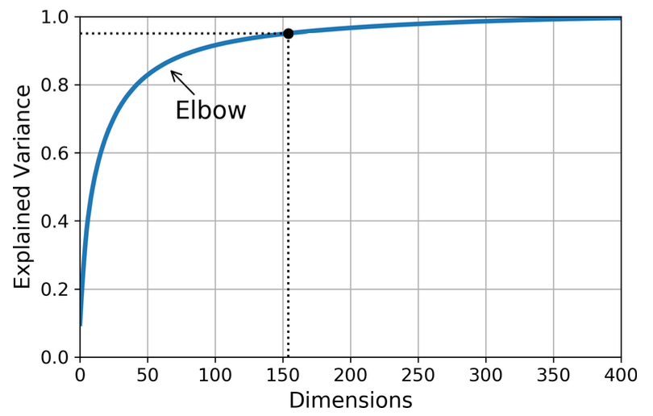
Similarly, in regression analysis, the larger the number of explanatory variables allowed, the greater is the chance of overfitting the model, producing conclusions that fail to generalize. One approach, especially when there are strong correlations between different possible explanatory variables, is to reduce them to a few principal components and then run the regression against them, a method called principal component regression.
In machine learning, the orthogonal projection of a data point onto the subspace spanned by a subset of principal components is the point closest to and is called the reconstruction of . Choosing a subspace to maximize the projected variance, or minimize the reconstruction error, is called principal component analysis (PCA).
PCA can be viewed from another point. The matrix itself is the empirical sample covariance matrix of the dataset. By definition, given a sample consisting of independent observations of multivariate random variable , an unbiased estimator of the (p×p) covariance matrix is the sample covariance matrix
Note that every term in the above sum is a matrix. In our context, this is exactly the matrix in a compact way - recall that WLOG we assumed . Here matrix product is being done in an equivalent way: column of is matrix-multiplied by row of for every from 1 to , then add all these matrices to get .
Spectral Decomposition:
A symmetric matrix A has a full set of real eigenvectors, which can be chosen to be orthonormal. This gives a decomposition , where is orthonormal and is diagonal. The columns of are eigenvectors, and the diagonal entries of Λ are the corresponding eigenvalues. I.e., symmetric matrices are diagonal in some basis. A symmetric matrix A is positive semidefinite iff each . Being a symmetric, positive semi-definite matrix, is diagonalizable:
where is the diagonal matrix of eigenvalues of . The columns of are eigenvectors of which are also the principal components.
Because trace is invariant under the change of basis and since the original diagonal entries in the covariance matrix are the variances of the features, the sum of the eigenvalues must also be equal to the sum of the original variances. In other words, the cumulative proportion of the top eigenvalue is the "explained variance" of the first principal components.
Singular value decomposition
The spectral decomposition is a special case of the singular value decomposition, which states that any matrix can be expressed as where and are unitary matrices and is a diagonal matrix. The principal components transformation can also be associated with another matrix factorization, the singular value decomposition (SVD) of ,
-
is an n-by-p rectangular diagonal matrix of positive numbers, called the singular values of ; Only the top-left block is non-zero; its non-zero diagonal entries are the square roots of the eigenvalues of (or which are the same: )
-
is an n-by-n matrix, the columns of which are orthogonal unit vectors of length n called the left singular vectors of (eigenvectors of )
-
is a p-by-p matrix whose columns are orthogonal unit vectors of length p and called the right singular vectors of (eigenvectors of and principal components).
Limitation of PCA
-
Assumes Linearity: PCA relies on a linear model. If a dataset has a pattern hidden inside it that is nonlinear, then PCA can actually steer the analysis in the complete opposite direction of progress. It cannot capture nonlinear structure, curved manifolds, or class clusters separated in a nonlinear way
-
Sensitive to Scaling: PCA is at a disadvantage if the data has not been standardized before applying the algorithm to it. In fields such as astronomy, all the signals are non-negative, and the mean-removal process will force the mean of some astrophysical exposures to be zero which requires some effort to recover the true magnitude of the signals
-
Poor Interpretability: PCA transforms the original data into data that is relevant to the principal components of that data, but the new data variables cannot be interpreted in the same ways that the originals were. Also PCA assumes the directions with highest variance are the most “informative.” which is not true. Variance might come from noise.
-
PCA may not preserve locality. Use t-SNE instead. The t-SNE algorithm was designed to preserve local distances between points in the original space. This means that t-SNE is particularly effective at preserving clusters in the original space. The full t-SNE algorithm is quite complex, so we just sketch the ideas here.
Autoencoders (Advanced PCA) and Nonlinear Dimensionality Reduction
An autoencoder is a feed-forward neural net whose job it is to take an input and predict itself . To make this non-trivial, we need to add a bottleneck layer whose dimension is much smaller than the input. Deep nonlinear autoencoders learn to project the data, not onto a subspace, but onto a nonlinear manifold.
The lower half of the architecture is called encoder and the top half is called decoder. These autoencoders have non-linear activation functions after every feed-forward layer so they can learn more powerful codes for a given dimensionality, compared with linear autoencoders (PCA)
- Map high-dimensional data to two dimensions for visualization
- Learn abstract features in an unsupervised way so you can apply them to a supervised task (Unlabled data can be much more plentiful than labeled data)
Loss function is naturally . It is proven result that the linear autoencoder is equivalent to PCA: If you restrict the autoencoder to:
- Linear activation functions (no ReLU/tanh)
- No bias terms
- Single hidden layer
- Mean-centered input
Then...
- The autoencoder learns the same subspace as PCA!
- The weights of the encoder/decoder span the space of the top principal components.
| Property | PCA | Autoencoder |
|---|---|---|
| Projection type | Linear | Can be nonlinear |
| Reconstruction | Orthogonal projection | Learned mapping |
| Training | SVD | Gradient descent |
| Noise Handling | Poor | Can use denoising autoencoders |
| Dimensionality | Fixed | Can use variational AEs, sparse AEs, etc. |
Unsupervised Learning Techniques: Clustering
Sometimes the data form clusters, where examples within a cluster are similar to each other, and examples in different clusters are dissimilar. Such a distribution is multimodal, since it has multiple modes, or regions of high probability mass. Grouping data points into clusters, with no labels, is called clustering.
Clustering is used in a wide variety of applications, including:
- Customer Segmentation: you can cluster your customers based on their purchases, their activity on your website, and so on. This is useful to understand who your customers are and what they need, so you can adapt your products and marketing campaigns to each segment. For example, this can be useful in recommender systems to suggest content that other users in the same cluster enjoyed.
- Data Analysis: when analyzing a new dataset, it is often useful to first discover clusters of similar instances, as it is often easier to analyze clusters separately.
- Dimensionality Reduction: once a dataset has been clustered, it is usually possible to measure each instance’s affinity with each cluster (affinity is any measure of how well an instance fits into a cluster). Each instance’s feature vector x can then be replaced with the vector of its cluster affinities. If there are k clusters, then this vector is k dimensional. This is typically much lower dimensional than the original feature vector, but it can preserve enough information for further processing.
- Anomaly Detection (also called outlier detection): any instance that has a low affinity to all the clusters is likely to be an anomaly. For example, if you have clustered the users of your website based on their behavior, you can detect users with unusual behavior, such as an unusual number of requests per second, and so on. Anomaly detection is particularly useful in detecting defects in manufacturing, or for fraud detection.
- Semi-supervised Learning: if you only have a few labels, you could perform clustering and propagate the labels to all the instances in the same cluster. This can greatly increase the amount of labels available for a subsequent supervised learning algorithm, and thus improve its performance.
- Search Engines: Some search engines let you search for images that are similar to a reference image. To build such a system, you would first apply a clustering algorithm to all the images in your database: similar images would end up in the same cluster. Then when a user provides a reference image, all you need to do is to find this image’s cluster using the trained clustering model, and you can then simply return all the images from this cluster.
- Segment Images: by clustering pixels according to their color, then replacing each pixel’s color with the mean color of its cluster, it is possible to reduce the number of different colors in the image considerably. This technique is used in many object detection and tracking systems, as it makes it easier to detect the contour of each object.
K-Means
K-means is a famous hard clustering algorithm. Assume the data lives in a Euclidean space, . Assume the data belongs to K classes (patterns), the data points from same class are similar, i.e. close in Euclidean distance. How can we identify those classes (data points that belong to each class)? K-means assumes there are K clusters, and each point is close to its cluster center (the mean of points in the cluster). If we knew the cluster assignment we could easily compute means. If we knew the means we could easily compute cluster assignment.
For each data point , we introduce a corresponding set of binary indicator variables , where 1, . . . , K describing which of the K clusters the data point is assigned to, so that if data point is assigned to cluster k then , and for . We can then define an objective function,
which represents the sum of the squares of the distances of each data point to its assigned vector . Our goal is to find values for the and the so as to minimize . We can do this through an iterative procedure in which each iteration involves two successive steps:
First we choose some random initial values for the (better if it is one of the points in the set). Then in the first phase we minimize with respect to the , keeping the fixed. In the second phase we minimize with respect to the , keeping fixed.
This two-stage optimization is then repeated until convergence. We shall see that these two stages of updating and updating correspond respectively to the E (expectation) and M (maximization) steps of the EM algorithm. Because is a linear function of , this optimization can be performed easily to give a closed form solution:
Now consider the optimization of the given which is an easy solution:
The denominator in this expression is equal to the number of points assigned to cluster . For this reason, the procedure is known as the K-means algorithm. K-Means can also be seen as a matrix factorization like PCA
where is cluster assignment and are centroids. In K-means, each cluster forms a Voronoi cell: region closest to that centroid. The decision boundaries between clusters are linear — K-Means assumes spherical, equally sized clusters in Euclidean space. The K-means algorithm is based on the use of squared Euclidean distance as the measure of dissimilarity between a data point and a prototype vector. Not only does this limit the type of data variables that can be considered (it would be inappropriate for cases where some or all of the variables represent categorical labels for instance), but it can also make the determination of the cluster means nonrobust to outliers. We can generalize the K-means algorithm by introducing a more general dissimilarity measure between two vectors and . K-means is sensetive to outliers as they can shift the mean significantly. Use Robust alternatives (e.g., K-Medoids) by choosing a more approriate dissimilarity measure.
Whenever an assignment is changed, the sum squared distances of data points from their assigned cluster centers is reduced. The objective is non-convex (so coordinate descent on is not guaranteed to converge to the global minimum - NP-hard, but Lloyd’s gives local optima.) Unfortunately, although the algorithm is guaranteed to converge, it may not converge to the right solution (i.e., it may get stuck at local minima): this depends on the centroid initialization.
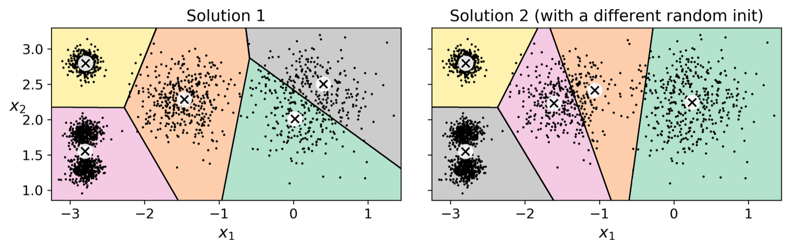
We could try non-local split-and-merge moves: simultaneously merge two nearby clusters and split a big cluster into two. The general solution is to run the algorithm multiple times with different random initializations and keep the best solution. To select the number of cluster, you may use the elbow curve on k-means loss or the mean silhouette coefficient over all the instances. An instance’s silhouette coefficient is equal to
where is the mean distance to the other instances in the same cluster (it is the mean intra-cluster distance), and is the mean nearest-cluster distance, that is the mean distance to the instances of the next closest cluster (defined as the one that minimizes , excluding the instance’s own cluster). The silhouette coefficient can vary between -1 and +1: coefficient close to +1 means that the instance is well inside its own cluster and far from other clusters, while a coefficient close to 0 means that it is close to a cluster boundary, and finally a coefficient close to -1 means that the instance may have been assigned to the wrong cluster.
An even more informative visualization is obtained when you plot every instance’s silhouette coefficient, sorted by the cluster they are assigned to and by the value of the coefficient. This is called a silhouette diagram:
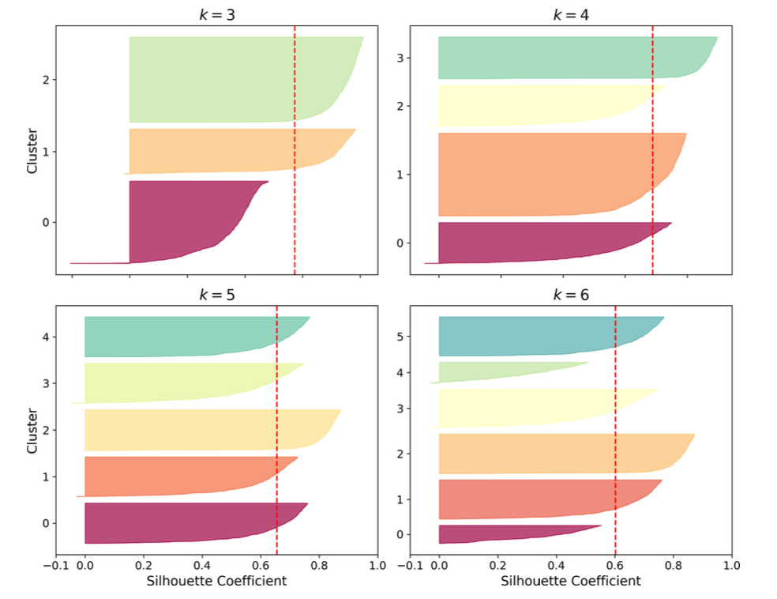
As the figure above shows, when k=5, all clusters have similar sizes, so even though the overall silhouette score from k=4 is slightly greater than for k=5, it seems like a good idea to use k=5 to get clusters of similar sizes.
K-Means does not behave very well when the clusters have varying sizes, different densities, or non-spherical shapes. For example, Figure 9-11 shows how K-Means clusters a dataset containing three ellipsoidal clusters of different dimensions, densities and orientations:
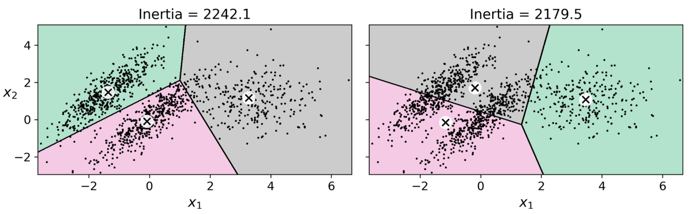
It is important to scale the input features before you run K-Means, or else the clusters may be very stretched, and K-Means will perform poorly. Scaling the features does not guarantee that all the clusters will be nice and spherical, but it generally improves things. You can also think of K-means as some sort of compression: every point is replaced by its cluster centroid.
Mixtures of Gaussians
A Gaussian mixture model (GMM) is a probabilistic model that assumes that the instances were generated from a mixture of several Gaussian distributions whose parameters are unknown. All the instances generated from a single Gaussian distribution form a cluster that typically looks like an ellipsoid. Each cluster can have a different ellipsoidal shape, size, density and orientation.
It is a generative model, meaning you can actually sample new instances from it. There are several GMM variants: in the simplest variant, implemented in the GaussianMixture class, you must know in advance the number k of Gaussian distributions.
We now turn to a formulation of Gaussian mixtures in terms of discrete latent variables. This will provide us with a deeper insight into this important distribution, and will also serve to motivate the expectation-maximization algorithm. Gaussian mixture distribution can be written as a linear superposition of Gaussians in the form
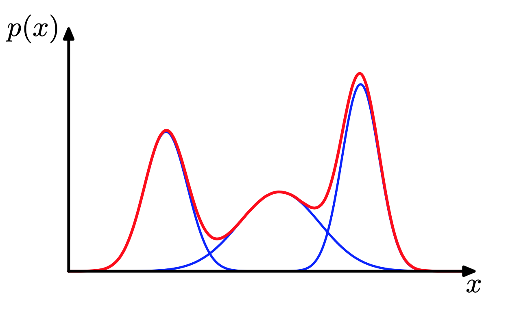
Let variable having a 1-of-K representation in which a particular element is equal to 1 and all other elements are equal to 0. We shall define the joint distribution in terms of a marginal distribution and a conditional distribution . The marginal distribution over is where . Because uses a 1-of-K representation (remember, one and only one can be 1), we can also write this distribution in the form
Also, we have the conditional probability:
The joint distribution is given by , and the marginal distribution of is then obtained by summing the joint distribution over all possible states of to give
For every observation , there is a corresponding latent variable . Another quantity that will play an important role is the conditional probability of , whose value can be found using Bayes’ theorem:
Suppose we have a dataset of observations , and we wish to model this data using a mixture of Gaussians. We can represent this dataset as an matrix in which the nth row is given by . Similarly, the corresponding latent variables will be denoted by an matrix with rows . If we assume that the data points are drawn independently from the distribution, then we can express the Gaussian mixture model for this i.i.d. dataset. The log of the likelihood function is given by
Maximizing the above log likelihood function turns out to be a more complex problem than for the case of a single Gaussian. The difficulty arises from the presence of the summation over k that appears inside the logarithm, so that the logarithm function no longer acts directly on the Gaussian. If we set the derivatives of the log likelihood to zero, we will no longer obtain a closed form solution. This summation affect could create a singularity in the process of maximization. This can occur when a Guassian collapses to a point. Assume and for some value . This data point contribute a term in the likelihood function of the form:
If , then we see that this term goes to infinity and so the log likelihood function will also go to infinity. Thus the maximization of the log likelihood function is not a well posed problem because such singularities will always be present. Recall that this problem did not arise in the case of a single Gaussian distribution. However if a single Gaussian collapses onto a data point it will contribute multiplicative factors to the likelihood function arising from the other data points and these factors will go to zero exponentially fast, giving an overall likelihood that goes to zero rather than infinity. However, once we have (at least) two components in the mixture, one of the components can have a finite variance and therefore assign finite probability to all of the data points while the other component can shrink onto one specific data point and thereby contribute an ever increasing additive value to the log likelihood.
By data-complete we mean that for each observation in , we were told the corresponding value of the latent variable . We shall call the complete dataset, and we shall refer to the actual observed data as incomplete. Now consider the problem of maximizing the likelihood for the complete dataset . This likelihood function takes the form
where denotes the kth component of . Taking the logarithm, we obtain
with constraint . The maximization with respect to a mean or a covariance is exactly as for a single Gaussian, except that it involves only the subset of data points that are ‘assigned’ to that component. For the maximization with respect to the mixing coefficients, again, this can be enforced using a Lagrange multiplier as before, and leads to the result
So the complete-data log likelihood function can be maximized trivially in closed form. In practice, however, we do not have values for the latent variables. Our state of knowledge of the values of the latent variables in is given only by the posterior distribution , in this case .
Because we cannot use the complete-data log likelihood , we consider instead its expected value under the posterior distribution of the latent variable to be maximized (according to EM algorithm):
Because
as mentioned before. According to EM algorithm, first we choose some initial values for the parameters , , , and use these to evaluate the responsibilities (the E step) from the previous equation. We then keep the responsibilities fixed and maximize the expectation mentioned above with respect to , and (the M step). This leads to closed form solutions for , , :
where . Evaluate the log likelihood
and check for convergence of either the parameters or the log likelihood.
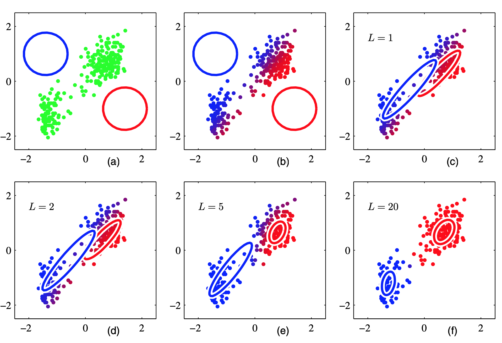
If we knew the parameters , we could infer which component a data point probably belongs to by inferring its latent variable . This is just posterior inference, which we do using Bayes’ Rule:
Just like Naive Bayes, GDA (meaning LDA amd QDA), etc. at test time.
We use EM for GMMs instead of GD because the objective involves latent variables (unobserved cluster assignments), making direct optimization via gradient descent intractable. EM is a closed-form, coordinate ascent method tailored for problems with hidden structure. Using gradient descent directly for
is very messy gradient. Each point could have come from any of K Gaussians, and we don’t know which. There is no closed-form gradient for mixture weights plus they should meet constraints (sum to 1) as well as covariance matrix contraint which makes derivatives expensive and complicated to compute. The solution of the above equation is invarient to permutation of parameters so its not a convex optimization just like neural networks. EM solves this neatly by using posterior probabilities as soft assignments and Turning the hard likelihood into an expected complete-data log-likelihood, which can be optimized in closed form.
Unfortunately, just like K-Means, EM can end up converging to poor solutions, so it needs to be run several times, keeping only the best solution. When there are many dimensions, or many clusters, or few instances, EM can struggle to converge to the optimal solution. You might need to reduce the difficulty of the task by limiting the number of parameters that the algorithm has to learn: one way to do this is to limit the range of shapes and orientations that the clusters can have. This can be achieved by imposing constraints on the covariance matrices. To do this, just set the covariance_type hyperparameter
The computational complexity of training a GaussianMixture model depends on the number of instances , the number of dimensions , the number of clusters , and the constraints on the covariance matrices. If covariance_type is "spherical or "diag", it is , assuming the data has a clustering structure. If covariance_type is "tied" or "full", it is , so it will not scale to large numbers of features.
Using a Gaussian mixture model for anomaly detection is quite simple: any instance located in a low-density region can be considered an anomaly. You must define what density threshold you want to use.
Gaussian mixture models try to fit all the data, including the outliers, so if you have too many of them, this will bias the model’s view of “normality”: some outliers may wrongly be considered as normal. If this happens, you can try to fit the model once, use it to detect and remove the most extreme outliers, then fit the model again on the cleaned up dataset. Another approach is to use robust covariance estimation methods.
The General EM Algorithm
Given a joint distribution over observed variables and latent variables , governed by parameters , the goal is to maximize the likelihood function with respect to .
- Choose an initial setting for the parameters .
- E step: Evaluate .
- M step: Evaluate given by
where - Check for convergence of either the log likelihood or the parameter values. If the convergence criterion is not satisfied, then let
and return to step II.
Relation to K-means
Comparison of the K-means algorithm with the EM algorithm for Gaussian mixtures shows that there is a close similarity. Whereas the K-means algorithm performs a hard assignment of data points to clusters, in which each data point is associated uniquely with one cluster, the EM algorithm makes a soft assignment based on the posterior probabilities. In fact, we can derive the K-means algorithm as a particular limit of EM for Gaussian mixtures just like a soft version of K-means, with fixed priors and covariance. GMM reduces to K-Means if all Gaussians have identical spherical covariances and assignments are hard. See Bishop p443.
Bayesian Gaussian Mixture Models
Rather than manually searching for the optimal number of clusters, it is possible to
use instead the BayesianGaussianMixture class which is capable of giving weights
equal (or close) to zero to unnecessary clusters. Just set the number of clusters n_com
ponents to a value that you have good reason to believe is greater than the optimal
number of clusters (this assumes some minimal knowledge about the problem at
hand), and the algorithm will eliminate the unnecessary clusters automatically.
from sklearn.mixture import BayesianGaussianMixture
bgm = BayesianGaussianMixture(n_components=10, n_init=10, random_state=42)
bgm.fit(X)
np.round(bgm.weights_, 2)
array([0.4 , 0.21, 0.4 , 0. , 0. , 0. , 0. , 0. , 0. , 0. ])
Perfect: the algorithm automatically detected that only 3 clusters are needed. In this model, the cluster parameters (including the weights, means and covariance matrices) are not treated as fixed model parameters anymore, but as latent random variables, like the cluster assignments.
Prior knowledge about the latent variables can be encoded in a probability distribution called the prior. For example, we may have a prior belief that the clusters are likely to be few (low concentration), or conversely, that they are more likely to be plentiful (high concentration). This can be adjusted using the weight_concentration_prior hyperparameter. However, the more data we have, the less the priors matter. In fact, to plot diagrams with such large differences, you must use very strong priors and little data.
The EM Algorithm: Why it Works
The expectation maximization algorithm, or EM algorithm, is a general technique for finding maximum likelihood solutions for probabilistic models having latent variables (Dempster et al., 1977; McLachlan and Krishnan, 1997). The goal of the EM algorithm is to find maximum likelihood solutions for models having latent variables like our situation here. The set of all model parameters is denoted by , and so the log likelihood function is given by
A key observation is that the summation over the latent variables appears inside the logarithm. The presence of the sum prevents the logarithm from acting directly on the joint distribution, resulting in complicated expressions for the maximum likelihood solution.
Consider a probabilistic model in which we collectively denote all of the observed variables by X and all of the hidden variables by Z. The joint distribution is governed by a set of parameters denoted . Our goal is to maximize the likelihood function that is given by
Here we are assuming Z is discrete, although the discussion is identical if Z comprises continuous variables or a combination of discrete and continuous variables, with summation replaced by integration as appropriate. We shall suppose that direct optimization of is difficult, but that optimization of the complete-data likelihood function is significantly easier. As mentioned before, in practice we are not given the complete dataset , but only the incomplete data . Our state of knowledge of the values of the latent variables in is given only by the posterior distribution . Because we cannot use the complete-data log likelihood, we consider instead its expected value under distribution of the latent variable, which corresponds (as we shall see) to the E step of the EM algorithm. Next we introduce a distribution defined over the latent variables.
The first term is named and the second term is is the Kullback-Leibler divergence between and the posterior distribution . So we obtain the decomposition:
Recall that the Kullback-Leibler divergence satisfies , with equality if, and only if, . It therefore follows from the above equation that , in other words that is a lower bound on .
The EM algorithm is a two-stage iterative optimization technique for finding maximum likelihood solutions. We can use the above decomposition to define the EM algorithm and to demonstrate that it does indeed maximize the log likelihood. Suppose that the current value of the parameter vector is .
- In the E step, the lower bound is maximized with respect to while holding fixed. The solution to this maximization problem is easily seen by noting that the value of does not depend on and so the largest value of will occur when the Kullback-Leibler divergence is minimized (i.e. vanishes), in other words when is equal to the posterior distribution in which case, the lower bound will equal the log likelihood .
- In the subsequent M step, the distribution is held fixed and the lower bound is maximized with respect to to give some new value . This will cause the lower bound to increase (unless it is already at a maximum), which will necessarily cause the corresponding log likelihood function to increase. Because the distribution q is determined using the old parameter values rather than the new values and is held fixed during the step, it will not equal the new posterior distribution , and hence there will be a nonzero divergence.
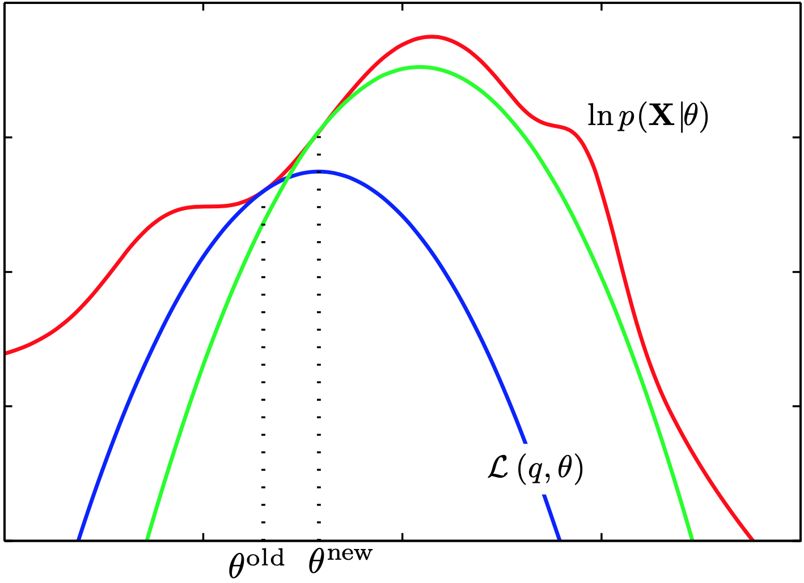
Substitute into definition of , we see that in the M step, the quantity that is being maximized is the expectation of the complete-data log likelihood
where the second term is constant as it is simply the negative entropy of the distribution and is therefore independent of . Thus the EM algorithm are increasing the value of a well-defined bound on the log likelihood function and that the complete EM cycle will change the model parameters in such a way as to cause the log likelihood to increase (unless it is already at a maximum, in which case the parameters remain unchanged).
We can also use the EM algorithm to maximize the posterior distribution for models in which we have introduced a prior over the parameters. To see this, we note that as a function of , we have and so
where is a constant. We can again optimize the right-hand side alternately with respect to and . The optimization with respect to gives rise to the same E-step equations as for the standard EM algorithm, because only appears in . The M-step equations are modified through the introduction of the prior term , which typically requires only a small modification to the standard maximum likelihood M-step equations.
Interpreting ML
partial dependence plot
Partial dependence plots (PDP) show the dependence between the objective function (target response) and a set of input features of interest, marginalizing over the values of all other input features (the ‘complement’ features). Intuitively, we can interpret the partial dependence as the expected target response as a function of the input features of interest.
Let be the set of input features of interest (i.e. the features parameter). Assuming the feature are not correlated (are independence), the partial dependence of the response at a point is defined as:
where is the number of times .
Due to the limits of human perception, the size of the set of input features of interest must be small (usually, one or two) thus the input features of interest are usually chosen among the most important features.
Permutation importance
The permutation feature importance is defined to be the decrease in a model score when a single feature value is randomly shuffled.
SHAPLEY Values
SHAP values are one of the most powerful and interpretable ways to understand how each feature affects an individual prediction. They’re based on solid math and are widely used in explainable ML.
A concept from game theory - Nobel Prize in Economics 2012. In the ML context, the game is prediction of an instance, each player is a feature, coalitions are subsets of features, and the game payoff is the difference in predicted value for an instance and the mean prediction (i.e. null model with no features used in prediction). The Shapley value is given by the formula
We will give a simple example - suppose there are 3 features , and used in a regression problem. The figure shows the possible coalitions, where the members are listed in the first line and the predicted value for the outcome using just that coalition in the model is shown in the second line.
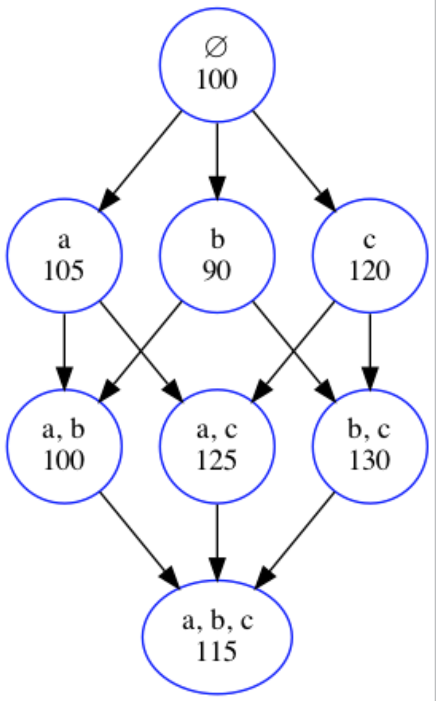
Let's work out the Shapley value of feature . First we work out the weights

The red arrows point to the coalitions where was added (and so made a contribution). To figure out the weights there are 2 rules:
- The total weights for a feature sum to 1
- The total weights on each row are equal to each other. Since there are 3 rows, the total weight of each row sums to
- All weights within a row are equal - since the second row has two weights, each weight must be
Now we multiply the weights by the marginal contributions - the value minus the coalition without that feature. So we have Shapely values as follows:
then,
So .
SHAP
Shapley Additive exPlanations:
Note that the sum of Shapley values for all features is the same as the difference between the predicted value of the full model (with all features) and the null model (with no features). So the Shapley values provide an additive measure of feature importance. In fact, we have a simple linear model that explains the contributions of each feature.
- Note 1: The prediction is for each instance (observation), so this is a local interpretation. However, we can average over all observations to get a global value.
- Note 2: There are possible coalitions of features, so exact calculation of the Shapley values as illustrated is not feasible in practice. See the reference book for details of how calculations are done in practice.
- Note 3: Since Shapley values are additive, we can just add them up over different ML models, making it useful for ensembles.
- Note 4: Strictly, the calculation we show is known as kernelSHAP. There are variants for different algorithms that are faster such as treeSHAP, but the essential concept is the same.
- Note 5: The Shapeley values quantify the contributions of a feature when it is added to a coalition. This measures something different from the permutation feature importance, which assesses the loss in predictive ability when a feature is removed from the feature set.
You can just get an "importance" type bar graph, which shows the mean absolute Shapley value for each feature. You can also use max absolute Shapley value as well.
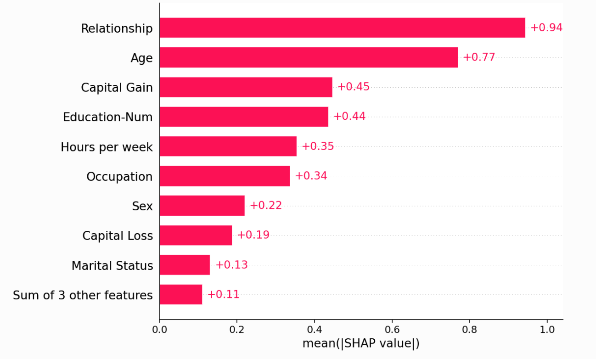
Use a beeswarm plot to summarize the entire distribution of SHAP values for each feature:
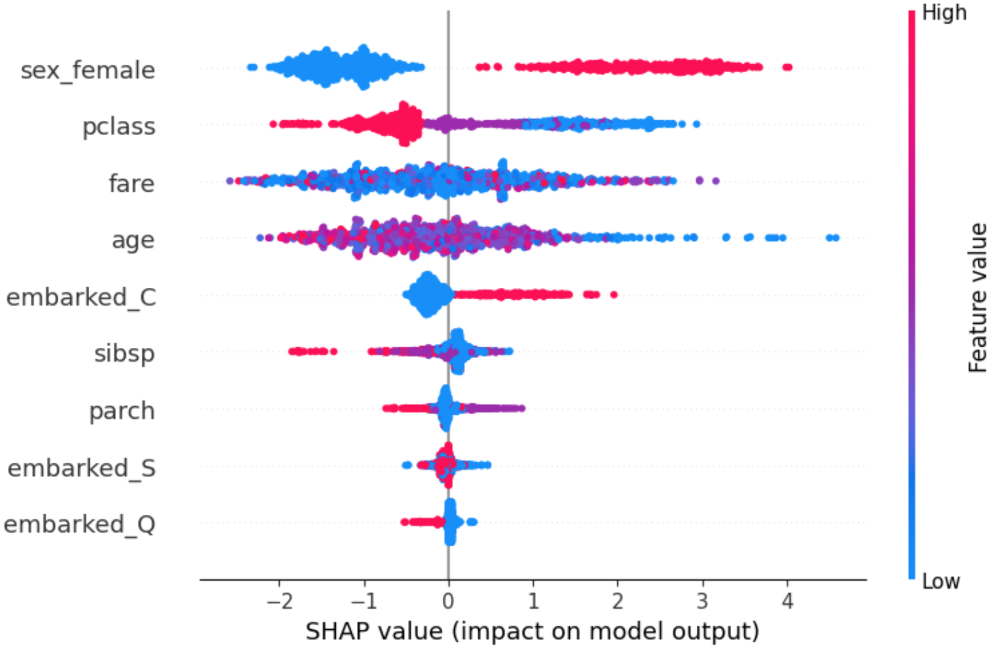
This shows the jittered Shapley values for all instances for each feature (Titanic dataset). An instance to the right of the vertical line (null model which predict the constant mean of target response for all inputs) means that the model predicts a higher probability of survival than the null model. If a point is on the right and is red, it means that for that instance, a high value of that feature predicts a higher probability of survival. For example, sex_female shows that if you have a high value (1 = female, 0 = male) your probability of survival is increased. Similarly, younger age predicts higher survival probability.
Force plot
We show the forces acting on a single instance (index 10). The model predicts a probability of survival of 0.03, which is lower than the base probability of survival (0.39). The force plot shows which features affect the difference between the full and base model predictions. Blue arrows means that the feature decreases survival probability, red arrows means that the feature increases survival probability.
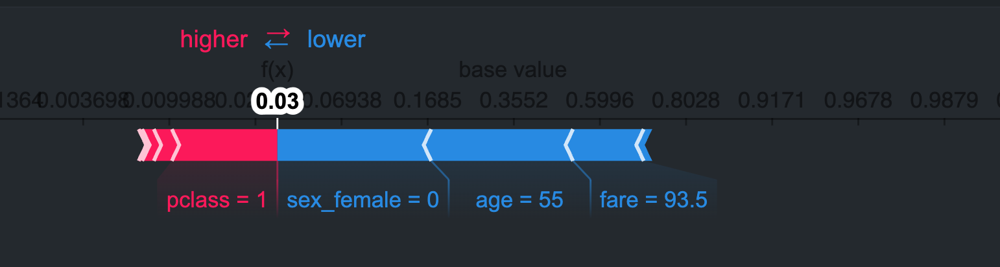
MLOps
Workspace Setup
Here is a description of how to structure a workspace setup for a machine learning project optimized for production, covering Python environment, data pipeline, preprocessing, and deployment readiness:
ml_project/
│
├── data/ # (optional local) raw & processed data
│ ├── raw/
│ └── processed/
│
├── notebooks/ # For exploratory analysis (EDA)
│
├── src/ # Source code
│ ├── config/ # Config files or Hydra config scripts
│ ├── data_pipeline/ # Data ingestion + validation
│ ├── preprocessing/ # Transformations shared by training & inference
│ ├── models/ # Model training, saving, loading
│ ├── evaluation/ # Metrics & evaluation scripts
│ └── serving/ # Inference and deployment scripts (API, CLI)
│
├── scripts/ # CLI tools to run various stages
│
├── tests/ # Unit tests
│
├── Dockerfile # Containerization
├── requirements.txt / pyproject.toml
├── .env # Secrets/config (never commit)
└── README.md
Pyhton Environment
Use virtual environments (like venv) and declare dependencies in requirements.txt.
| Category | Libraries |
|---|---|
| Environment | pip, venv (default, built-in), poetry |
| Data | pandas, numpy, pyarrow, dask, polars |
| EDA | matplotlib, seaborn, sweetviz, pandas-profiling |
| ML Frameworks | scikit-learn, xgboost, lightgbm, catboost, torch, tensorflow |
| Pipelines | scikit-learn, dagster, airflow, prefect, kedro |
| Configs | Hydra, OmegaConf, dotenv |
| Logging | loguru, mlflow, wandb |
| Serving | FastAPI, Flask, BentoML, TorchServe |
| Testing | pytest, mypy, black, ruff, pylint |
python3 -m venv venv
source venv/bin/activate # or venv\Scripts\activate on Windows
Data Mining Tools
-
Pandas: is still the default and most widely used data manipulation library in both industry and academia.
| Use Case | Is Pandas Ideal? |
| ------------------------------- | ---------------------------- |
| Exploratory Data Analysis (EDA) | ✅ Best choice |
| Clean, tabular data in memory | ✅ Excellent |
| Feature engineering for ML | ✅ Widely used |
| >100MB–1GB datasets | ⚠️ Still OK, but can slow |
| >10GB datasets | ❌ Use Dask or Polars instead | -
Dask: A parallel computing library that scales pandas, NumPy, and even machine learning to multi-core or distributed systems.
- Supports lazy evaluation, like Spark.
- Can process data larger than RAM by breaking it into chunks and processing in parallel.
- Drop-in replacement for pandas in many cases:
import dask.dataframe as dd
df = dd.read_csv("big_file.csv")
df.groupby("col").mean().compute()
When to Use Dask
-
You’re working with large datasets that don't fit in memory.
-
You want parallel processing on a cluster or multi-core machine.
-
You’re already in the Python ecosystem
-
Data fits in single machine memory or medium-scale clusters
-
You want to scale pandas, NumPy, or scikit-learn
-
You need quick setup for ML preprocessing or light ETL
-
You're working in Jupyter notebooks or ML dev environments
🧠 Best for data scientists, small/medium-scale ML pipelines, and exploratory workflows. -
Spark:
When to Use Apache Spark
- You're processing TB–PB-scale data on a cluster
- You need enterprise-grade fault tolerance, streaming, or data lake integrations
- Your org already uses big data infrastructure (EMR, Databricks, Hadoop, etc.)
- You want to run batch + streaming jobs together
🧠 Best for big data engineers, production ETL jobs, and enterprise-scale analytics.
Many companies prototype in Dask, then move pipelines to Spark (or Databricks) for production-scale processing — especially if streaming or tight integration with data lakes is needed.
The moment your data is stored in the cloud, you usually want to move away from Dask/Spark clusters you manage directly and use cloud-native, serverless or managed alternatives.
Here's a breakdown of cloud-native tools that replace Dask, Spark, and even Pandas workflows depending on the cloud provider:
| Workflow Type | Dask/Spark Equivalent in Cloud | Cloud Tools (per provider) |
|---|---|---|
| Batch Data Processing (ETL) | Spark, Dask | - AWS Glue (serverless Spark) - Google Dataflow (Apache Beam) - Azure Data Factory (ADF) |
| Interactive Queries (SQL) | Spark SQL, DuckDB, Dask DataFrames | - Amazon Athena (serverless SQL on S3) - BigQuery (GCP) - Azure Synapse SQL Serverless |
| Large-Scale ML Pipelines | Dask-ML, Spark MLlib | - SageMaker Pipelines (AWS) - Vertex AI Pipelines (GCP) - Azure ML Pipelines |
| DataFrame-like Querying | Pandas, Dask | - Snowflake + Snowpark for Python - BigQuery with pandas-gbq or dbt |
| Orchestrated Workflows (DAGs) | Airflow, Dask Scheduler | - AWS Step Functions - Cloud Composer (Airflow on GCP) - Azure Data Factory Pipelines |
| Streaming / Real-time | Spark Structured Streaming | - Kinesis Data Analytics (AWS) - Dataflow + Pub/Sub (GCP) - Azure Stream Analytics |
| Parquet/Arrow file I/O | Dask, PyArrow | - All clouds use Arrow + Parquet under the hood (via Athena, BigQuery, Snowflake, etc.) |
Cloud-by-Cloud Breakdown
AWS
| Task | Tool |
|---|---|
| ETL Pipelines | AWS Glue (Spark), AWS Data Wrangler |
| SQL on S3 | Amazon Athena |
| ML Pipelines | SageMaker Pipelines |
| Workflow Orchestration | AWS Step Functions + EventBridge |
| Serverless Python Queries | AWS Data Wrangler + Pandas |
GCP
| Task | Tool |
|---|---|
| ETL Pipelines | Dataflow (Apache Beam) |
| SQL on GCS | BigQuery |
| ML Pipelines | Vertex AI Pipelines |
| Python/SQL Analysis | BigQuery + pandas-gbq / Colab |
Azure
| Task | Tool |
|---|---|
| ETL Pipelines | Data Factory (ADF) |
| SQL on Blob Storage | Synapse Serverless SQL |
| ML Pipelines | Azure ML Pipelines |
| Streaming | Azure Stream Analytics |
Data Pipeline Setup
Goal: Ingest raw data → validate → clean → store processed version
Tools & Steps:
- Ingestion: APIs, S3, databases (via SQLAlchemy, boto3, etc.)
- Validation: pandera, Great Expectations
- Orchestration: Airflow, Prefect, or Dagster for scheduling & monitoring
- Storage: parquet, feather, or Delta Lake (if using Spark)
EDA and Feature Selection
- Use
pandas-profiling,sweetviz, orydata-profilingin notebooks. - Visualize missing data, correlations, class balance, etc.
- Document key findings to improve reproducibility.
Exploratory Data Analysis (EDA) is a critical first step in any data science or ML project. It helps you understand the structure, patterns, and anomalies in your data before modeling. Below is a structured set of EDA steps along with the most useful tools for each stage.
- Data Collection & Loading
- Read data from source (CSV, Parquet, SQL, S3, etc.)
- pandas / polars – for in-memory data
pandas.read_parquet()– for Parquet files- SQLAlchemy, BigQuery, Athena – for querying large/cloud-based data
- Dask – for out-of-core or distributed CSV/Parquet reading
- Download the Data available in a relational database or just download a single compressed file which contains a comma-separated value (CSV) file with all the data.
Create a Python function to fetch and load the data into a EDA framework like Pandas: call fetch_housing_data() to creates a datasets directory in your workspace, downloads the compressed file, and extracts the data.csv from it in this directory.
- Initial Overview
- Understand basic structure, shape, and types
- Use:
.shape,.columns,.dtypes,.head(),.info()- Null counts:
df.isnull().sum() df.describe()– summary statistics of the
numerical attributes: thecount,mean,min, andmax,std,percentiles(25th, median, 75th), histograms for each numerical attribute ...
- Null counts:
- Data Types and Missing Values
- Identify categorical, numerical, datetime columns
- Convert data types (
pd.to_datetime,astype()) - Impute or flag missing data
- Convert data types (
- Use:
- pandas, sklearn.impute, missingno (visualize null patterns)
- Univariate Analysis
- Analyze each feature individually
- Histograms for numerical data
- Bar plots for categorical variables
- Summary stats: mean, median, mode, std, skew, kurtosis
- Use:
matplotlib,seabornpandas.describe()ydata-profiling(one-click)
- Bivariate & Multivariate Analysis
- Understand relationships between variables
- Correlation matrix (df.corr())
- Scatter plots (num vs num), box plots (num vs cat), heatmaps
- Grouping by categorical features
- Use:
seaborn.pairplot,sns.heatmap,sns.boxplotplotly.express.scatter_matrixsklearn.preprocessing.LabelEncoder / OneHotEncoder
- Target Variable Analysis
- How features relate to your target (for supervised ML)
- Distribution of target classes
- Correlation with target
- Grouped statistics (
df.groupby(target).mean())
- Use:
seaborn,matplotlib,pandas
- Outlier Detection
- Identify and decide on treatment for outliers
- Boxplots, IQR method, Z-score
- Log transformation or capping
- Use:
seaborn.boxplot,scipy.stats.zscore,sklearn.preprocessing
-
Handling missing data:
- drop them, set their value (0, mean, median, impute them)
- Handling Text and Categorical Attributes: ordinal encoders, one-hot encoding (you get sparse matrix for categorical attributes with thousands of categories to avoid memory waste but still slows training for very large possible categories- in this case group them into one or you could replace each category with a learnable low dimensional vector called an embedding)
-
Split Data into Train-Val-Test:
Split data before applying any transformation that depends on data values:- Use stratified sampling to avoid significant sampling bias : the population is divided into homogeneous subgroups called strata, and the right number of instances is sampled from each stratum to guarantee that the test set is representative of the overall population. Suppose you chatted with experts who told you that the median income is a very important attribute to predict median housing prices. You may want to ensure that the test set is representative of the various categories of incomes in the whole dataset. Since the median income is a continuous numerical attribute, you first need to create an income category attribute, for example by binning. It is important to have a sufficient number of instances in your dataset for each stratum, or else the estimate of the stratum’s importance may be biased. This means that you should not have too many strata, and each stratum should be large enough. Now you are ready to do stratified sampling based on the income category.
- Fix
random_state=42for re-producibility.
-
Data Quality Checks
- Ensure data consistency and integrity
- Check for duplicates
- Unexpected value ranges or patterns
- Schema enforcement
Tools:
pandera, Great Expectations, pydeequ
- Dimensionality Reduction (maybe - only if appropriate)
- Detect hidden structure in high-dimensional data
- PCA, t-SNE, UMAP
- Use:
scikit-learn,umap-learn,plotly,seaborn
-
Build a Full Preprocessing + Model Pipeline
Write your own Custom Transformers for tasks such as custom cleanup operations or combining specific attributes. To work seamlessly with Scikit-Learn functionalities (such as pipelines), create a class and implement three methods:fit()(returning self),transform(), andfit_transform(). You can get the last one for free by simply addingTransformerMixinas a base class. Also, if you addBaseEstimatoras a base class (and avoid*argsand**kargsin your constructor) you will get two extra methods (get_params()andset_params()) that will be useful for auto‐matic hyperparameter tuning. These transformers are needed for preprocessing such as feature scaling (min-max scaling and standardization), outlier handling or any other transformation of data. Then the pipeline exposes the same methods as the final estimator. Here is an example of a pipeline using custom transformers performing several data processing steps.from sklearn.pipeline import Pipeline from sklearn.compose import ColumnTransformer from sklearn.preprocessing import StandardScaler, OneHotEncoder from sklearn.impute import SimpleImputer from sklearn.ensemble import RandomForestClassifier # Split feature types numeric_cols = X.select_dtypes(include="number").columns cat_cols = X.select_dtypes(include="object").columns # Preprocessing pipelines numeric_pipeline = Pipeline([ ('imputer', SimpleImputer(strategy='mean')), ('scaler', StandardScaler()) ]) cat_pipeline = Pipeline([ ('imputer', SimpleImputer(strategy='most_frequent')), ('encoder', OneHotEncoder(handle_unknown='ignore')) ]) # Combine column-wise preprocessor = ColumnTransformer([ ('num', numeric_pipeline, numeric_cols), ('cat', cat_pipeline, cat_cols) ])Create and use custom pipeline if needed - for example, for dropping a column:
# Use a custom transformer inside the pipeline to drop a column cleanly from sklearn.base import BaseEstimator, TransformerMixin class ColumnDropper(BaseEstimator, TransformerMixin): def __init__(self, columns_to_drop=None): self.columns_to_drop = columns_to_drop or [] def fit(self, X, y=None): return self def transform(self, X): return X.drop(columns=self.columns_to_drop)drop_cols = ["id", "duplicate_flag"] # columns you don't want passed to model dropper = ColumnDropper(columns_to_drop=drop_cols)Here is another production-safe version of an outlier removal transformer that drops rows during training, but is designed to not drop any rows during inference. This respects the real-world constraint that you usually cannot drop incoming data at inference time.
- During
.fit()and.transform()on training data, outliers are removed (rows dropped). - During
.transform()on test or inference data, rows are left untouched (you’ll typically log or monitor them, not drop).
class OutlierRemover(BaseEstimator, TransformerMixin): def __init__(self, method='iqr', factor=1.5, z_thresh=3.0, apply_to='numeric'): self.method = method # 'iqr' or 'zscore' self.factor = factor # IQR factor self.z_thresh = z_thresh # Z-score threshold self.apply_to = apply_to # 'numeric' or list of column names self.columns_ = None self.stats_ = {} def fit(self, X, y=None): X = pd.DataFrame(X) if self.apply_to == 'numeric': self.columns_ = X.select_dtypes(include='number').columns else: self.columns_ = self.apply_to if self.method == 'iqr': Q1 = X[self.columns_].quantile(0.25) Q3 = X[self.columns_].quantile(0.75) IQR = Q3 - Q1 self.stats_['lower'] = Q1 - self.factor * IQR self.stats_['upper'] = Q3 + self.factor * IQR elif self.method == 'zscore': self.stats_['mean'] = X[self.columns_].mean() self.stats_['std'] = X[self.columns_].std() else: raise ValueError("Method must be 'iqr' or 'zscore'") return self def transform(self, X, y=None): X = pd.DataFrame(X, columns=X.columns) if self.method == 'iqr': mask = ((X[self.columns_] >= self.stats_['lower']) & (X[self.columns_] <= self.stats_['upper'])).all(axis=1) else: # zscore z_scores = (X[self.columns_] - self.stats_['mean']) / self.stats_['std'] mask = (np.abs(z_scores) < self.z_thresh).all(axis=1) if y is not None: return X[mask].reset_index(drop=True), y[mask].reset_index(drop=True) else: # ⚠️ At inference, do not drop rows — just return unchanged data return X.reset_index(drop=True)It is import to know that scikit-learn pipelines are not designed to handle changes in the number of samples (rows) between steps like droping rows. They assume:
- The number of samples (rows) in X and y stays the same
- Each step transforms features (columns) only, not row counts
Best Practice: Handle Row-Dropping Outside the Pipeline
# Step 1: Clean training data (row-dropping) remover = OutlierRemover(method='iqr', factor=1.5) X_train_clean, y_train_clean = remover.fit_transform(X_train, y_train) # Create the pipeline to include all steps pipeline = Pipeline([ ('dropper', dropper), # ✅ Drop irrelevant cols ('outlier_capper', IQRCapper(factor=1.5)) # non-destructive capping for outliers ('preprocessing', preprocessor), # numeric + cat ('model', RandomForestClassifier()) # model ])The pipeline ensures that preprocessing is fit only on the training folds and applied properly on val/test folds during CV.
# Fit Only on Training Data # Now it's safe to use cross-validation # Either cross_val_score(pipeline, X_train_clean, y_train_clean, cv=5) # Or - # full_pipeline.fit(X_train_clean, y_train_clean)Predict on Raw Test Data
# Step 3: Use .transform() at inference (rows not dropped) X_test_transformed = remover.transform(X_test) preds = pipeline.predict(X_test_transformed)Or, serialize the pipeline for deployment
# Serialize both objects separately for Deployment from joblib import dump dump(remover, "outlier_remover.joblib") dump(pipeline, "model_pipeline.joblib")At inference:
from joblib import load # Load both parts remover = load("outlier_remover.joblib") pipeline = load("model_pipeline.joblib") # Raw new input (e.g. from user or API) new_data = pd.DataFrame({...}) # Apply same outlier logic (no row dropping!) cleaned_data = remover.transform(new_data) # Predict predictions = pipeline.predict(cleaned_data)Optionally you could wrap both parts remover and pipeline into one piece like this:
class FullModelWithOutlierHandling: def __init__(self, remover, pipeline): self.remover = remover self.pipeline = pipeline def fit(self, X, y): X_clean, y_clean = self.remover.fit_transform(X, y) self.pipeline.fit(X_clean, y_clean) def predict(self, X): X_transformed = self.remover.transform(X) return self.pipeline.predict(X_transformed) def save(self, path_prefix="model"): from joblib import dump dump(self.remover, f"{path_prefix}_remover.joblib") dump(self.pipeline, f"{path_prefix}_pipeline.joblib") @classmethod def load(cls, path_prefix="model"): from joblib import load remover = load(f"{path_prefix}_remover.joblib") pipeline = load(f"{path_prefix}_pipeline.joblib") return cls(remover, pipeline)and use it like this:
# Training model = FullModelWithOutlierHandling(remover, pipeline) model.fit(X_train, y_train) model.save("rf_model") # Inference model = FullModelWithOutlierHandling.load("rf_model") preds = model.predict(new_data)Benefits of This Design
- ✅ Prevents leakage and keeps logic modular
- ✅ Easy to save/load entire system
- ✅ Clean API: just .fit() and .predict()
- ✅ Fully compatible with joblib, MLflow, or FastAPI deployment
- ✅ Transparent and testable
Serialized pipelines are reusable, versionable, deployable, and production-safe. Copying code is error-prone, inconsistent, and not scalable. Imagine your training had StandardScaler() but your inference script forgot it — predictions will be totally wrong.
Benefits of Serializing (joblib.dump, pickle, torch.save, etc.):
Why It Matters What It Solves 🛠 Consistency No need to re-run preprocessing manually in production 🕰 Time-saving Avoid retraining or rewriting code to get the same result 📦 Deployment-ready Easily load pipeline in a web service (e.g. FastAPI, Flask) 💾 Versioning Save multiple models/pipelines with known behavior ✅ Integration Works well with MLflow, BentoML, SageMaker, etc 🔄 Reproducibility Same output every time from the same serialized pipeline Fop pipelines involving Deep Learning or LLMs use Pytorch, TensorFlow or HiggingFace tools:
Framework Equivalent to PipelinePurpose PyTorch nn.Sequential, custom classesCompose neural nets, transformations PyTorch Lightning LightningModule+DataModuleStructured, modular deep learning training TensorFlow tf.keras.Sequential,tf.data.DatasetModel + input pipeline Hugging Face Trainer,Pipeline,TransformersFull stack for training/inference of LLMs FastAI Learner,DataBlockHigh-level abstraction for PyTorch BentoML / MLflow Model serving w/ pre/post logic Deployment of DL/LLMs with preprocessing How It Maps:
Stage scikit-learn Deep Learning Equivalent Preprocessing Pipelinetorchvision.transforms,tf.data,datasets.Dataset.map()Model definition estimatornn.Module,Keras model, HFAutoModelFitting .fit().fit()/Trainer.train()/TrainerInference pipeline .predict()pipeline()(Hugging Face),.forward()Deployment joblib.dumptorch.save(),BentoML.save_model() - During
-
Visualization Dashboard (Optional)
- Create shareable visual overview
- Use:
- plotly, dash, streamlit, panel
- Jupyter Notebooks / Colab
- ydata-profiling, sweetviz for auto-generated dashboards
For large data or cloud-stored data, use BigQuery, or Athena with SQL to do EDA in-place instead of loading it all into memory.
Model Training, Selection and Evaluation
We want to explore data preparation options, trying out multiple models, shortlisting the best ones and fine-tuning their hyperparameters using GridSearchCV, and automating as much as possible. At this stage, we have a playground to try multiple model types, take care of overfitting/undefitting and parameter-tuning (optional to use grid search or randomized search when the hyperparameter search space is large) to choose the best model. Use K-fold cross-validation if it is not costly to train the model several times. You can easily save a Scikit-Learn models by using Python’s pickle module, or using sklearn.externals.joblib, which is more efficient at serializing large NumPy arrays. Also, you may want to use ensemble models to improve prediction performance.
- Use modular scripts for training (e.g., train.py) with config-driven hyperparameters via Hydra.
- Track experiments using MLflow or Weights & Biases.
Evaluate Your System on the Test Set:
After tweaking your models for a while, you eventually have a system that performs sufficiently well. Now is the time to evaluate the final model on the test set. There is nothing special about this process; just get the predictors and the labels from your test set, run your full_pipeline to transform the data (call transform(), not fit_transform(), you do not want to fit the test set!), and evaluate the final model on the test set:
- Evaluate using metrics appropriate to the task, and log them persistently.
final_model = grid_search.best_estimator_
X_test = strat_test_set.drop("median_house_value", axis=1)
y_test = strat_test_set["median_house_value"].copy()
X_test_prepared = full_pipeline.transform(X_test)
final_predictions = final_model.predict(X_test_prepared)
final_mse = mean_squared_error(y_test, final_predictions)
final_rmse = np.sqrt(final_mse) # => evaluates to 47,730.2
Such a point estimate of the generalization error will not be quite enough to convince you to launch: what if it is just 0.1% better than the model currently in production? To have an idea of how precise this estimate is, you can compute a 95% confidence interval for the generalization error using scipy.stats.t.interval():
from scipy import stats
confidence = 0.95
squared_errors = (final_predictions - y_test) ** 2
np.sqrt(stats.t.interval(confidence, len(squared_errors) - 1,
loc=squared_errors.mean(),
scale=stats.sem(squared_errors)))
array([45685.10470776, 49691.25001878])
Deployment-Ready Inference
Now comes the project prelaunch phase: you need to present your solution (highlighting what you have learned, what worked and what did not, what assumptions were made, and what your system’s limitations are), document everything, and create nice presentations with clear visualizations and easy-to-remember statements (e.g., “the median income is the number one predictor of housing prices”). The final performance of the system is not better than the experts’, but it may still be a good idea to launch it, especially if this frees up some time for the experts so they can work on more interesting and productive tasks.
Use FastAPI or Flask to create an API server:
from fastapi import FastAPI
import joblib
app = FastAPI()
model = joblib.load("model.pkl")
preprocessor = joblib.load("preprocessor.pkl")
@app.post("/predict")
def predict(data: InputData):
df = pd.DataFrame([data.dict()])
X = preprocessor.transform(df)
pred = model.predict(X)
return {"prediction": pred.tolist()}
- Containerize with Docker.
- CI/CD for deployment using GitHub Actions + AWS (SageMaker, Lambda, EKS, etc.).
Launch, Monitor, and Maintain Your System
Perfect, you got approval to launch! You need to
-
Get your solution ready for production, in particular by plugging the production input data sources into your system and writing tests.
-
Write monitoring code to check your system’s live performance at regular intervals and trigger alerts when it drops. This is important to catch not only sudden breakage, but also performance degradation. This is quite common because models tend to “rot” as data evolves over time, unless the models are regularly trained on fresh data.
-
Evaluating your system’s performance will require sampling the system’s predictions and evaluating them. This will generally require a human analysis. These analysts may be field experts, or workers on a crowd sourcing platform.
-
Evaluate the system’s input data quality. Sometimes
performance will degrade slightly because of a poor quality signal (e.g., a malfunctioning sensor sending random values, or another team’s output becoming stale), but it may take a while before your system’s performance degrades enough to trigger an alert. If you monitor your system’s inputs, you may catch this earlier. Monitoring the inputs is particularly important for online learning systems. -
Finally, you will generally want to train your models on a regular basis using fresh data. You should automate this process as much as possible. If you don’t, you are very likely to refresh your model only every six months (at best), and your system’s performance may fluctuate severely over time. If your system is an online learning system, you should make sure you save snapshots of its state at regular intervals so you can easily roll back to a previously working state.
Best Practices for Production
- Environment isolation: Pin package versions and use lockfiles
- Logging & monitoring: Use loguru, mlflow, Prometheus/Grafana for deployed apps
- Data & model validation: Add Great Expectations, pytest for robustness
- Model drift detection: Track feature distribution or performance over time
A production-optimized ML workspace should:
- Separate code, config, and data
- Use consistent preprocessing for training and inference
- Support reproducibility (via pipelines, logs, config management)
- Be ready for CI/CD and containerized deployment